http://1amstudios.com/2016/11/27/c64-slack-client/
0 http://1amstudios.com/2016/11/27/c64-slack-client/
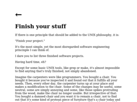http://250bpm.com/blog:50
1 http://250bpm.com/blog:50
 http://adobe-fonts.github.io/source-code-pro/
http://adobe-fonts.github.io/source-code-pro/
2 http://adobe-fonts.github.io/source-code-pro/
http://alexey.lyanguzov.ru
3 http://alexey.lyanguzov.ru
http://anartfulscience.com/Typography-First.php
4 http://anartfulscience.com/Typography-First.php
 http://augmentingcognition.com/ltm.html
http://augmentingcognition.com/ltm.html
5 http://augmentingcognition.com/ltm.html
 http://bamos.github.io/2016/08/09/deep-completion/
http://bamos.github.io/2016/08/09/deep-completion/
6 http://bamos.github.io/2016/08/09/deep-completion/
 http://betterexplained.com
http://betterexplained.com
7 http://betterexplained.com
http://blog.bonnieeisenman.com/projects/
8 http://blog.bonnieeisenman.com/projects/
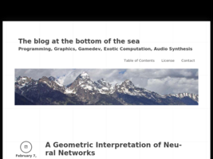http://blog.demofox.org/2017/02/07/a-geometric-interpretation-of-neural-networks/
9 http://blog.demofox.org/2017/02/07/a-geometric-interpretation-of-neural-networks/
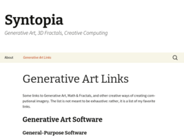http://blog.hvidtfeldts.net/index.php/generative-art-links/
10 http://blog.hvidtfeldts.net/index.php/generative-art-links/
http://blog.jakealbaugh.com/
11 http://blog.jakealbaugh.com/
 http://blog.johnnovak.net/2016/09/21/what-every-coder-should-know-about-gamma/
http://blog.johnnovak.net/2016/09/21/what-every-coder-should-know-about-gamma/
12 http://blog.johnnovak.net/2016/09/21/what-every-coder-should-know-about-gamma/
http://blog.rudnyi.ru/ru/2021/10/pechenkin-obyasnenie-kak-logika.html
13 http://blog.rudnyi.ru/ru/2021/10/pechenkin-obyasnenie-kak-logika.html
http://blog.stargrave.org/russian/
14 http://blog.stargrave.org/russian/
http://blog.straycat.me.uk/?p=1044
15 http://blog.straycat.me.uk/?p=1044
http://blog.zikes.me/post/how-i-ruined-office-productivity-with-a-slack-bot/
16 http://blog.zikes.me/post/how-i-ruined-office-productivity-with-a-slack-bot/
http://blogerator.ru/page/ne-dumaj-o-mazhorah-i-minorah-svysoka#cut
17 http://blogerator.ru/page/ne-dumaj-o-mazhorah-i-minorah-svysoka#cut
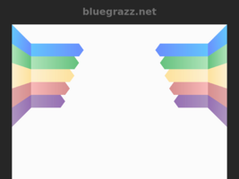http://bluegrazz.net/mike/minstrel/specific/index.html
18 http://bluegrazz.net/mike/minstrel/specific/index.html
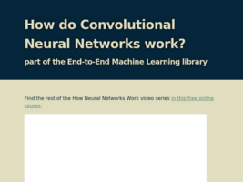http://brohrer.github.io/how_convolutional_neural_networks_work.html
19 http://brohrer.github.io/how_convolutional_neural_networks_work.html
http://chaoticatmospheres.com/biotop-from-polygonia
20 http://chaoticatmospheres.com/biotop-from-polygonia
 http://chris.moo-art.de/2017/10/zweck-eines-zettelkastens/
http://chris.moo-art.de/2017/10/zweck-eines-zettelkastens/
21 http://chris.moo-art.de/2017/10/zweck-eines-zettelkastens/
http://codepen.io/enxaneta/pen/bEggGz
22 http://codepen.io/enxaneta/pen/bEggGz
http://codepen.io/enxaneta/pen/eNbWby
23 http://codepen.io/enxaneta/pen/eNbWby
http://codepen.io/jakealbaugh/pen/EKRarY
24 http://codepen.io/jakealbaugh/pen/EKRarY
http://codepen.io/jakealbaugh/pen/qNrZyw
25 http://codepen.io/jakealbaugh/pen/qNrZyw
http://codepen.io/zadvorsky/pen/iwemx
26 http://codepen.io/zadvorsky/pen/iwemx
http://corgibytes.com/blog/2016/12/06/getting-old-er-in-tech/
27 http://corgibytes.com/blog/2016/12/06/getting-old-er-in-tech/
http://deeplearninggallery.com/
28 http://deeplearninggallery.com/
http://devzum.com/2015/06/best-machine-learning-cheat-sheets/
29 http://devzum.com/2015/06/best-machine-learning-cheat-sheets/
http://documentaryaddict.com/science
30 http://documentaryaddict.com/science
http://drmcninja.com/
31 http://drmcninja.com/
http://expertenough.com/1423/deliberate-practice
32 http://expertenough.com/1423/deliberate-practice
http://fivedots.coe.psu.ac.th/~ad/myrio/
33 http://fivedots.coe.psu.ac.th/~ad/myrio/
http://fyprocessing.tumblr.com/
34 http://fyprocessing.tumblr.com/
http://geeqie.sourceforge.net/
35 http://geeqie.sourceforge.net/
http://genekogan.com/
36 http://genekogan.com/
http://hintjens.com/blog:125
37 http://hintjens.com/blog:125
http://imgur.com/account/favorites/VbLIl
38 http://imgur.com/account/favorites/VbLIl
http://jazzrootsbook.com/routines/r_08_mamastew.html
39 http://jazzrootsbook.com/routines/r_08_mamastew.html
http://johnkenn.blogspot.ru/
40 http://johnkenn.blogspot.ru/
http://julienleonard.com/
41 http://julienleonard.com/
http://katiechironis.com/2019/11/20/career-corner-2-should-i-switch-into-games/
42 http://katiechironis.com/2019/11/20/career-corner-2-should-i-switch-into-games/
http://keepachangelog.com/ru/
43 http://keepachangelog.com/ru/
http://killsixbilliondemons.com/comic/kill-six-billion-demons-chapter-1/
44 http://killsixbilliondemons.com/comic/kill-six-billion-demons-chapter-1/
http://kimalex.blogspot.com/2014/01/learn-to-jam-20-tips-for-making-music.html
45 http://kimalex.blogspot.com/2014/01/learn-to-jam-20-tips-for-making-music.html
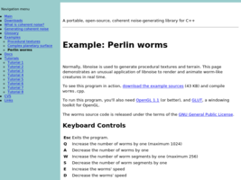http://libnoise.sourceforge.net/examples/worms/
46 http://libnoise.sourceforge.net/examples/worms/
http://lilac2012.livejournal.com/306572.html
47 http://lilac2012.livejournal.com/306572.html
http://lindyhopmoves.com/more-lindy-hop/solo-jazz-steps/
48 http://lindyhopmoves.com/more-lindy-hop/solo-jazz-steps/
http://lizthedeveloper.com/how-to-reward-skilled-coders-with-something-other-than-people-management
49 http://lizthedeveloper.com/how-to-reward-skilled-coders-with-something-other-than-people-management
http://lubyk.org/
50 http://lubyk.org/
http://ludumdare.com/compo/
51 http://ludumdare.com/compo/
http://m.habrahabr.ru/post/183646/
52 http://m.habrahabr.ru/post/183646/
 http://mathoverflow.net/questions/2556/real-world-applications-of-mathematics-by-arxiv-subject-area?rq=1
http://mathoverflow.net/questions/2556/real-world-applications-of-mathematics-by-arxiv-subject-area?rq=1
53 http://mathoverflow.net/questions/2556/real-world-applications-of-mathematics-by-arxiv-subject-area?rq=1
http://meatfighter.com/fzerotruehorizons/
54 http://meatfighter.com/fzerotruehorizons/
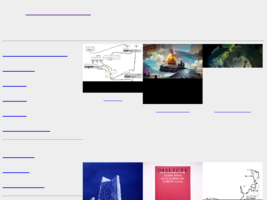http://mewo2.com/
55 http://mewo2.com/
http://minimaxir.com/2016/06/reddit-related-subreddits/
56 http://minimaxir.com/2016/06/reddit-related-subreddits/
http://moxcey.net/minstrel/readmusic/index.html
57 http://moxcey.net/minstrel/readmusic/index.html
http://moxcey.net/minstrel/specific/index.html
58 http://moxcey.net/minstrel/specific/index.html
http://natashenka.ca/
59 http://natashenka.ca/
http://nathanmarz.com/blog/how-becoming-a-pilot-made-me-a-better-programmer.html
60 http://nathanmarz.com/blog/how-becoming-a-pilot-made-me-a-better-programmer.html
http://oneeyedmen.com/book-software-part-1.html
61 http://oneeyedmen.com/book-software-part-1.html
http://opentranscripts.org/transcript/spring-2021-ossta-lecture-kate-compton/
62 http://opentranscripts.org/transcript/spring-2021-ossta-lecture-kate-compton/
http://owen.cymru/traditional-jazz-primer/
63 http://owen.cymru/traditional-jazz-primer/
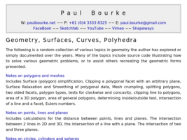http://paulbourke.net/geometry/
64 http://paulbourke.net/geometry/
http://pcgbook.com/
65 http://pcgbook.com/
http://pl.cs.jhu.edu/pl/dateline.shtml
66 http://pl.cs.jhu.edu/pl/dateline.shtml
http://play.elevatorsaga.com/
67 http://play.elevatorsaga.com/
http://ptahi.ru/
68 http://ptahi.ru/
http://queue.acm.org/detail.cfm?id=3055303
69 http://queue.acm.org/detail.cfm?id=3055303
http://radio.garden/listen/ethio-fm-107-8/StmwUVGt
70 http://radio.garden/listen/ethio-fm-107-8/StmwUVGt
http://randomfinnishlesson.blogspot.com/2014/02/news-in-easy-finnish.html
71 http://randomfinnishlesson.blogspot.com/2014/02/news-in-easy-finnish.html
http://rayli.net/blog/data/top-10-data-mining-algorithms-in-plain-english/
72 http://rayli.net/blog/data/top-10-data-mining-algorithms-in-plain-english/
 http://rv6502.ca/post/2019/01/05/starduino-3d-gaming-in-28kb-behind-the-pixels/1
http://rv6502.ca/post/2019/01/05/starduino-3d-gaming-in-28kb-behind-the-pixels/1
73 http://rv6502.ca/post/2019/01/05/starduino-3d-gaming-in-28kb-behind-the-pixels/[1](http://rv6502.ca/post/2019/01/05/starduino-3d-gaming-in-28kb-behind-the-pixels/)
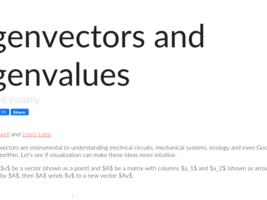http://setosa.io/ev/eigenvectors-and-eigenvalues/
74 http://setosa.io/ev/eigenvectors-and-eigenvalues/
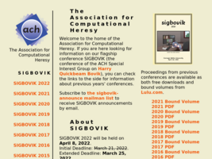http://sigbovik.org/
75 http://sigbovik.org/
http://soltem.livejournal.com/98994.html
76 http://soltem.livejournal.com/98994.html
 http://stevehanov.ca/blog/index.php?id=132
http://stevehanov.ca/blog/index.php?id=132
77 http://stevehanov.ca/blog/index.php?id=132
http://tanjand.livejournal.com/1805562.html
78 http://tanjand.livejournal.com/1805562.html
http://taotechingdecoded.com/PU/Reverse_Thinking.html
79 http://taotechingdecoded.com/PU/Reverse_Thinking.html
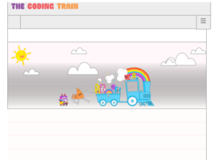http://thecodingtrain.com/
80 http://thecodingtrain.com/
http://umbloo.livejournal.com/353692.html
81 http://umbloo.livejournal.com/353692.html
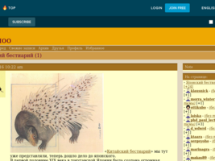http://umbloo.livejournal.com/473017.html
82 http://umbloo.livejournal.com/473017.html
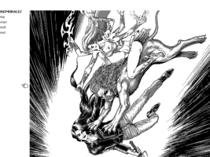http://unomoralez.com/img.html
83 http://unomoralez.com/img.html
http://varianceexplained.org/r/trump-tweets/
84 http://varianceexplained.org/r/trump-tweets/
 http://vetii.github.io/posts/zettelkasten/
http://vetii.github.io/posts/zettelkasten/
85 http://vetii.github.io/posts/zettelkasten/
http://vk.com/brandrussia
86 http://vk.com/brandrussia
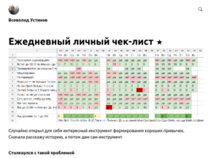http://vsevolodustinov.ru/blog/all/ezhednevny-lichny-chek-list/
87 http://vsevolodustinov.ru/blog/all/ezhednevny-lichny-chek-list/
 http://web.archive.org/web/200508280140561
http://web.archive.org/web/200508280140561
88 http://web.archive.org/web/20050828014056[1](http://firstmonday.org/issues/issue4_10/bezroukov/index.html)
http://weigert.vsos.ethz.ch/
89 http://weigert.vsos.ethz.ch/
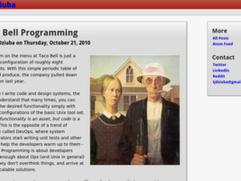http://widgetsandshit.com/teddziuba/2010/10/taco-bell-programming.html
90 http://widgetsandshit.com/teddziuba/2010/10/taco-bell-programming.html
http://writing2.richmond.edu/writing/wweb/music/notetaking.html
91 http://writing2.richmond.edu/writing/wweb/music/notetaking.html
http://www.2dgameartguru.com/2017/01/character-design-some-tips-and-tricks.html
92 http://www.2dgameartguru.com/2017/01/character-design-some-tips-and-tricks.html
 http://www.arteveryday.org/brodskij-i-utkin-bumazhnaya-arxitektura/
http://www.arteveryday.org/brodskij-i-utkin-bumazhnaya-arxitektura/
93 http://www.arteveryday.org/brodskij-i-utkin-bumazhnaya-arxitektura/
http://www.artofmanliness.com/2015/05/13/kids-and-allowance/
94 http://www.artofmanliness.com/2015/05/13/kids-and-allowance/
 http://www.asia.si.edu/collections/edan/object.php?q=fsg_FSC-PA-19&bcrumb=true
http://www.asia.si.edu/collections/edan/object.php?q=fsg_FSC-PA-19&bcrumb=true
95 http://www.asia.si.edu/collections/edan/object.php?q=fsg_FSC-PA-19&bcrumb=true
 http://www.asimovinstitute.org/neural-network-zoo/
http://www.asimovinstitute.org/neural-network-zoo/
96 http://www.asimovinstitute.org/neural-network-zoo/
 http://www.bit-101.com/blog/
http://www.bit-101.com/blog/
97 http://www.bit-101.com/blog/
http://www.brightspiral.com/img/adventure/
98 http://www.brightspiral.com/img/adventure/
http://www.bulletproofmusician.com/is-it-true-that-theres-a-way-to-learn-skills-twice-as-fast/
99 http://www.bulletproofmusician.com/is-it-true-that-theres-a-way-to-learn-skills-twice-as-fast/
http://www.bulletproofmusician.com/lazy-smart-persons-guide-mastering-self-control/
100 http://www.bulletproofmusician.com/lazy-smart-persons-guide-mastering-self-control/
http://www.bulletproofmusician.com/pettlep-a-7-point-how-to-guide-for-visualization/
101 http://www.bulletproofmusician.com/pettlep-a-7-point-how-to-guide-for-visualization/
 http://www.bzarg.com/p/how-a-kalman-filter-works-in-pictures/
http://www.bzarg.com/p/how-a-kalman-filter-works-in-pictures/
102 http://www.bzarg.com/p/how-a-kalman-filter-works-in-pictures/
 http://www.catb.org/%7Eesr/faqs/smart-questions.html
http://www.catb.org/%7Eesr/faqs/smart-questions.html
103 http://www.catb.org/%7Eesr/faqs/smart-questions.html
 http://www.catb.org/esr/faqs/hacker-howto.html
http://www.catb.org/esr/faqs/hacker-howto.html
104 http://www.catb.org/esr/faqs/hacker-howto.html
http://www.complexification.net/gallery/
105 http://www.complexification.net/gallery/
http://www.daedtech.com/salary-negotiations-win-by-losing/
106 http://www.daedtech.com/salary-negotiations-win-by-losing/
http://www.datasciencecentral.com/profiles/blogs/10-types-of-regressions-which-one-to-use
107 http://www.datasciencecentral.com/profiles/blogs/10-types-of-regressions-which-one-to-use
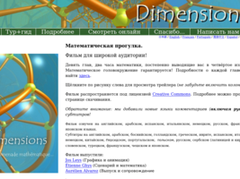http://www.dimensions-math.org/Dim_RU.htm
108 http://www.dimensions-math.org/Dim_RU.htm
http://www.elementsofprogramming.com/
109 http://www.elementsofprogramming.com/
http://www.evanmiller.org/how-not-to-sort-by-average-rating.html
110 http://www.evanmiller.org/how-not-to-sort-by-average-rating.html
http://www.evanmiller.org/small-data.html
111 http://www.evanmiller.org/small-data.html
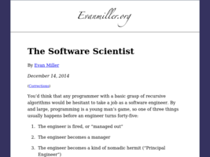http://www.evanmiller.org/the-software-scientist.html
112 http://www.evanmiller.org/the-software-scientist.html
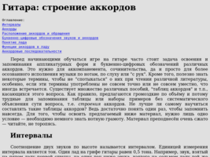http://www.guitarshilin.ru/chords.html
113 http://www.guitarshilin.ru/chords.html
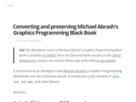http://www.jagregory.com/writings/converting-and-preserving-michael-abrash-graphics-programming-black-book
114 http://www.jagregory.com/writings/converting-and-preserving-michael-abrash-graphics-programming-black-book
http://www.jbott.com/charles.html
115 http://www.jbott.com/charles.html
 http://www.jbott.com/index.html
http://www.jbott.com/index.html
116 http://www.jbott.com/index.html
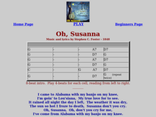http://www.jbott.com/osusana1.html
117 http://www.jbott.com/osusana1.html
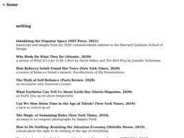http://www.jennyodell.com/writing.html
118 http://www.jennyodell.com/writing.html
 http://www.kevinlucbert.com/index.php?/mythes/au-coeur-des-tenebres/
http://www.kevinlucbert.com/index.php?/mythes/au-coeur-des-tenebres/
119 http://www.kevinlucbert.com/index.php?/mythes/au-coeur-des-tenebres/
http://www.lac.ane.pl/pdf/5409.pdf
120 http://www.lac.ane.pl/pdf/5409.pdf
http://www.lindyladder.com/
121 http://www.lindyladder.com/
 http://www.lofibucket.com/articles/64k_intro.html
http://www.lofibucket.com/articles/64k_intro.html
122 http://www.lofibucket.com/articles/64k_intro.html
http://www.loyalbooks.com/language/Latin
123 http://www.loyalbooks.com/language/Latin
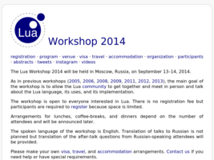http://www.lua.org/wshop14.html
124 http://www.lua.org/wshop14.html
http://www.manythings.org/banjo/tunes/
125 http://www.manythings.org/banjo/tunes/
 http://www.milchior.fr/blog_en/index.php/post/2019/05/04/Anki-and-learning-which-require-practice-%28origami%2C-knot%2C-instrument…%29
http://www.milchior.fr/blog_en/index.php/post/2019/05/04/Anki-and-learning-which-require-practice-%28origami%2C-knot%2C-instrument…%29
126 http://www.milchior.fr/blog_en/index.php/post/2019/05/04/Anki-and-learning-which-require-practice-%28origami%2C-knot%2C-instrument…%29
http://www.milchior.fr/blog_en/index.php/post/2019/05/05/Learning-how-to-play-music-with-anki
127 http://www.milchior.fr/blog_en/index.php/post/2019/05/05/Learning-how-to-play-music-with-anki
http://www.milchior.fr/blog_en/index.php/post/2020/01/22/How-I-learn-lyrics-with-anki
128 http://www.milchior.fr/blog_en/index.php/post/2020/01/22/How-I-learn-lyrics-with-anki
http://www.nathalielawhead.com/candybox/
129 http://www.nathalielawhead.com/candybox/
http://www.nathalielawhead.com/candybox/a-retrospective-on-the-electric-zine-maker-making-tools-sharing-the-numbers-and-more-after-launching-the-really-big-update
130 http://www.nathalielawhead.com/candybox/a-retrospective-on-the-electric-zine-maker-making-tools-sharing-the-numbers-and-more-after-launching-the-really-big-update
http://www.nathalielawhead.com/candybox/talk-transcript-spring-2021-ossta-lecture-series-my-talk-on-tiny-non-commercial-tools-fantasy-consoles-and-tools-as-games
131 http://www.nathalielawhead.com/candybox/talk-transcript-spring-2021-ossta-lecture-series-my-talk-on-tiny-non-commercial-tools-fantasy-consoles-and-tools-as-games
http://www.nathalielawhead.com/candybox/tiny-tools-and-the-ephemeral-nature-of-digital-art
132 http://www.nathalielawhead.com/candybox/tiny-tools-and-the-ephemeral-nature-of-digital-art
http://www.natureofcode.com
133 http://www.natureofcode.com
http://www.nigelgatherer.com/tunes/tunes/F/FlowE.html
134 http://www.nigelgatherer.com/tunes/tunes/F/FlowE.html
http://www.offbeatband.com/2009/10/listening-intentionally-a-higher-level-of-music-study/
135 http://www.offbeatband.com/2009/10/listening-intentionally-a-higher-level-of-music-study/
http://www.offbeatband.com/2010/01/how-to-memorize-songs/
136 http://www.offbeatband.com/2010/01/how-to-memorize-songs/
http://www.offbeatband.com/2011/04/how-to-figure-songs-out-rhythm-guitar-and-chord-progressions/
137 http://www.offbeatband.com/2011/04/how-to-figure-songs-out-rhythm-guitar-and-chord-progressions/
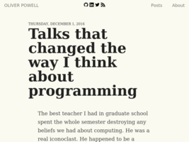http://www.opowell.com/post/talks-that-changed-the-way-i-think-about-programming/
138 http://www.opowell.com/post/talks-that-changed-the-way-i-think-about-programming/
http://www.oracle.com/us/products/database/odm-techniques-algorithms-097163.html
139 http://www.oracle.com/us/products/database/odm-techniques-algorithms-097163.html
http://www.photonstorm.com/art/tutorials-art/16x16-pixel-art-tutorial
140 http://www.photonstorm.com/art/tutorials-art/16x16-pixel-art-tutorial
http://www.plusultra.ninja/monstr.html
141 http://www.plusultra.ninja/monstr.html
http://www.projectvixen.com/zen.htm
142 http://www.projectvixen.com/zen.htm
 http://www.rexegg.com/regex-best-trick.html
http://www.rexegg.com/regex-best-trick.html
143 http://www.rexegg.com/regex-best-trick.html
http://www.sirlin.net/ptw
144 http://www.sirlin.net/ptw
http://www.slideshare.net/billkarwin/sql-antipatterns-strike-back
145 http://www.slideshare.net/billkarwin/sql-antipatterns-strike-back
http://www.socher.org/index.php/DeepLearningTutorial/DeepLearningTutorial
146 http://www.socher.org/index.php/DeepLearningTutorial/DeepLearningTutorial
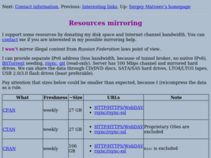http://www.stargrave.org/Mirroring.html
147 http://www.stargrave.org/Mirroring.html
 http://www.stargrave.org/index.html
http://www.stargrave.org/index.html
148 http://www.stargrave.org/index.html
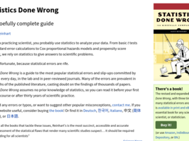http://www.statisticsdonewrong.com/
149 http://www.statisticsdonewrong.com/
http://www.stevemcconnell.com/rd.htm
150 http://www.stevemcconnell.com/rd.htm
http://www.svob.narod.ru/abaev/chancultura.htm
151 http://www.svob.narod.ru/abaev/chancultura.htm
http://www.tbanjo.com/2011/07/rhythm-tenor-banjo-strumming-mandolin.html
152 http://www.tbanjo.com/2011/07/rhythm-tenor-banjo-strumming-mandolin.html
[http://www.tbanjo.com/2011/07/rhythm-tenor-banjo-strumming-mandolin.html]](small/f62b7e8dc0ffdba5d591180ce138671fd3be6fa8.png)
[153 http://www.tbanjo.com/2011/07/rhythm-tenor-banjo-strumming-mandolin.html]](http://www.tbanjo.com/2011/07/rhythm-tenor-banjo-strumming-mandolin.html])
http://www.tbanjo.com/2012/01/learning-irish-and-oldtime-fiddle-tunes.html
154 http://www.tbanjo.com/2012/01/learning-irish-and-oldtime-fiddle-tunes.html
http://www.tbanjo.com/2012/03/making-most-of-practice-time.html
155 http://www.tbanjo.com/2012/03/making-most-of-practice-time.html
http://www.tbanjo.com/2012/10/how-to-teach-yourself-tune-music-tip.html#comment-form
156 http://www.tbanjo.com/2012/10/how-to-teach-yourself-tune-music-tip.html#comment-form
 http://www.tbanjo.com/2014/02/lilting-solfege.html#comment-form
http://www.tbanjo.com/2014/02/lilting-solfege.html#comment-form
157 http://www.tbanjo.com/2014/02/lilting-solfege.html#comment-form
http://www.tbanjo.com/2014/05/natalie-goldbergs-writing-down-bones-as.html#comment-form
158 http://www.tbanjo.com/2014/05/natalie-goldbergs-writing-down-bones-as.html#comment-form
[http://www.tbanjo.com/2014/09/learning-how-to-learn-with-barbara.html]](small/9ae5983213493c07d9f91ae3286e96c9add75f69.png)
[159 http://www.tbanjo.com/2014/09/learning-how-to-learn-with-barbara.html]](http://www.tbanjo.com/2014/09/learning-how-to-learn-with-barbara.html])
 http://www.tbanjo.com/search/label/Playing%20Tips
http://www.tbanjo.com/search/label/Playing%20Tips
160 http://www.tbanjo.com/search/label/Playing%20Tips
 http://www.the-village.ru/village/service-shopping/price-quality/174877-gde-kupit-chyornyy-plasch
http://www.the-village.ru/village/service-shopping/price-quality/174877-gde-kupit-chyornyy-plasch
161 http://www.the-village.ru/village/service-shopping/price-quality/174877-gde-kupit-chyornyy-plasch
http://www.tomgauld.com/
162 http://www.tomgauld.com/
http://www.tylerlhobbs.com/writings
163 http://www.tylerlhobbs.com/writings
http://www.wayz.co.nz/store/memory/make-your-own-memory-journal
164 http://www.wayz.co.nz/store/memory/make-your-own-memory-journal
http://www.wayz.co.nz/store/memory/planning-remember
165 http://www.wayz.co.nz/store/memory/planning-remember
http://www.wayz.co.nz/store/study/effective-notetaking
166 http://www.wayz.co.nz/store/study/effective-notetaking
http://www.zachtronics.com/
167 http://www.zachtronics.com/
 http://yeokhengmeng.com/2019/12/building-a-new-win-3-1-app-in-2019-part-1-slack-client/
http://yeokhengmeng.com/2019/12/building-a-new-win-3-1-app-in-2019-part-1-slack-client/
168 http://yeokhengmeng.com/2019/12/building-a-new-win-3-1-app-in-2019-part-1-slack-client/
https://311208.livejournal.com/399212.html
169 https://311208.livejournal.com/399212.html
https://4brain.ru/blog/%D0%B2%D0%B5%D0%B4%D0%B5%D0%BD%D0%B8%D0%B5-%D0%B4%D0%BD%D0%B5%D0%B2%D0%BD%D0%B8%D0%BA%D0%B0/
170 https://4brain.ru/blog/%D0%B2%D0%B5%D0%B4%D0%B5%D0%BD%D0%B8%D0%B5-%D0%B4%D0%BD%D0%B5%D0%B2%D0%BD%D0%B8%D0%BA%D0%B0/
https://acomics.ru/~alfie/1
171 https://acomics.ru/~alfie/1
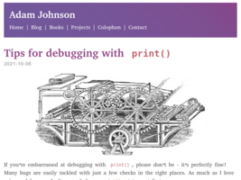https://adamj.eu/tech/2021/10/08/tips-for-debugging-with-print/
172 https://adamj.eu/tech/2021/10/08/tips-for-debugging-with-print/
 https://adr.github.io/
https://adr.github.io/
173 https://adr.github.io/
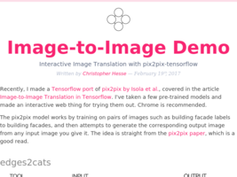https://affinelayer.com/pixsrv/
174 https://affinelayer.com/pixsrv/
https://alfalady.org/samorazvitie/326-kak-napisat-pesnyu.html
175 https://alfalady.org/samorazvitie/326-kak-napisat-pesnyu.html
https://alienmelon.itch.io/
176 https://alienmelon.itch.io/
https://altsoph.medium.com/
177 https://altsoph.medium.com/
 https://amdm.ru/akkordi/otava_yo/172640/oy_dusya_oy_marusya/
https://amdm.ru/akkordi/otava_yo/172640/oy_dusya_oy_marusya/
178 https://amdm.ru/akkordi/otava_yo/172640/oy_dusya_oy_marusya/
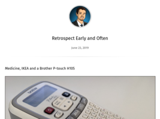https://amir.rachum.com/blog/2019/06/23/retrospectives/
179 https://amir.rachum.com/blog/2019/06/23/retrospectives/
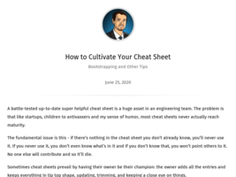https://amir.rachum.com/blog/2020/06/25/cheat-sheet/
180 https://amir.rachum.com/blog/2020/06/25/cheat-sheet/
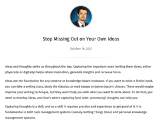https://amir.rachum.com/blog/2021/10/16/capturing-thoughts/
181 https://amir.rachum.com/blog/2021/10/16/capturing-thoughts/
https://anairos.livejournal.com/195423.html?view=comments#comments
182 https://anairos.livejournal.com/195423.html?view=comments#comments
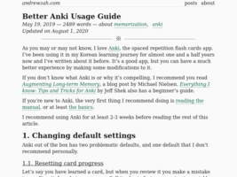https://andrewzah.com/posts/2019/better-anki-usage-guide/
183 https://andrewzah.com/posts/2019/better-anki-usage-guide/
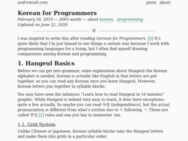https://andrewzah.com/posts/2019/korean_for_programmers/
184 https://andrewzah.com/posts/2019/korean_for_programmers/
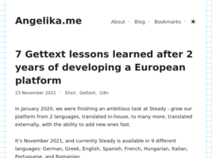https://angelika.me/2021/11/23/7-gettext-lessons-after-2-years/
185 https://angelika.me/2021/11/23/7-gettext-lessons-after-2-years/
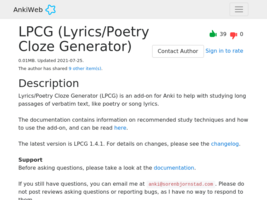https://ankiweb.net/shared/info/2084557901
186 https://ankiweb.net/shared/info/2084557901
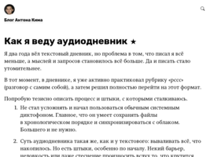https://antonkim.ru/blog/all/my-audio-diary/
187 https://antonkim.ru/blog/all/my-audio-diary/
 https://antonkim.ru/blog/page-2/
https://antonkim.ru/blog/page-2/
188 https://antonkim.ru/blog/page-2/
https://anujsyal.com/gpt-3-the-latest-language-model-in-ai-c8634a314911
189 https://anujsyal.com/gpt-3-the-latest-language-model-in-ai-c8634a314911
https://anvaka.github.io/common-words/#?lang=js
190 https://anvaka.github.io/common-words/#?lang=js
 https://archive.org/details/computermagazines?&sort=-week&page=4
https://archive.org/details/computermagazines?&sort=-week&page=4
191 https://archive.org/details/computermagazines?&sort=-week&page=4
https://ardour.org/features.html
192 https://ardour.org/features.html
https://areena.yle.fi/tv/suorat/yle-tv1
193 https://areena.yle.fi/tv/suorat/yle-tv1
 https://arpitbhayani.me/blogs/genetic-knapsack
https://arpitbhayani.me/blogs/genetic-knapsack
194 https://arpitbhayani.me/blogs/genetic-knapsack
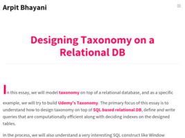https://arpitbhayani.me/blogs/udemy-sql-taxonomy
195 https://arpitbhayani.me/blogs/udemy-sql-taxonomy
https://arzamas.academy/micro/alkhimia
196 https://arzamas.academy/micro/alkhimia
https://askubuntu.com/questions/147052/step-by-step-to-run-a-midi-keyboard-input-device-12-04
197 https://askubuntu.com/questions/147052/step-by-step-to-run-a-midi-keyboard-input-device-12-04
https://askubuntu.com/questions/628235/highest-quality-sampler-synthesizer-in-ubuntu
198 https://askubuntu.com/questions/628235/highest-quality-sampler-synthesizer-in-ubuntu
 https://askubuntu.com/questions/65951/how-to-disable-the-touchpad
https://askubuntu.com/questions/65951/how-to-disable-the-touchpad
199 https://askubuntu.com/questions/65951/how-to-disable-the-touchpad
 https://author.today/reader/158625/1291086
https://author.today/reader/158625/1291086
200 https://author.today/reader/158625/1291086
https://author.today/work/158625
201 https://author.today/work/158625
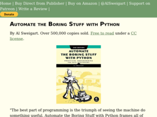https://automatetheboringstuff.com/#toc
202 https://automatetheboringstuff.com/#toc
https://automattic.design/2018/10/02/what-makes-us-creative/
203 https://automattic.design/2018/10/02/what-makes-us-creative/
https://awsmtv.com/
204 https://awsmtv.com/
https://badquar.to/
205 https://badquar.to/
 https://bartwronski.com/2019/08/14/how-not-to-test-graphics-algorithms/
https://bartwronski.com/2019/08/14/how-not-to-test-graphics-algorithms/
206 https://bartwronski.com/2019/08/14/how-not-to-test-graphics-algorithms/
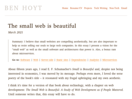https://benhoyt.com/writings/the-small-web-is-beautiful/
207 https://benhoyt.com/writings/the-small-web-is-beautiful/
https://betterprogramming.pub/my-2-cents-on-mental-health-for-programmers-40086ec3d3
208 https://betterprogramming.pub/my-2-cents-on-mental-health-for-programmers-40086ec3d3
https://biography.wikireading.ru/6874
209 https://biography.wikireading.ru/6874
https://bitfieldconsulting.com/golang/test-last-development
210 https://bitfieldconsulting.com/golang/test-last-development
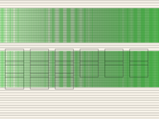https://bits.ashleyblewer.com/halt-and-catch-fire-syllabus/
211 https://bits.ashleyblewer.com/halt-and-catch-fire-syllabus/
https://bitsquest.bitbucket.io/index.html?#0
212 https://bitsquest.bitbucket.io/index.html?#0
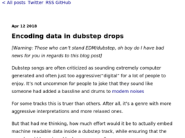https://blog.benjojo.co.uk/post/encoding-data-into-dubstep-drops
213 https://blog.benjojo.co.uk/post/encoding-data-into-dubstep-drops
https://blog.bitsrc.io/automatic-batching-in-react-18-what-you-should-know-d50141dc096e
214 https://blog.bitsrc.io/automatic-batching-in-react-18-what-you-should-know-d50141dc096e
 https://blog.demofox.org/2017/07/25/counting-bits-the-normal-distribution/
https://blog.demofox.org/2017/07/25/counting-bits-the-normal-distribution/
215 https://blog.demofox.org/2017/07/25/counting-bits-the-normal-distribution/
https://blog.devgenius.io/why-low-code-development-tools-will-not-result-in-80-of-software-being-created-by-citizen-ad6143a60e48
216 https://blog.devgenius.io/why-low-code-development-tools-will-not-result-in-80-of-software-being-created-by-citizen-ad6143a60e48
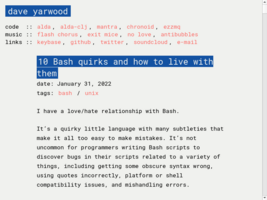https://blog.djy.io/10-bash-quirks-and-how-to-live-with-them/
217 https://blog.djy.io/10-bash-quirks-and-how-to-live-with-them/
https://blog.farazshaikh.com/stories/rendering-1-m-particles/
218 https://blog.farazshaikh.com/stories/rendering-1-m-particles/
https://blog.insightdatascience.com/how-to-solve-90-of-nlp-problems-a-step-by-step-guide-fda605278e4e
219 https://blog.insightdatascience.com/how-to-solve-90-of-nlp-problems-a-step-by-step-guide-fda605278e4e
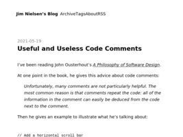https://blog.jim-nielsen.com/2021/useful-and-usless-code-comments/
220 https://blog.jim-nielsen.com/2021/useful-and-usless-code-comments/
https://blog.monkeylearn.com/a-gentle-guide-to-machine-learning/
221 https://blog.monkeylearn.com/a-gentle-guide-to-machine-learning/
https://blog.nelhage.com/post/some-opinionated-sql-takes/
222 https://blog.nelhage.com/post/some-opinionated-sql-takes/
 https://blog.plover.com/lang/
https://blog.plover.com/lang/
223 https://blog.plover.com/lang/
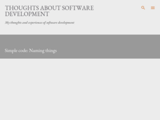https://blog.polarcoder.net/2021/08/simple-code-naming-things.html
224 https://blog.polarcoder.net/2021/08/simple-code-naming-things.html
https://blog.professorbeekums.com/2021/interview-performance/
225 https://blog.professorbeekums.com/2021/interview-performance/
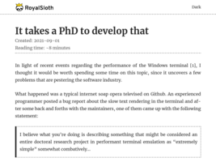https://blog.royalsloth.eu/posts/it-takes-a-phd-to-develop-that/
226 https://blog.royalsloth.eu/posts/it-takes-a-phd-to-develop-that/
https://blog.soshace.com/list-of-coding-games-to-practice-improve-your-programming-skills/
227 https://blog.soshace.com/list-of-coding-games-to-practice-improve-your-programming-skills/
https://blog.woubuc.be/post/self-documenting-code-is-a-myth/
228 https://blog.woubuc.be/post/self-documenting-code-is-a-myth/
 https://blogs.mathworks.com/headlines/2016/09/08/this-56-year-old-algorithm-is-key-to-space-travel-gps-vr-and-more/?utm_source=mybridge&utm_medium=email&utm_campaign=read_more
https://blogs.mathworks.com/headlines/2016/09/08/this-56-year-old-algorithm-is-key-to-space-travel-gps-vr-and-more/?utm_source=mybridge&utm_medium=email&utm_campaign=read_more
229 https://blogs.mathworks.com/headlines/2016/09/08/this-56-year-old-algorithm-is-key-to-space-travel-gps-vr-and-more/?utm_source=mybridge&utm_medium=email&utm_campaign=read_more
https://blogs.uoregon.edu/4dbio/2013/08/08/you-can-only-have-three-hobbies-as-a-scientist-and-you-should/
230 https://blogs.uoregon.edu/4dbio/2013/08/08/you-can-only-have-three-hobbies-as-a-scientist-and-you-should/
https://bobdoto.computer/progressive-summarization-and-zettelkasten
231 https://bobdoto.computer/progressive-summarization-and-zettelkasten
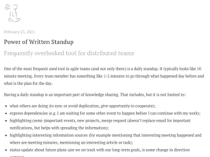https://bobek.cz/blog/2021/written-standup/
232 https://bobek.cz/blog/2021/written-standup/
https://brendan-power.com/instruction.php#view3
233 https://brendan-power.com/instruction.php#view3
https://briskreader.com/?url=https://thinkingthrough.substack.com/p/dont-do-interviews-do-discussions
234 https://briskreader.com/?url=https://thinkingthrough.substack.com/p/dont-do-interviews-do-discussions
https://brothersarntzen.bandcamp.com/
235 https://brothersarntzen.bandcamp.com/
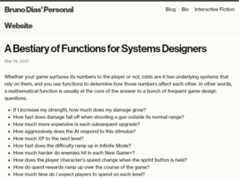https://brunodias.dev/2021/03/19/functions-for-system-designers.html
236 https://brunodias.dev/2021/03/19/functions-for-system-designers.html
https://buffer.com/resources/side-projects-creative-hobbies/
237 https://buffer.com/resources/side-projects-creative-hobbies/
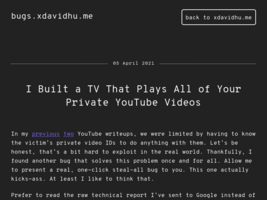https://bugs.xdavidhu.me/google/2021/04/05/i-built-a-tv-that-plays-all-of-your-private-youtube-videos/
238 https://bugs.xdavidhu.me/google/2021/04/05/i-built-a-tv-that-plays-all-of-your-private-youtube-videos/
https://bulletjournal.com/blogs/bulletjournalist/learning-and-note-taking
239 https://bulletjournal.com/blogs/bulletjournalist/learning-and-note-taking
https://buttondown.email/hillelwayne/archive/the-esotech-lit-gap/
240 https://buttondown.email/hillelwayne/archive/the-esotech-lit-gap/
https://buttondown.email/hillelwayne/archive/you-can-automate-more-than-you-think/
241 https://buttondown.email/hillelwayne/archive/you-can-automate-more-than-you-think/
https://bytesizetheories.com/posts/3-kinds-of-tech-debt/
242 https://bytesizetheories.com/posts/3-kinds-of-tech-debt/
https://c2.staticflickr.com/6/5461/17356906540_bf67c15fd3_h.jpg
243 https://c2.staticflickr.com/6/5461/17356906540_bf67c15fd3_h.jpg
https://carolinareapersswing.bandcamp.com/album/unseasonably-hot
244 https://carolinareapersswing.bandcamp.com/album/unseasonably-hot
 https://caseymuratori.com/blog_0015
https://caseymuratori.com/blog_0015
245 https://caseymuratori.com/blog_0015
 https://caseymuratori.com/blog_0016
https://caseymuratori.com/blog_0016
246 https://caseymuratori.com/blog_0016
 https://caseymuratori.com/blog_0024
https://caseymuratori.com/blog_0024
247 https://caseymuratori.com/blog_0024
https://casual-effects.com/markdeep/#getstarted
248 https://casual-effects.com/markdeep/#getstarted
https://caylent.com/culture-resilience-engineering/
249 https://caylent.com/culture-resilience-engineering/
https://certitude.consulting/blog/en/invisible-backdoor/
250 https://certitude.consulting/blog/en/invisible-backdoor/
https://cheapbotsdonequick.com/
251 https://cheapbotsdonequick.com/
https://chriskiehl.com/article/thoughts-after-6-years
252 https://chriskiehl.com/article/thoughts-after-6-years
https://christianheilmann.com/2021/11/01/developer-tools-secrets-that-shouldnt-be-secrets/
253 https://christianheilmann.com/2021/11/01/developer-tools-secrets-that-shouldnt-be-secrets/
 https://christiantietze.de/posts/
https://christiantietze.de/posts/
254 https://christiantietze.de/posts/
https://clawhammerbanjo.net/8steps/
255 https://clawhammerbanjo.net/8steps/
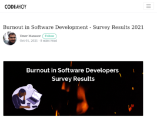https://codeahoy.com/2021/10/01/software-developer-burn-out-survey/
256 https://codeahoy.com/2021/10/01/software-developer-burn-out-survey/
https://codeburst.io/10-javascript-concepts-you-need-to-know-for-interviews-136df65ecce
257 https://codeburst.io/10-javascript-concepts-you-need-to-know-for-interviews-136df65ecce
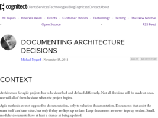https://cognitect.com/blog/2011/11/15/documenting-architecture-decisions
258 https://cognitect.com/blog/2011/11/15/documenting-architecture-decisions
 https://commoncog.com/blog/how-note-taking-can-help-you-become-an-expert/
https://commoncog.com/blog/how-note-taking-can-help-you-become-an-expert/
259 https://commoncog.com/blog/how-note-taking-can-help-you-become-an-expert/
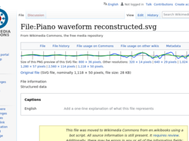https://commons.wikimedia.org/wiki/File:Piano_waveform_reconstructed.svg
260 https://commons.wikimedia.org/wiki/File:Piano_waveform_reconstructed.svg
https://console.substack.com/
261 https://console.substack.com/
https://controlaltbackspace.org/memory/introduction-to-mnemonics/
262 https://controlaltbackspace.org/memory/introduction-to-mnemonics/
https://controlaltbackspace.org/simplicity/digital-minimalism/
263 https://controlaltbackspace.org/simplicity/digital-minimalism/
https://controlaltbackspace.org/simplicity/everythings-broken-everythings-too-complicated/
264 https://controlaltbackspace.org/simplicity/everythings-broken-everythings-too-complicated/
 https://corecursive.com/065-competitive-coding-with-conor-hoekstra/
https://corecursive.com/065-competitive-coding-with-conor-hoekstra/
265 https://corecursive.com/065-competitive-coding-with-conor-hoekstra/
https://corpuscula.blogspot.ru/2016/04/blog-post_23.html#comment-form
266 https://corpuscula.blogspot.ru/2016/04/blog-post_23.html#comment-form
https://corpuscula.blogspot.ru/2017/01/100-jwt-2017.html#comment-form
267 https://corpuscula.blogspot.ru/2017/01/100-jwt-2017.html#comment-form
https://cp4space.hatsya.com/2022/01/14/conway-conjecture-settled/
268 https://cp4space.hatsya.com/2022/01/14/conway-conjecture-settled/
https://cprimozic.net/blog/programming-speed-strategies/
269 https://cprimozic.net/blog/programming-speed-strategies/
 https://css-tricks.com/snippets/css/complete-guide-grid/
https://css-tricks.com/snippets/css/complete-guide-grid/
270 https://css-tricks.com/snippets/css/complete-guide-grid/
 https://cuddly-octo-palm-tree.com/posts/2021-06-13-church-turing/
https://cuddly-octo-palm-tree.com/posts/2021-06-13-church-turing/
271 https://cuddly-octo-palm-tree.com/posts/2021-06-13-church-turing/
https://danielcompton.net/2015/06/11/james-mickens-collection
272 https://danielcompton.net/2015/06/11/james-mickens-collection
https://danluu.com/productivity-velocity/
273 https://danluu.com/productivity-velocity/
https://dannorth.net/2021/07/26/we-need-to-talk-about-testing/
274 https://dannorth.net/2021/07/26/we-need-to-talk-about-testing/
 https://dannorth.net/2022/02/10/cupid-for-joyful-coding/
https://dannorth.net/2022/02/10/cupid-for-joyful-coding/
275 https://dannorth.net/2022/02/10/cupid-for-joyful-coding/
https://dansilvestre.com/brain-dump/
276 https://dansilvestre.com/brain-dump/
https://dataedo.com/blog/why-it-is-more-important-to-document-database-than-application-code
277 https://dataedo.com/blog/why-it-is-more-important-to-document-database-than-application-code
https://deadlockempire.github.io/#T1-Interface
278 https://deadlockempire.github.io/#T1-Interface
https://denvaar.github.io/articles/how_to_review_code.html
279 https://denvaar.github.io/articles/how_to_review_code.html
https://designforhackers.com/
280 https://designforhackers.com/
https://devblog.blackberry.com/en/2021/05/learning-to-love-a-rigid-and-inflexible-language
281 https://devblog.blackberry.com/en/2021/05/learning-to-love-a-rigid-and-inflexible-language
https://devblogs.nvidia.com/parallelforall/ai-cat-chaser-jetson-tx1-caffe/
282 https://devblogs.nvidia.com/parallelforall/ai-cat-chaser-jetson-tx1-caffe/
 https://deyvidyfs.medium.com/defensive-programming-or-a-study-on-how-to-become-a-better-software-engineer-9079ffdddfe5
https://deyvidyfs.medium.com/defensive-programming-or-a-study-on-how-to-become-a-better-software-engineer-9079ffdddfe5
283 https://deyvidyfs.medium.com/defensive-programming-or-a-study-on-how-to-become-a-better-software-engineer-9079ffdddfe5
https://dezz.ie/web-history/letting-go-of-the-old-web/
284 https://dezz.ie/web-history/letting-go-of-the-old-web/
https://digitalmars.com/articles/b14.html
285 https://digitalmars.com/articles/b14.html
https://digitalmars.com/articles/b39.html
286 https://digitalmars.com/articles/b39.html
 https://digitalmars.com/articles/b40.html
https://digitalmars.com/articles/b40.html
287 https://digitalmars.com/articles/b40.html
https://dirtywave.com/products/m8-tracker
288 https://dirtywave.com/products/m8-tracker
https://divan.leprosorium.ru/comments/2450516/
289 https://divan.leprosorium.ru/comments/2450516/
 https://dl.acm.org/doi/10.1145/3469128
https://dl.acm.org/doi/10.1145/3469128
290 https://dl.acm.org/doi/10.1145/3469128
https://dlang.org/blog/2021/06/01/driving-with-d/
291 https://dlang.org/blog/2021/06/01/driving-with-d/
https://docs.microsoft.com/en-us/azure/machine-learning/machine-learning-algorithm-choice
292 https://docs.microsoft.com/en-us/azure/machine-learning/machine-learning-algorithm-choice
https://docs.microsoft.com/en-us/windows-hardware/drivers/debugger/enabling-postmortem-debugging
293 https://docs.microsoft.com/en-us/windows-hardware/drivers/debugger/enabling-postmortem-debugging
https://docs.rsshub.app/en/usage.html#use-as-a-npm-package
294 https://docs.rsshub.app/en/usage.html#use-as-a-npm-package
https://docuwiki.net/index.php?title=Main_Page
295 https://docuwiki.net/index.php?title=Main_Page
 https://doriantaylor.com/agile-as-trauma
https://doriantaylor.com/agile-as-trauma
296 https://doriantaylor.com/agile-as-trauma
https://dorinlazar.ro/2021-02-programming-is-hard/
297 https://dorinlazar.ro/2021-02-programming-is-hard/
https://drbanjo.com/best-ways/
298 https://drbanjo.com/best-ways/
https://dreamsongs.com/WorseIsBetter.html
299 https://dreamsongs.com/WorseIsBetter.html
 https://dtf.ru/gamedev/228891-sketchi-luchshiy-sposob-nauchitsya-risovat-chto-ugodno
https://dtf.ru/gamedev/228891-sketchi-luchshiy-sposob-nauchitsya-risovat-chto-ugodno
300 https://dtf.ru/gamedev/228891-sketchi-luchshiy-sposob-nauchitsya-risovat-chto-ugodno
 https://duckduckgo.com/?t=ffab&q=%D0%BA%D0%BE%D0%B3%D0%B4%D0%B0+%D1%85%D0%BE%D1%87%D0%B5%D1%82%D1%81%D1%8F+%D0%B2%D1%81%D1%91+%D0%B2%D1%8B%D0%B1%D1%80%D0%BE%D1%81%D0%B8%D1%82%D1%8C&ia=web
https://duckduckgo.com/?t=ffab&q=%D0%BA%D0%BE%D0%B3%D0%B4%D0%B0+%D1%85%D0%BE%D1%87%D0%B5%D1%82%D1%81%D1%8F+%D0%B2%D1%81%D1%91+%D0%B2%D1%8B%D0%B1%D1%80%D0%BE%D1%81%D0%B8%D1%82%D1%8C&ia=web
301 https://duckduckgo.com/?t=ffab&q=%D0%BA%D0%BE%D0%B3%D0%B4%D0%B0+%D1%85%D0%BE%D1%87%D0%B5%D1%82%D1%81%D1%8F+%D0%B2%D1%81%D1%91+%D0%B2%D1%8B%D0%B1%D1%80%D0%BE%D1%81%D0%B8%D1%82%D1%8C&ia=web
 https://duckduckgo.com/?t=ffcm&q=%D0%94%D1%8E%D1%80%D1%80%D0%B5%D0%BD%D0%BC%D0%B0%D1%82%D1%82&ia=web
https://duckduckgo.com/?t=ffcm&q=%D0%94%D1%8E%D1%80%D1%80%D0%B5%D0%BD%D0%BC%D0%B0%D1%82%D1%82&ia=web
302 https://duckduckgo.com/?t=ffcm&q=%D0%94%D1%8E%D1%80%D1%80%D0%B5%D0%BD%D0%BC%D0%B0%D1%82%D1%82&ia=web
 https://duckduckgo.com/?t=ffcm&q=Dinosauruksii+-+Ellinoora&ia=web
https://duckduckgo.com/?t=ffcm&q=Dinosauruksii+-+Ellinoora&ia=web
303 https://duckduckgo.com/?t=ffcm&q=Dinosauruksii+-+Ellinoora&ia=web
 https://duckduckgo.com/?t=ffcm&q=Ikuinen+Vappu+-+Jvg&ia=web
https://duckduckgo.com/?t=ffcm&q=Ikuinen+Vappu+-+Jvg&ia=web
304 https://duckduckgo.com/?t=ffcm&q=Ikuinen+Vappu+-+Jvg&ia=web
 https://duckduckgo.com/?t=ffcm&q=Roy+Orbison+-+Stig&ia=web
https://duckduckgo.com/?t=ffcm&q=Roy+Orbison+-+Stig&ia=web
305 https://duckduckgo.com/?t=ffcm&q=Roy+Orbison+-+Stig&ia=web
 https://duckduckgo.com/?t=ffcm&q=Trick+Me+-+Kelis&ia=web
https://duckduckgo.com/?t=ffcm&q=Trick+Me+-+Kelis&ia=web
306 https://duckduckgo.com/?t=ffcm&q=Trick+Me+-+Kelis&ia=web
https://dzone.com/articles/lessons-learned-from-programming-at-google-w-hyrum
307 https://dzone.com/articles/lessons-learned-from-programming-at-google-w-hyrum
https://dzone.com/articles/observability-its-not-what-you-think
308 https://dzone.com/articles/observability-its-not-what-you-think
https://earthly.dev/blog/awk-examples/
309 https://earthly.dev/blog/awk-examples/
 https://earthly.dev/blog/jq-select/
https://earthly.dev/blog/jq-select/
310 https://earthly.dev/blog/jq-select/
https://ediefreedman.blogspot.com/2011/06/fall-in-love-with-your-life.html
311 https://ediefreedman.blogspot.com/2011/06/fall-in-love-with-your-life.html
https://emreed.net/
312 https://emreed.net/
https://emreed.net/LowTech_Directory.html
313 https://emreed.net/LowTech_Directory.html
https://en.wikipedia.org/wiki/AI_winter
314 https://en.wikipedia.org/wiki/AI_winter
 https://en.wikipedia.org/wiki/Battle_of_the_Teutoburg_Forest
https://en.wikipedia.org/wiki/Battle_of_the_Teutoburg_Forest
315 https://en.wikipedia.org/wiki/Battle_of_the_Teutoburg_Forest
https://en.wikipedia.org/wiki/Bottom%27s_Dream
316 https://en.wikipedia.org/wiki/Bottom%27s_Dream
https://en.wikipedia.org/wiki/Common_Logic
317 https://en.wikipedia.org/wiki/Common_Logic
https://en.wikipedia.org/wiki/Essentials_of_Programming_Languages
318 https://en.wikipedia.org/wiki/Essentials_of_Programming_Languages
https://en.wikipedia.org/wiki/Graph_drawing
319 https://en.wikipedia.org/wiki/Graph_drawing
https://en.wikipedia.org/wiki/Graphviz
320 https://en.wikipedia.org/wiki/Graphviz
https://en.wikipedia.org/wiki/I%27m_a_Cyborg,_But_That%27s_OK
321 https://en.wikipedia.org/wiki/I%27m_a_Cyborg,_But_That%27s_OK
https://en.wikipedia.org/wiki/J._B._Priestley
322 https://en.wikipedia.org/wiki/J._B._Priestley
https://en.wikipedia.org/wiki/Jug_Band_Hokum
323 https://en.wikipedia.org/wiki/Jug_Band_Hokum
https://en.wikipedia.org/wiki/Knowledge_management
324 https://en.wikipedia.org/wiki/Knowledge_management
https://en.wikipedia.org/wiki/Method_of_loci
325 https://en.wikipedia.org/wiki/Method_of_loci
https://en.wikipedia.org/wiki/Monte_Carlo_tree_search
326 https://en.wikipedia.org/wiki/Monte_Carlo_tree_search
https://en.wikipedia.org/wiki/Multiple-criteria_decision_analysis
327 https://en.wikipedia.org/wiki/Multiple-criteria_decision_analysis
https://en.wikipedia.org/wiki/Robustness_principle
328 https://en.wikipedia.org/wiki/Robustness_principle
https://en.wikipedia.org/wiki/Self-documenting_code
329 https://en.wikipedia.org/wiki/Self-documenting_code
https://en.wikipedia.org/wiki/The_Boyne_Water
330 https://en.wikipedia.org/wiki/The_Boyne_Water
https://en.wikipedia.org/wiki/The_City_Waites
331 https://en.wikipedia.org/wiki/The_City_Waites
 https://en.wikipedia.org/wiki/The_Hanging_Tree_(The_Hunger_Games_song)
https://en.wikipedia.org/wiki/The_Hanging_Tree_(The_Hunger_Games_song)
332 https://en.wikipedia.org/wiki/The_Hanging_Tree_(The_Hunger_Games_song)
https://estebanhufstedler.com/about-me/
333 https://estebanhufstedler.com/about-me/
https://eugeneyan.com/writing/note-taking-zettelkasten/
334 https://eugeneyan.com/writing/note-taking-zettelkasten/
https://eugeneyan.com/writing/why-read-papers/
335 https://eugeneyan.com/writing/why-read-papers/
https://eugeneyan.com/writing/why-you-need-to-follow-up-after-your-data-science-project/
336 https://eugeneyan.com/writing/why-you-need-to-follow-up-after-your-data-science-project/
 https://eugeneyan.com/writing/writing-docs-why-what-how/
https://eugeneyan.com/writing/writing-docs-why-what-how/
337 https://eugeneyan.com/writing/writing-docs-why-what-how/
https://evan-gcrm.livejournal.com/1245890.html
338 https://evan-gcrm.livejournal.com/1245890.html
https://evchapman.com/atomic-essays/i-quit-productivity-now-i-get-far-more-done-every-day
339 https://evchapman.com/atomic-essays/i-quit-productivity-now-i-get-far-more-done-every-day
https://everest-pipkin.com/#drawings/eye.html
340 https://everest-pipkin.com/#drawings/eye.html
https://feldy.ru/read/
341 https://feldy.ru/read/
https://fortelabs.co/blog/series/ps/
342 https://fortelabs.co/blog/series/ps/
 https://forum.zettelkasten.de/discussion/106/paper-based-zettelkasten-processes-for-problem-solving
https://forum.zettelkasten.de/discussion/106/paper-based-zettelkasten-processes-for-problem-solving
343 https://forum.zettelkasten.de/discussion/106/paper-based-zettelkasten-processes-for-problem-solving
https://forum.zettelkasten.de/discussion/1140/putting-in-time-to-create-a-zettelkasten-though-what-is-your-output
344 https://forum.zettelkasten.de/discussion/1140/putting-in-time-to-create-a-zettelkasten-though-what-is-your-output
 https://forum.zettelkasten.de/discussion/1946/using-a-zettelkasten-in-mathematics-research
https://forum.zettelkasten.de/discussion/1946/using-a-zettelkasten-in-mathematics-research
345 https://forum.zettelkasten.de/discussion/1946/using-a-zettelkasten-in-mathematics-research
 https://forum.zettelkasten.de/discussion/comment/12802/#Comment_12802
https://forum.zettelkasten.de/discussion/comment/12802/#Comment_12802
346 https://forum.zettelkasten.de/discussion/comment/12802/#Comment_12802
https://fperrad.frama.io/#articles
347 https://fperrad.frama.io/#articles
https://freeology.com/articles/7-note-taking-tips/
348 https://freeology.com/articles/7-note-taking-tips/
https://frinklang.org/#JavaWebStart
349 https://frinklang.org/#JavaWebStart
https://frontendmasters.gitbooks.io/front-end-handbook-2017/content/
350 https://frontendmasters.gitbooks.io/front-end-handbook-2017/content/
https://funloop.org/post/2015-02-27-removing-modulo-bias-redux.html
351 https://funloop.org/post/2015-02-27-removing-modulo-bias-redux.html
https://funloop.org/post/2015-06-25-urxvt-plugins.html
352 https://funloop.org/post/2015-06-25-urxvt-plugins.html
https://gamestracker.org/
353 https://gamestracker.org/
https://gcollazo.com/logging-is-important/
354 https://gcollazo.com/logging-is-important/
https://generated.space/
355 https://generated.space/
 https://generateme.wordpress.com/
https://generateme.wordpress.com/
356 https://generateme.wordpress.com/
 https://generativeartistry.com/tutorials/piet-mondrian/
https://generativeartistry.com/tutorials/piet-mondrian/
357 https://generativeartistry.com/tutorials/piet-mondrian/
https://gist.github.com/edmundsmith/1876aa1c014c4b8ce4ab4cfabcb1c497
358 https://gist.github.com/edmundsmith/1876aa1c014c4b8ce4ab4cfabcb1c497
https://github.com/Jaxo/yaxx
359 https://github.com/Jaxo/yaxx
 https://github.com/Sairyss/domain-driven-hexagon#general-recommendations-on-architectures-best-practices-design-patterns-and-principles
https://github.com/Sairyss/domain-driven-hexagon#general-recommendations-on-architectures-best-practices-design-patterns-and-principles
360 https://github.com/Sairyss/domain-driven-hexagon#general-recommendations-on-architectures-best-practices-design-patterns-and-principles
https://github.com/adnzzzzZ/blog
361 https://github.com/adnzzzzZ/blog
https://github.com/adnzzzzZ/blog/issues/37
362 https://github.com/adnzzzzZ/blog/issues/37
https://github.com/adrianscheff/useful-sed
363 https://github.com/adrianscheff/useful-sed
https://github.com/antonmedv/fx
364 https://github.com/antonmedv/fx
https://github.com/arielf/weight-loss
365 https://github.com/arielf/weight-loss
https://github.com/chjj/compton
366 https://github.com/chjj/compton
https://github.com/creative-coding-with-processing
367 https://github.com/creative-coding-with-processing
https://github.com/dbartolini/data-oriented-design
368 https://github.com/dbartolini/data-oriented-design
 https://github.com/donnemartin/system-design-primer
https://github.com/donnemartin/system-design-primer
369 https://github.com/donnemartin/system-design-primer
 https://github.com/erdavids/Generative-Art
https://github.com/erdavids/Generative-Art
370 https://github.com/erdavids/Generative-Art
https://github.com/ibraheemdev/modern-unix
371 https://github.com/ibraheemdev/modern-unix
https://github.com/ibraheemdev/modern-unix/blob/master/README.md
372 https://github.com/ibraheemdev/modern-unix/blob/master/README.md
https://github.com/jemmybutton/fiziko
373 https://github.com/jemmybutton/fiziko
https://github.com/jhspetersson/fselect
374 https://github.com/jhspetersson/fselect
 https://github.com/kilimchoi/engineering-blogs
https://github.com/kilimchoi/engineering-blogs
375 https://github.com/kilimchoi/engineering-blogs
https://github.com/koalaman/shellcheck
376 https://github.com/koalaman/shellcheck
https://github.com/kristopolous/BOOTSTRA.386
377 https://github.com/kristopolous/BOOTSTRA.386
https://github.com/lubyk/lubyk
378 https://github.com/lubyk/lubyk
https://github.com/lubyk/lubyk/commits?author=lilybucher
379 https://github.com/lubyk/lubyk/commits?author=lilybucher
https://github.com/lyokha/vim-xkbswitch
380 https://github.com/lyokha/vim-xkbswitch
https://github.com/mermaid-js/mermaid
381 https://github.com/mermaid-js/mermaid
https://github.com/mxgmn/SynTex
382 https://github.com/mxgmn/SynTex
https://github.com/norvig/paip-lisp
383 https://github.com/norvig/paip-lisp
 https://github.com/novoid/filetags#tagtrees
https://github.com/novoid/filetags#tagtrees
384 https://github.com/novoid/filetags#tagtrees
 https://github.com/novoid/memacs
https://github.com/novoid/memacs
385 https://github.com/novoid/memacs
https://github.com/robert/wavefunction-collapse
386 https://github.com/robert/wavefunction-collapse
https://github.com/sachaos/viddy
387 https://github.com/sachaos/viddy
https://github.com/stars/Grauenwolf/lists/cleaning-clean-architecture
388 https://github.com/stars/Grauenwolf/lists/cleaning-clean-architecture
https://github.com/tum-esi/common-coding-conventions
389 https://github.com/tum-esi/common-coding-conventions
https://github.com/vinibiavatti1/TuiCss
390 https://github.com/vinibiavatti1/TuiCss
https://github.com/willianjusten/awesome-audio-visualization
391 https://github.com/willianjusten/awesome-audio-visualization
https://github.com/you-dont-need/You-Dont-Need
392 https://github.com/you-dont-need/You-Dont-Need
https://github.com/zeta0134/LuaGB
393 https://github.com/zeta0134/LuaGB
https://gitlab.com/slackermedia/bashcrawl/-/tree/master/entrance
394 https://gitlab.com/slackermedia/bashcrawl/-/tree/master/entrance
https://glenncrytzercompilations.bandcamp.com/album/that-new-old-sound
395 https://glenncrytzercompilations.bandcamp.com/album/that-new-old-sound
https://gobeforegreen.com/scanner-daybook/
396 https://gobeforegreen.com/scanner-daybook/
https://grubgrain.dev/
397 https://grubgrain.dev/
https://habr.com/en/post/421563/#comment_19050001
398 https://habr.com/en/post/421563/#comment_19050001
https://habr.com/ru/company/ruvds/blog/517450/
399 https://habr.com/ru/company/ruvds/blog/517450/
https://habr.com/ru/company/shkolnaya_karta/blog/377109/
400 https://habr.com/ru/company/shkolnaya_karta/blog/377109/
https://habr.com/ru/post/461365/*
401 https://habr.com/ru/post/461365/*
https://habr.com/ru/post/485578/
402 https://habr.com/ru/post/485578/
https://habr.com/ru/post/527860/
403 https://habr.com/ru/post/527860/
https://habrahabr.ru/post/192320/
404 https://habrahabr.ru/post/192320/
 https://hackaday.com/2019/03/05/good-code-documents-itself-and-other-hilarious-jokes-you-shouldnt-tell-yourself/
https://hackaday.com/2019/03/05/good-code-documents-itself-and-other-hilarious-jokes-you-shouldnt-tell-yourself/
405 https://hackaday.com/2019/03/05/good-code-documents-itself-and-other-hilarious-jokes-you-shouldnt-tell-yourself/
https://hackernoon.com/computed-state-the-model-view-problem-9cbe8cf8486f#.mbjol0t46
406 https://hackernoon.com/computed-state-the-model-view-problem-9cbe8cf8486f#.mbjol0t46
https://hacks.mozilla.org/2021/08/mdns-autocomplete-search/
407 https://hacks.mozilla.org/2021/08/mdns-autocomplete-search/
 https://hakibenita.com/sql-anomaly-detection
https://hakibenita.com/sql-anomaly-detection
408 https://hakibenita.com/sql-anomaly-detection
https://hbr.org/2013/04/what-job-candidates-really-wan
409 https://hbr.org/2013/04/what-job-candidates-really-wan
https://healeycodes.com/boids-flocking-simulation/
410 https://healeycodes.com/boids-flocking-simulation/
https://healeycodes.com/book-review-the-developers-guide-to-content-creation/
411 https://healeycodes.com/book-review-the-developers-guide-to-content-creation/
 https://healeycodes.com/generating-text-with-markov-chains/
https://healeycodes.com/generating-text-with-markov-chains/
412 https://healeycodes.com/generating-text-with-markov-chains/
https://healeycodes.com/github/beginners/tutorial/productivity/2019/04/14/writing-an-awesome-github-readme.html
413 https://healeycodes.com/github/beginners/tutorial/productivity/2019/04/14/writing-an-awesome-github-readme.html
https://healeycodes.com/hacking-together-an-e-ink-dashboard/
414 https://healeycodes.com/hacking-together-an-e-ink-dashboard/
https://healeycodes.com/learning-the-ink-programming-language/
415 https://healeycodes.com/learning-the-ink-programming-language/
https://helix-editor.com/
416 https://helix-editor.com/
https://henrikwarne.com/2014/06/30/what-makes-a-good-programmer/
417 https://henrikwarne.com/2014/06/30/what-makes-a-good-programmer/
https://henrikwarne.com/2016/06/16/18-lessons-from-13-years-of-tricky-bugs/
418 https://henrikwarne.com/2016/06/16/18-lessons-from-13-years-of-tricky-bugs/
 https://hinty.io/devforth/sql-query-optimization-understanding-key-principle/
https://hinty.io/devforth/sql-query-optimization-understanding-key-principle/
419 https://hinty.io/devforth/sql-query-optimization-understanding-key-principle/
https://hirrolot.github.io/posts/expression-oriented-programming-in-c-the-fmt-macro.html
420 https://hirrolot.github.io/posts/expression-oriented-programming-in-c-the-fmt-macro.html
https://hirrolot.github.io/posts/extend-your-language-dont-alter-it.html
421 https://hirrolot.github.io/posts/extend-your-language-dont-alter-it.html
https://history.wikireading.ru/102902
422 https://history.wikireading.ru/102902
https://holub.com/heuristics-for-effective-software-development-a-continuously-evolving-list/
423 https://holub.com/heuristics-for-effective-software-development-a-continuously-evolving-list/
https://hotsugarband.bandcamp.com/album/swing-for-dancers
424 https://hotsugarband.bandcamp.com/album/swing-for-dancers
https://htdp.org/2018-01-06/Book/index.html
425 https://htdp.org/2018-01-06/Book/index.html
https://iism.org/article/is-tasking-developers-with-creating-detailed-estimates-a-waste-of-company-money-42
426 https://iism.org/article/is-tasking-developers-with-creating-detailed-estimates-a-waste-of-company-money-42
https://imgur.com/t/drawing
427 https://imgur.com/t/drawing
https://indiewebify.me/
428 https://indiewebify.me/
 https://interesno.co/business/5b0639c582a2
https://interesno.co/business/5b0639c582a2
429 https://interesno.co/business/5b0639c582a2
 https://interesno.co/myself/31487dc9885a
https://interesno.co/myself/31487dc9885a
430 https://interesno.co/myself/31487dc9885a
https://interesno.co/myself/8e5724b9df49
431 https://interesno.co/myself/8e5724b9df49
https://iquilezles.org/www/articles/fbmsdf/fbmsdf.htm
432 https://iquilezles.org/www/articles/fbmsdf/fbmsdf.htm
 https://ironhead.ru/the-end-of-suffering-ppt
https://ironhead.ru/the-end-of-suffering-ppt
433 https://ironhead.ru/the-end-of-suffering-ppt
https://itnext.io/share-programming-knowledge-not-information-87e89cb35af1
434 https://itnext.io/share-programming-knowledge-not-information-87e89cb35af1
https://itnext.io/the-micro-frontend-chaos-and-how-to-solve-it-960b0a90c58
435 https://itnext.io/the-micro-frontend-chaos-and-how-to-solve-it-960b0a90c58
 https://iwringer.wordpress.com/2015/11/17/anomaly-detection-concepts-and-techniques/
https://iwringer.wordpress.com/2015/11/17/anomaly-detection-concepts-and-techniques/
436 https://iwringer.wordpress.com/2015/11/17/anomaly-detection-concepts-and-techniques/
 https://jacobian.org/2021/jun/2/swag-estimates/
https://jacobian.org/2021/jun/2/swag-estimates/
437 https://jacobian.org/2021/jun/2/swag-estimates/
https://jacobian.org/2021/may/20/estimation/
438 https://jacobian.org/2021/may/20/estimation/
https://jakearchibald.com/2021/function-callback-risks/
439 https://jakearchibald.com/2021/function-callback-risks/
https://jamesclear.com/dont-start-from-scratch
440 https://jamesclear.com/dont-start-from-scratch
 https://jamesclear.com/great-speeches/inventing-on-principle-by-bret-victor
https://jamesclear.com/great-speeches/inventing-on-principle-by-bret-victor
441 https://jamesclear.com/great-speeches/inventing-on-principle-by-bret-victor
https://javascript.plainenglish.io/the-ultimate-guide-to-writing-self-documenting-code-998ea9a38bd3
442 https://javascript.plainenglish.io/the-ultimate-guide-to-writing-self-documenting-code-998ea9a38bd3
https://jeang3nie.codeberg.page/case-for-modern-language-pt1/
443 https://jeang3nie.codeberg.page/case-for-modern-language-pt1/
https://jeffhuang.com/best_paper_awards/
444 https://jeffhuang.com/best_paper_awards/
https://jeffhuang.com/best_paper_awards/
445 https://jeffhuang.com/best_paper_awards/
https://jeffhuang.com/productivity_text_file/
446 https://jeffhuang.com/productivity_text_file/
https://jonathanbayless.com/
447 https://jonathanbayless.com/
https://jonathanbayless.com/2020/03/09/zettelkasten-vimwiki.html
448 https://jonathanbayless.com/2020/03/09/zettelkasten-vimwiki.html
https://jonathanbayless.com/2020/08/07/zettelkasten-foam.html
449 https://jonathanbayless.com/2020/08/07/zettelkasten-foam.html
 https://josephg.com/blog/crdts-go-brrr/
https://josephg.com/blog/crdts-go-brrr/
450 https://josephg.com/blog/crdts-go-brrr/
https://journals.plos.org/ploscompbiol/article?id=10.1371/journal.pcbi.1009481
451 https://journals.plos.org/ploscompbiol/article?id=10.1371/journal.pcbi.1009481
https://jstrieb.github.io/projects/hidden-bookmarks/
452 https://jstrieb.github.io/projects/hidden-bookmarks/
https://jvns.ca/blog/2020/06/14/questions-to-help-you-learn/
453 https://jvns.ca/blog/2020/06/14/questions-to-help-you-learn/
https://jvns.ca/blog/learn-how-things-work/
454 https://jvns.ca/blog/learn-how-things-work/
https://kadavy.net/blog/posts/zettelkasten-method-slip-box-digital-example/
455 https://kadavy.net/blog/posts/zettelkasten-method-slip-box-digital-example/
 https://karl-voit.at/
https://karl-voit.at/
456 https://karl-voit.at/
https://karl-voit.at/2018/08/25/deskop-metaphor/
457 https://karl-voit.at/2018/08/25/deskop-metaphor/
https://karl-voit.at/2021/01/18/tool-choices/
458 https://karl-voit.at/2021/01/18/tool-choices/
https://karl-voit.at/folder-hierarchy/
459 https://karl-voit.at/folder-hierarchy/
https://karl-voit.at/tags/pim/
460 https://karl-voit.at/tags/pim/
https://keepsimple.io/ru/uxcore
461 https://keepsimple.io/ru/uxcore
https://keyholesoftware.com/2021/02/15/four-ways-to-put-developer-experience-first/
462 https://keyholesoftware.com/2021/02/15/four-ways-to-put-developer-experience-first/
https://kislayverma.com/programming/how-to-organize-your-code/
463 https://kislayverma.com/programming/how-to-organize-your-code/
https://knife.media/richard-thaler-behavioural-economics/
464 https://knife.media/richard-thaler-behavioural-economics/
https://kojinka.ru/bags/rjukzaki/mujskie_rukzaki/jhon_rizh/
465 https://kojinka.ru/bags/rjukzaki/mujskie_rukzaki/jhon_rizh/
https://kristoff.it/blog/the-open-source-game/
466 https://kristoff.it/blog/the-open-source-game/
https://kynd.github.io/p5sketches/index.html
467 https://kynd.github.io/p5sketches/index.html
https://labs.spotify.com/2014/02/28/how-to-shuffle-songs/
468 https://labs.spotify.com/2014/02/28/how-to-shuffle-songs/
https://ldjam.com/
469 https://ldjam.com/
https://learnanylanguage.fandom.com/wiki/All_Japanese_All_The_Time
470 https://learnanylanguage.fandom.com/wiki/All_Japanese_All_The_Time
https://learnvimscriptthehardway.stevelosh.com/
471 https://learnvimscriptthehardway.stevelosh.com/
 https://levelup.gitconnected.com/introduction-to-ai-an-a-to-z-tutorial-for-building-a-basic-linear-regression-algorithm-from-ab7faea53a0b
https://levelup.gitconnected.com/introduction-to-ai-an-a-to-z-tutorial-for-building-a-basic-linear-regression-algorithm-from-ab7faea53a0b
472 https://levelup.gitconnected.com/introduction-to-ai-an-a-to-z-tutorial-for-building-a-basic-linear-regression-algorithm-from-ab7faea53a0b
https://lifehacker.ru/zachem-vesti-dnevnik-kazhdyj-den-i-kak-ne-zabrosit-svoi-zapisi/
473 https://lifehacker.ru/zachem-vesti-dnevnik-kazhdyj-den-i-kak-ne-zabrosit-svoi-zapisi/
https://lifehacky.net/how-to-read-less-but-get-more-out-of-it-bf61ca062d5a
474 https://lifehacky.net/how-to-read-less-but-get-more-out-of-it-bf61ca062d5a
https://listed.to/@crabmusket/28621/how-i-learned-oop-a-nightmare
[475 https://listed.to/@crabmusket/28621/how-i-learned-oop-a-nightmare](https://listed.to/@crabmusket/28621/how-i-learned-oop-a-nightmare)
 https://lubyk.github.io/lubyk/
https://lubyk.github.io/lubyk/
476 https://lubyk.github.io/lubyk/
https://lucidogen.io/
477 https://lucidogen.io/
https://lyrics.fi/haloo-helsinki/kuussa-tuulee
478 https://lyrics.fi/haloo-helsinki/kuussa-tuulee
https://macoy.me/blog/programming/InterfaceFriction
479 https://macoy.me/blog/programming/InterfaceFriction
https://madhadron.com/posts/seven_languages.html
480 https://madhadron.com/posts/seven_languages.html
https://maggieappleton.com/garden-history
481 https://maggieappleton.com/garden-history
https://maintainable.fm/episodes/chris-birchall-re-engineering-legacy-software
482 https://maintainable.fm/episodes/chris-birchall-re-engineering-legacy-software
https://markodenic.com/html-tips/
483 https://markodenic.com/html-tips/
https://markodenic.com/use-console-log-like-a-pro/
484 https://markodenic.com/use-console-log-like-a-pro/
https://markshat.livejournal.com/398216.html
485 https://markshat.livejournal.com/398216.html
https://martin.ankerl.com/2009/12/09/how-to-create-random-colors-programmatically/
486 https://martin.ankerl.com/2009/12/09/how-to-create-random-colors-programmatically/
https://martinfowler.com/articles/201701-event-driven.html
487 https://martinfowler.com/articles/201701-event-driven.html
 https://martinfowler.com/articles/patterns-of-distributed-systems/replicated-log.html
https://martinfowler.com/articles/patterns-of-distributed-systems/replicated-log.html
488 https://martinfowler.com/articles/patterns-of-distributed-systems/replicated-log.html
https://mathspp.com/blog/counting-mosaics-with-apl
489 https://mathspp.com/blog/counting-mosaics-with-apl
https://matt-rickard.com/reflections-on-10-000-hours-of-programming/
490 https://matt-rickard.com/reflections-on-10-000-hours-of-programming/
https://matt.might.net/articles/what-cs-majors-should-know/
491 https://matt.might.net/articles/what-cs-majors-should-know/
https://maya.land/
492 https://maya.land/
https://media.handmade-seattle.com/practical-data-oriented-design/
493 https://media.handmade-seattle.com/practical-data-oriented-design/
https://medium.com/@Mybridge/12-free-resources-learn-to-code-while-playing-games-f7333043de11#.7quq98grj
[494 https://medium.com/@Mybridge/12-free-resources-learn-to-code-while-playing-games-f7333043de11#.7quq98grj](https://medium.com/@Mybridge/12-free-resources-learn-to-code-while-playing-games-f7333043de11#.7quq98grj)
 https://medium.com/@ageitgey/machine-learning-is-fun-part-4-modern-face-recognition-with-deep-learning-c3cffc121d78#.igvl1h6pb
https://medium.com/@ageitgey/machine-learning-is-fun-part-4-modern-face-recognition-with-deep-learning-c3cffc121d78#.igvl1h6pb
[495 https://medium.com/@ageitgey/machine-learning-is-fun-part-4-modern-face-recognition-with-deep-learning-c3cffc121d78#.igvl1h6pb](https://medium.com/@ageitgey/machine-learning-is-fun-part-4-modern-face-recognition-with-deep-learning-c3cffc121d78#.igvl1h6pb)
https://medium.com/@alex.wauters/how-to-make-architecture-trade-off-decisions-cb23482e1dfe
[496 https://medium.com/@alex.wauters/how-to-make-architecture-trade-off-decisions-cb23482e1dfe](https://medium.com/@alex.wauters/how-to-make-architecture-trade-off-decisions-cb23482e1dfe)
https://medium.com/@aloukissas/programming-principles-from-id-software-bed83e762210
[497 https://medium.com/@aloukissas/programming-principles-from-id-software-bed83e762210](https://medium.com/@aloukissas/programming-principles-from-id-software-bed83e762210)
https://medium.com/@bogdanandreig/how-i-have-used-machine-learning-to-build-muscles-a8aa12334c34
[498 https://medium.com/@bogdanandreig/how-i-have-used-machine-learning-to-build-muscles-a8aa12334c34](https://medium.com/@bogdanandreig/how-i-have-used-machine-learning-to-build-muscles-a8aa12334c34)
https://medium.com/@borislaurent/stop-chasing-people-be-a-slot-machine-fcbe9e5cfed2
[499 https://medium.com/@borislaurent/stop-chasing-people-be-a-slot-machine-fcbe9e5cfed2](https://medium.com/@borislaurent/stop-chasing-people-be-a-slot-machine-fcbe9e5cfed2)
https://medium.com/@ipestov/collection-of-coders-games-to-improve-your-skills-9ea02906d73#.v9d2qlifc
[500 https://medium.com/@ipestov/collection-of-coders-games-to-improve-your-skills-9ea02906d73#.v9d2qlifc](https://medium.com/@ipestov/collection-of-coders-games-to-improve-your-skills-9ea02906d73#.v9d2qlifc)
https://medium.com/@nickmilo22/in-what-ways-can-we-form-useful-relationships-between-notes-9b9ec46973c6
[501 https://medium.com/@nickmilo22/in-what-ways-can-we-form-useful-relationships-between-notes-9b9ec46973c6](https://medium.com/@nickmilo22/in-what-ways-can-we-form-useful-relationships-between-notes-9b9ec46973c6)
https://medium.com/@rakyll/things-i-wished-more-developers-knew-about-databases-2d0178464f78
[502 https://medium.com/@rakyll/things-i-wished-more-developers-knew-about-databases-2d0178464f78](https://medium.com/@rakyll/things-i-wished-more-developers-knew-about-databases-2d0178464f78)
 https://medium.com/@rdsubhas/10-modern-software-engineering-mistakes-bc67fbef4fc8#.l0srvqk7k
https://medium.com/@rdsubhas/10-modern-software-engineering-mistakes-bc67fbef4fc8#.l0srvqk7k
[503 https://medium.com/@rdsubhas/10-modern-software-engineering-mistakes-bc67fbef4fc8#.l0srvqk7k](https://medium.com/@rdsubhas/10-modern-software-engineering-mistakes-bc67fbef4fc8#.l0srvqk7k)
 https://medium.com/@ryanhoque/water-the-antidote-to-existential-dread-c499fc7f795f
https://medium.com/@ryanhoque/water-the-antidote-to-existential-dread-c499fc7f795f
[504 https://medium.com/@ryanhoque/water-the-antidote-to-existential-dread-c499fc7f795f](https://medium.com/@ryanhoque/water-the-antidote-to-existential-dread-c499fc7f795f)
https://medium.com/@sinahab/the-programmers-guide-to-booking-a-concert-e048a580735f#.aobg9dg01
[505 https://medium.com/@sinahab/the-programmers-guide-to-booking-a-concert-e048a580735f#.aobg9dg01](https://medium.com/@sinahab/the-programmers-guide-to-booking-a-concert-e048a580735f#.aobg9dg01)
https://medium.com/@tedmahsun/retro-word-processing-part-1-32b4feec2e44
[506 https://medium.com/@tedmahsun/retro-word-processing-part-1-32b4feec2e44](https://medium.com/@tedmahsun/retro-word-processing-part-1-32b4feec2e44)
https://medium.com/@tglaiel/how-to-make-your-own-game-engine-and-why-ddf0acbc5f3
[507 https://medium.com/@tglaiel/how-to-make-your-own-game-engine-and-why-ddf0acbc5f3](https://medium.com/@tglaiel/how-to-make-your-own-game-engine-and-why-ddf0acbc5f3)
 https://medium.com/@tomargames/anki-for-music-4e30955aee3c
https://medium.com/@tomargames/anki-for-music-4e30955aee3c
[508 https://medium.com/@tomargames/anki-for-music-4e30955aee3c](https://medium.com/@tomargames/anki-for-music-4e30955aee3c)
https://medium.com/@tomargames/anki-for-music-after-2-years-99a3a6c36aa4
[509 https://medium.com/@tomargames/anki-for-music-after-2-years-99a3a6c36aa4](https://medium.com/@tomargames/anki-for-music-after-2-years-99a3a6c36aa4)
https://medium.com/@tomargames/anki-for-music-one-year-later-bf8654dc9077
[510 https://medium.com/@tomargames/anki-for-music-one-year-later-bf8654dc9077](https://medium.com/@tomargames/anki-for-music-one-year-later-bf8654dc9077)
https://medium.com/@tomargames/things-im-learning-4-b3305f56109d#.vccdfd9ou
[511 https://medium.com/@tomargames/things-im-learning-4-b3305f56109d#.vccdfd9ou](https://medium.com/@tomargames/things-im-learning-4-b3305f56109d#.vccdfd9ou)
https://medium.com/codex/components-to-solve-system-design-interview-questions-752941aa3e56
512 https://medium.com/codex/components-to-solve-system-design-interview-questions-752941aa3e56
https://medium.com/it-dead-inside/self-documenting-code-is-mostly-nonsense-1de5f593810f
513 https://medium.com/it-dead-inside/self-documenting-code-is-mostly-nonsense-1de5f593810f
https://medium.com/javarevisited/a-key-to-clean-code-small-methods-cff120538eba
514 https://medium.com/javarevisited/a-key-to-clean-code-small-methods-cff120538eba
https://medium.com/the-tiny-wisdom/you-dont-need-goals-to-be-happy-328a6fa6a4d0
515 https://medium.com/the-tiny-wisdom/you-dont-need-goals-to-be-happy-328a6fa6a4d0
https://meetjoao.com/how-to-choose-the-right-front-end-technologies-for-your-next-project-56227610f65e#.cmzt3xtwf
516 https://meetjoao.com/how-to-choose-the-right-front-end-technologies-for-your-next-project-56227610f65e#.cmzt3xtwf
https://mht.technology/post/content-aware-resize/
517 https://mht.technology/post/content-aware-resize/
https://michaelfeathers.silvrback.com/10-papers-every-developer-should-read-at-least-twice
518 https://michaelfeathers.silvrback.com/10-papers-every-developer-should-read-at-least-twice
https://mikehadlow.blogspot.com/2012/05/configuration-complexity-clock.html
519 https://mikehadlow.blogspot.com/2012/05/configuration-complexity-clock.html
https://missing.csail.mit.edu/
520 https://missing.csail.mit.edu/
https://mitpress.mit.edu/index.php?q=books/concepts-techniques-and-models-computer-programming
521 https://mitpress.mit.edu/index.php?q=books/concepts-techniques-and-models-computer-programming
 https://mtlynch.io/code-review-love/
https://mtlynch.io/code-review-love/
522 https://mtlynch.io/code-review-love/
https://music.stackexchange.com/questions/178/what-are-the-most-effective-ear-training-methods
523 https://music.stackexchange.com/questions/178/what-are-the-most-effective-ear-training-methods
https://music.stackexchange.com/questions/80587/practice-while-traveling/92332#92332
524 https://music.stackexchange.com/questions/80587/practice-while-traveling/92332#92332
https://mxb.dev/blog/the-return-of-the-90s-web/
525 https://mxb.dev/blog/the-return-of-the-90s-web/
https://mywiki.wooledge.org/BashGuide
526 https://mywiki.wooledge.org/BashGuide
https://naildrivin5.com/blog/2019/07/25/four-better-rules-for-software-design.html
527 https://naildrivin5.com/blog/2019/07/25/four-better-rules-for-software-design.html
https://navendu.me/posts/how-i-ask-questions/
528 https://navendu.me/posts/how-i-ask-questions/
https://neilmadden.wordpress.com/2016/09/13/critical-thinking-for-software-engineers/
529 https://neilmadden.wordpress.com/2016/09/13/critical-thinking-for-software-engineers/
 https://nesslabs.com/remnote-featured-tool
https://nesslabs.com/remnote-featured-tool
530 https://nesslabs.com/remnote-featured-tool
https://nesslabs.com/roam-research
531 https://nesslabs.com/roam-research
https://neverworkintheory.org/
532 https://neverworkintheory.org/
https://new.pythonforengineers.com/blog/3-things-every-programmer-must-learn/
533 https://new.pythonforengineers.com/blog/3-things-every-programmer-must-learn/
https://new.pythonforengineers.com/blog/no-one-cares-about-you/
534 https://new.pythonforengineers.com/blog/no-one-cares-about-you/
https://newatlas.com/computers/digital-hoarding-four-types-collectors-psychology/
535 https://newatlas.com/computers/digital-hoarding-four-types-collectors-psychology/
https://news.harvard.edu/gazette/story/2019/09/study-shows-that-students-learn-more-when-taking-part-in-classrooms-that-employ-active-learning-strategies/
536 https://news.harvard.edu/gazette/story/2019/09/study-shows-that-students-learn-more-when-taking-part-in-classrooms-that-employ-active-learning-strategies/
https://nextapps-de.github.io/winbox/
537 https://nextapps-de.github.io/winbox/
https://nnmclub.to/forum/viewtopic.php?t=1235780
538 https://nnmclub.to/forum/viewtopic.php?t=1235780
https://notes.andymatuschak.org/About_these_notes
539 https://notes.andymatuschak.org/About_these_notes
https://notes.andymatuschak.org/Collecting_material_feels_more_useful_than_it_usually_is
540 https://notes.andymatuschak.org/Collecting_material_feels_more_useful_than_it_usually_is
https://notes.andymatuschak.org/z21cgR9K3UcQ5a7yPsj2RUim3oM2TzdBByZu
541 https://notes.andymatuschak.org/z21cgR9K3UcQ5a7yPsj2RUim3oM2TzdBByZu
https://notes.andymatuschak.org/z4KZ9973AoHhvM9Pj5Qrds48JXNbMEwVJmVRw
542 https://notes.andymatuschak.org/z4KZ9973AoHhvM9Pj5Qrds48JXNbMEwVJmVRw
 https://notes.andymatuschak.org/z4KZ9973AoHhvM9Pj5Qrds48JXNbMEwVJmVRw?stackedNotes=z6bci25mVUBNFdVWSrQNKr6u7AZ1jFzfTVbMF&stackedNotes=z3XP5GRmd9z1D2qCE7pxUvbeSVeQuMiqz9x1C&stackedNotes=z8T6sLNco2benUMgcXUXeJh35eW2obP48DoPp
https://notes.andymatuschak.org/z4KZ9973AoHhvM9Pj5Qrds48JXNbMEwVJmVRw?stackedNotes=z6bci25mVUBNFdVWSrQNKr6u7AZ1jFzfTVbMF&stackedNotes=z3XP5GRmd9z1D2qCE7pxUvbeSVeQuMiqz9x1C&stackedNotes=z8T6sLNco2benUMgcXUXeJh35eW2obP48DoPp
543 https://notes.andymatuschak.org/z4KZ9973AoHhvM9Pj5Qrds48JXNbMEwVJmVRw?stackedNotes=z6bci25mVUBNFdVWSrQNKr6u7AZ1jFzfTVbMF&stackedNotes=z3XP5GRmd9z1D2qCE7pxUvbeSVeQuMiqz9x1C&stackedNotes=z8T6sLNco2benUMgcXUXeJh35eW2obP48DoPp
https://notes.andymatuschak.org/z4SDCZQeRo4xFEQ8H4qrSqd68ucpgE6LU155C
544 https://notes.andymatuschak.org/z4SDCZQeRo4xFEQ8H4qrSqd68ucpgE6LU155C
https://notes.andymatuschak.org/z4SDCZQeRo4xFEQ8H4qrSqd68ucpgE6LU155C?stackedNotes=z3PBVkZ2SvsAgFXkjHsycBeyS6Cw1QXf7kcD8
545 https://notes.andymatuschak.org/z4SDCZQeRo4xFEQ8H4qrSqd68ucpgE6LU155C?stackedNotes=z3PBVkZ2SvsAgFXkjHsycBeyS6Cw1QXf7kcD8
https://noti.st/mxb/lhMFMv/rage-against-the-content-machine#suMUkQM
546 https://noti.st/mxb/lhMFMv/rage-against-the-content-machine#suMUkQM
https://nplusonemag.com/issue-39/reviews/my-octopus-girlfriend/
547 https://nplusonemag.com/issue-39/reviews/my-octopus-girlfriend/
https://offdrive.com/blog/2021/06/data-hoarding-dangers-what-is-data-hoarding-and-how-can-you-avoid-it/
548 https://offdrive.com/blog/2021/06/data-hoarding-dangers-what-is-data-hoarding-and-how-can-you-avoid-it/
https://ohhelloana.blog/blogging-and-me/
549 https://ohhelloana.blog/blogging-and-me/
https://old.reddit.com//r/zen/comments/4ufniz/goalless_practice/
550 https://old.reddit.com//r/zen/comments/4ufniz/goalless_practice/
https://old.reddit.com/r/Zettelkasten/comments/i0zrpc/zettelkasten_and_the_artistic_process/
551 https://old.reddit.com/r/Zettelkasten/comments/i0zrpc/zettelkasten_and_the_artistic_process/
https://old.reddit.com/r/Zettelkasten/comments/o1x7tb/use_zettelkasten_as_a_software_engineer/
552 https://old.reddit.com/r/Zettelkasten/comments/o1x7tb/use_zettelkasten_as_a_software_engineer/
https://old.reddit.com/r/Zettelkasten/comments/o4vts2/book_recommendations_about_the_zettelkasten_system/
553 https://old.reddit.com/r/Zettelkasten/comments/o4vts2/book_recommendations_about_the_zettelkasten_system/
https://old.reddit.com/r/Zettelkasten/comments/o7q03z/so_you_want_to_retain_what_you_read_and_take_your/
554 https://old.reddit.com/r/Zettelkasten/comments/o7q03z/so_you_want_to_retain_what_you_read_and_take_your/
https://old.reddit.com/r/Zettelkasten/comments/oaqhdh/ended_up_in_a_bit_of_a_mess_during_integration/
555 https://old.reddit.com/r/Zettelkasten/comments/oaqhdh/ended_up_in_a_bit_of_a_mess_during_integration/
https://old.reddit.com/r/Zettelkasten/comments/ob6htk/tip_using_your_own_words/
556 https://old.reddit.com/r/Zettelkasten/comments/ob6htk/tip_using_your_own_words/
https://old.reddit.com/r/Zettelkasten/comments/prr93s/would_this_help/
557 https://old.reddit.com/r/Zettelkasten/comments/prr93s/would_this_help/
https://old.reddit.com/r/Zettelkasten/comments/q6frj7/terminology_vs_concept_vs_workflow_in/
558 https://old.reddit.com/r/Zettelkasten/comments/q6frj7/terminology_vs_concept_vs_workflow_in/
https://old.reddit.com/r/Zettelkasten/comments/qdknqo/does_zettelkasten_work_for_technical_people_like/
559 https://old.reddit.com/r/Zettelkasten/comments/qdknqo/does_zettelkasten_work_for_technical_people_like/
https://old.reddit.com/r/Zettelkasten/comments/qe7pb3/advice_on_processing_your_own_original_notes/
560 https://old.reddit.com/r/Zettelkasten/comments/qe7pb3/advice_on_processing_your_own_original_notes/
https://old.reddit.com/r/Zettelkasten/comments/qe8e7g/how_to_create_an_index_in_the_zk/
561 https://old.reddit.com/r/Zettelkasten/comments/qe8e7g/how_to_create_an_index_in_the_zk/
https://old.reddit.com/r/Zettelkasten/comments/qexb87/who_here_lets_their_zettelkasten_determine_what/
562 https://old.reddit.com/r/Zettelkasten/comments/qexb87/who_here_lets_their_zettelkasten_determine_what/
https://old.reddit.com/r/Zettelkasten/comments/qi3ak0/how_do_you_convert_notes_that_you_take_during_a/
563 https://old.reddit.com/r/Zettelkasten/comments/qi3ak0/how_do_you_convert_notes_that_you_take_during_a/
https://old.reddit.com/r/Zettelkasten/comments/qi6cfc/zettelkasten_and_personal_wiki_for_personal_notes/
564 https://old.reddit.com/r/Zettelkasten/comments/qi6cfc/zettelkasten_and_personal_wiki_for_personal_notes/
https://old.reddit.com/r/Zettelkasten/comments/rcsquk/workflow_help_how_do_you_include_articles_in_your/
565 https://old.reddit.com/r/Zettelkasten/comments/rcsquk/workflow_help_how_do_you_include_articles_in_your/
https://old.reddit.com/r/Zettelkasten/comments/rkfofd/does_zettelkasten_lead_to_superficial_reading/
566 https://old.reddit.com/r/Zettelkasten/comments/rkfofd/does_zettelkasten_lead_to_superficial_reading/
https://old.reddit.com/r/Zettelkasten/comments/s2mv0n/the_best_book_on_notetaking/
567 https://old.reddit.com/r/Zettelkasten/comments/s2mv0n/the_best_book_on_notetaking/
https://old.reddit.com/r/banjo/comments/eo7fq7/increase_your_musical_reaction_time_spontaneous/
568 https://old.reddit.com/r/banjo/comments/eo7fq7/increase_your_musical_reaction_time_spontaneous/
https://old.reddit.com/r/dosgaming/comments/mlamqp/heretic_a_game_i_love_even_more_than_doom/
569 https://old.reddit.com/r/dosgaming/comments/mlamqp/heretic_a_game_i_love_even_more_than_doom/
https://old.reddit.com/r/dosgaming/comments/ngvmbi/your_favourite_dos_games/
570 https://old.reddit.com/r/dosgaming/comments/ngvmbi/your_favourite_dos_games/
https://old.reddit.com/r/mandolin/comments/eggg1g/how_do_you_practice_trying_to_figure_out_what_to/
571 https://old.reddit.com/r/mandolin/comments/eggg1g/how_do_you_practice_trying_to_figure_out_what_to/
https://old.reddit.com/r/programming/comments/k8lg4r/code_diary_how_and_why_to_keep_one/
572 https://old.reddit.com/r/programming/comments/k8lg4r/code_diary_how_and_why_to_keep_one/
https://old.reddit.com/r/programming/comments/ljmmo7/solid_principles_around_you_2017/
573 https://old.reddit.com/r/programming/comments/ljmmo7/solid_principles_around_you_2017/
https://old.reddit.com/r/programming/comments/mbb5zx/the_ultimate_guide_to_writing_selfdocumenting_code/
574 https://old.reddit.com/r/programming/comments/mbb5zx/the_ultimate_guide_to_writing_selfdocumenting_code/
https://old.reddit.com/r/programming/comments/mcbhgj/the_dispassionate_developer/
575 https://old.reddit.com/r/programming/comments/mcbhgj/the_dispassionate_developer/
https://old.reddit.com/r/programming/comments/mci23n/get_better_at_programming_by_learning_how_things/
576 https://old.reddit.com/r/programming/comments/mci23n/get_better_at_programming_by_learning_how_things/
https://old.reddit.com/r/programming/comments/mcx610/sebastian_lague_coding_adventure_ant_and_slime/
577 https://old.reddit.com/r/programming/comments/mcx610/sebastian_lague_coding_adventure_ant_and_slime/
https://old.reddit.com/r/programming/comments/me9u0b/employees_are_happier_when_led_by_people_with/
578 https://old.reddit.com/r/programming/comments/me9u0b/employees_are_happier_when_led_by_people_with/
https://old.reddit.com/r/programming/comments/mgmmzu/developer_tools_can_be_magic_instead_they_collect/
579 https://old.reddit.com/r/programming/comments/mgmmzu/developer_tools_can_be_magic_instead_they_collect/
https://old.reddit.com/r/programming/comments/mgpu6c/font_size_is_useless_lets_fix_it/
580 https://old.reddit.com/r/programming/comments/mgpu6c/font_size_is_useless_lets_fix_it/
https://old.reddit.com/r/programming/comments/mjokvy/the_beauty_of_programming/
581 https://old.reddit.com/r/programming/comments/mjokvy/the_beauty_of_programming/
https://old.reddit.com/r/programming/comments/mlcyoi/programming_is_hard/
582 https://old.reddit.com/r/programming/comments/mlcyoi/programming_is_hard/
https://old.reddit.com/r/programming/comments/mm12pt/the_project_that_made_me_burnout/
583 https://old.reddit.com/r/programming/comments/mm12pt/the_project_that_made_me_burnout/
https://old.reddit.com/r/programming/comments/mm2sum/what_have_we_lost/
584 https://old.reddit.com/r/programming/comments/mm2sum/what_have_we_lost/
https://old.reddit.com/r/programming/comments/motdxs/use_consolelog_like_a_pro/
585 https://old.reddit.com/r/programming/comments/motdxs/use_consolelog_like_a_pro/
https://old.reddit.com/r/programming/comments/mpzpqj/a_vim_guide_for_adept_users/
586 https://old.reddit.com/r/programming/comments/mpzpqj/a_vim_guide_for_adept_users/
https://old.reddit.com/r/programming/comments/mpzr9h/one_letter_programming_languages/
587 https://old.reddit.com/r/programming/comments/mpzr9h/one_letter_programming_languages/
https://old.reddit.com/r/programming/comments/mq8daz/why_some_developers_are_avoiding_app_store/
588 https://old.reddit.com/r/programming/comments/mq8daz/why_some_developers_are_avoiding_app_store/
https://old.reddit.com/r/programming/comments/mt9lmv/i_played_rick_astley_never_give_you_up_in_console/
589 https://old.reddit.com/r/programming/comments/mt9lmv/i_played_rick_astley_never_give_you_up_in_console/
 https://old.reddit.com/r/programming/comments/nm9ehx/sql_query_optimization_understanding_key_principle/
https://old.reddit.com/r/programming/comments/nm9ehx/sql_query_optimization_understanding_key_principle/
590 https://old.reddit.com/r/programming/comments/nm9ehx/sql_query_optimization_understanding_key_principle/
https://old.reddit.com/r/programming/comments/nougk1/what_every_programmer_should_know_about_memory/
591 https://old.reddit.com/r/programming/comments/nougk1/what_every_programmer_should_know_about_memory/
https://old.reddit.com/r/programming/comments/npv163/should_perl_die_gracefully/
592 https://old.reddit.com/r/programming/comments/npv163/should_perl_die_gracefully/
https://old.reddit.com/r/programming/comments/nq7l8v/logging_is_important/
593 https://old.reddit.com/r/programming/comments/nq7l8v/logging_is_important/
https://old.reddit.com/r/programming/comments/nsu53n/organize_code_by_concepts_not_layers/
594 https://old.reddit.com/r/programming/comments/nsu53n/organize_code_by_concepts_not_layers/
https://old.reddit.com/r/programming/comments/nt9jmt/computer_chips_are_so_advanced_they_are_more/
595 https://old.reddit.com/r/programming/comments/nt9jmt/computer_chips_are_so_advanced_they_are_more/
https://old.reddit.com/r/programming/comments/nucdqn/check_for_standards_before_creating_a_new_one/
596 https://old.reddit.com/r/programming/comments/nucdqn/check_for_standards_before_creating_a_new_one/
https://old.reddit.com/r/programming/comments/nucxjr/adventures_in_contacting_the_russian_fsb/
597 https://old.reddit.com/r/programming/comments/nucxjr/adventures_in_contacting_the_russian_fsb/
https://old.reddit.com/r/programming/comments/nulyx0/how_replit_used_legal_threats_to_kill_my/
598 https://old.reddit.com/r/programming/comments/nulyx0/how_replit_used_legal_threats_to_kill_my/
https://old.reddit.com/r/programming/comments/o3cap6/state_of_the_windows_how_many_layers_of_ui/
599 https://old.reddit.com/r/programming/comments/o3cap6/state_of_the_windows_how_many_layers_of_ui/
https://old.reddit.com/r/programming/comments/o4fs5o/software_estimation_is_hard_do_it_anyway/
600 https://old.reddit.com/r/programming/comments/o4fs5o/software_estimation_is_hard_do_it_anyway/
https://old.reddit.com/r/programming/comments/oevuja/write_code_that_is_easy_to_delete_not_easy_to/
601 https://old.reddit.com/r/programming/comments/oevuja/write_code_that_is_easy_to_delete_not_easy_to/
https://old.reddit.com/r/programming/comments/oioh4q/best_of_bashrc/
602 https://old.reddit.com/r/programming/comments/oioh4q/best_of_bashrc/
https://old.reddit.com/r/programming/comments/ojhd0n/83_of_developers_suffer_from_burnout_haystack/
603 https://old.reddit.com/r/programming/comments/ojhd0n/83_of_developers_suffer_from_burnout_haystack/
https://old.reddit.com/r/programming/comments/okudz9/dont_solve_problems_eliminate_them_how/
604 https://old.reddit.com/r/programming/comments/okudz9/dont_solve_problems_eliminate_them_how/
https://old.reddit.com/r/programming/comments/onz3n1/thinking_about_glue_code/
605 https://old.reddit.com/r/programming/comments/onz3n1/thinking_about_glue_code/
https://old.reddit.com/r/programming/comments/oow95t/my_code_is_selfdocumenting/
606 https://old.reddit.com/r/programming/comments/oow95t/my_code_is_selfdocumenting/
https://old.reddit.com/r/programming/comments/ovx5zc/softwareheavy_personal_blog_list/
607 https://old.reddit.com/r/programming/comments/ovx5zc/softwareheavy_personal_blog_list/
https://old.reddit.com/r/programming/comments/ow3dkm/overengineering_the_root_of_all_evil/
608 https://old.reddit.com/r/programming/comments/ow3dkm/overengineering_the_root_of_all_evil/
https://old.reddit.com/r/programming/comments/ow81tl/chronofold_a_data_structure_for_versioned_text/
609 https://old.reddit.com/r/programming/comments/ow81tl/chronofold_a_data_structure_for_versioned_text/
https://old.reddit.com/r/programming/comments/pdjnfr/software_development_topics_ive_changed_my_mind/
610 https://old.reddit.com/r/programming/comments/pdjnfr/software_development_topics_ive_changed_my_mind/
https://old.reddit.com/r/programming/comments/pdr5ch/how_to_review_code_well/
611 https://old.reddit.com/r/programming/comments/pdr5ch/how_to_review_code_well/
 https://old.reddit.com/r/programming/comments/pdtiq2/breaking_the_software_licensing_of_early2000s/
https://old.reddit.com/r/programming/comments/pdtiq2/breaking_the_software_licensing_of_early2000s/
612 https://old.reddit.com/r/programming/comments/pdtiq2/breaking_the_software_licensing_of_early2000s/
https://old.reddit.com/r/programming/comments/q0p795/burnout_in_software_development_and_developer/
613 https://old.reddit.com/r/programming/comments/q0p795/burnout_in_software_development_and_developer/
https://old.reddit.com/r/programming/comments/q3w0r9/20_things_ive_learned_in_my_20_years_as_a/
614 https://old.reddit.com/r/programming/comments/q3w0r9/20_things_ive_learned_in_my_20_years_as_a/
https://old.reddit.com/r/programming/comments/q9j0ux/how_to_criticize_code/
615 https://old.reddit.com/r/programming/comments/q9j0ux/how_to_criticize_code/
https://old.reddit.com/r/programming/comments/qfm5kh/25_lessons_from_25_years_of_coding/
616 https://old.reddit.com/r/programming/comments/qfm5kh/25_lessons_from_25_years_of_coding/
https://old.reddit.com/r/programming/comments/qkcord/complexity_is_killing_software_developers/
617 https://old.reddit.com/r/programming/comments/qkcord/complexity_is_killing_software_developers/
https://old.reddit.com/r/programming/comments/qpe27c/please_ask_stupid_questions_as_a_new_software/
618 https://old.reddit.com/r/programming/comments/qpe27c/please_ask_stupid_questions_as_a_new_software/
https://old.reddit.com/r/programming/comments/qpjifl/a_terrible_schema_from_a_clueless_programmer/
619 https://old.reddit.com/r/programming/comments/qpjifl/a_terrible_schema_from_a_clueless_programmer/
https://old.reddit.com/r/programming/comments/qpkx8n/this_project_will_only_take_2_hours/
620 https://old.reddit.com/r/programming/comments/qpkx8n/this_project_will_only_take_2_hours/
https://old.reddit.com/r/programming/comments/qpz8jz/you_should_use_forums_rather_than_slackdiscord_to/
621 https://old.reddit.com/r/programming/comments/qpz8jz/you_should_use_forums_rather_than_slackdiscord_to/
https://old.reddit.com/r/programming/comments/qq68p4/stop_requiring_specific_technology_experience_for/
622 https://old.reddit.com/r/programming/comments/qq68p4/stop_requiring_specific_technology_experience_for/
https://old.reddit.com/r/programming/comments/qqulw5/the_invisible_javascript_backdoor/
623 https://old.reddit.com/r/programming/comments/qqulw5/the_invisible_javascript_backdoor/
https://old.reddit.com/r/programming/comments/qr4xbe/why_requirements_are_more_important_than_code/
624 https://old.reddit.com/r/programming/comments/qr4xbe/why_requirements_are_more_important_than_code/
https://old.reddit.com/r/programming/comments/qu2y5m/writing_great_software_isnt_all_about_the/
625 https://old.reddit.com/r/programming/comments/qu2y5m/writing_great_software_isnt_all_about_the/
https://old.reddit.com/r/programming/comments/qu5w2e/heres_how_2_lines_of_apl_code_checked_fixed_1h_of/
626 https://old.reddit.com/r/programming/comments/qu5w2e/heres_how_2_lines_of_apl_code_checked_fixed_1h_of/
https://old.reddit.com/r/programming/comments/qw9jn0/2_cents_on_mental_health_for_programmers/
627 https://old.reddit.com/r/programming/comments/qw9jn0/2_cents_on_mental_health_for_programmers/
https://old.reddit.com/r/programming/comments/qw9mtt/why_the_churchturing_equivalence_matters_to_the/
628 https://old.reddit.com/r/programming/comments/qw9mtt/why_the_churchturing_equivalence_matters_to_the/
https://old.reddit.com/r/programming/comments/qwjcmp/tasking_developers_with_creating_detailed/
629 https://old.reddit.com/r/programming/comments/qwjcmp/tasking_developers_with_creating_detailed/
https://old.reddit.com/r/programming/comments/qx6usf/write_code_topdown/
630 https://old.reddit.com/r/programming/comments/qx6usf/write_code_topdown/
https://old.reddit.com/r/programming/comments/qzmy67/things_i_wish_lang_had/
631 https://old.reddit.com/r/programming/comments/qzmy67/things_i_wish_lang_had/
https://old.reddit.com/r/programming/comments/r11zjr/overengineering_can_kill_your_product/
632 https://old.reddit.com/r/programming/comments/r11zjr/overengineering_can_kill_your_product/
https://old.reddit.com/r/programming/comments/rbewov/ive_recently_written_an_article_about_defensive/
633 https://old.reddit.com/r/programming/comments/rbewov/ive_recently_written_an_article_about_defensive/
https://old.reddit.com/r/programming/comments/rrgux4/dataoriented_programming_book_first_draft/
634 https://old.reddit.com/r/programming/comments/rrgux4/dataoriented_programming_book_first_draft/
https://old.reddit.com/r/programming/comments/rwq5l9/found_a_free_game_on_steam_that_some_of_you_might/
635 https://old.reddit.com/r/programming/comments/rwq5l9/found_a_free_game_on_steam_that_some_of_you_might/
 https://old.reddit.com/r/programming/comments/rzvqgf/an_incomplete_list_of_skills_senior_engineers/
https://old.reddit.com/r/programming/comments/rzvqgf/an_incomplete_list_of_skills_senior_engineers/
636 https://old.reddit.com/r/programming/comments/rzvqgf/an_incomplete_list_of_skills_senior_engineers/
https://old.reddit.com/r/programming/comments/s1v0vf/make_the_semantic_web_web_30_again_with_the_help/
637 https://old.reddit.com/r/programming/comments/s1v0vf/make_the_semantic_web_web_30_again_with_the_help/
 https://old.reddit.com/r/programming/comments/s2kcp7/whats_in_a_good_error_message/
https://old.reddit.com/r/programming/comments/s2kcp7/whats_in_a_good_error_message/
638 https://old.reddit.com/r/programming/comments/s2kcp7/whats_in_a_good_error_message/
 https://old.reddit.com/r/programming/comments/s31c6t/dear_sir_you_have_built_a_compiler/
https://old.reddit.com/r/programming/comments/s31c6t/dear_sir_you_have_built_a_compiler/
639 https://old.reddit.com/r/programming/comments/s31c6t/dear_sir_you_have_built_a_compiler/
 https://old.reddit.com/r/programming/comments/s36f8r/even_if_a_function_doesnt_do_anything_you_still/
https://old.reddit.com/r/programming/comments/s36f8r/even_if_a_function_doesnt_do_anything_you_still/
640 https://old.reddit.com/r/programming/comments/s36f8r/even_if_a_function_doesnt_do_anything_you_still/
https://old.reddit.com/r/programming/comments/s3cpyd/what_do_we_know_about_time_pressure_in_software/
641 https://old.reddit.com/r/programming/comments/s3cpyd/what_do_we_know_about_time_pressure_in_software/
 https://old.reddit.com/r/programming/comments/s4i22a/youtubedls_website_host_is_being_sued/
https://old.reddit.com/r/programming/comments/s4i22a/youtubedls_website_host_is_being_sued/
642 https://old.reddit.com/r/programming/comments/s4i22a/youtubedls_website_host_is_being_sued/
 https://old.reddit.com/r/programming/comments/s68aaz/your_app_is_not_compliant_with_google_play/
https://old.reddit.com/r/programming/comments/s68aaz/your_app_is_not_compliant_with_google_play/
643 https://old.reddit.com/r/programming/comments/s68aaz/your_app_is_not_compliant_with_google_play/
https://old.reddit.com/r/programming/comments/s6tuei/make_debugging_suck_less_keep_a_logbook/
644 https://old.reddit.com/r/programming/comments/s6tuei/make_debugging_suck_less_keep_a_logbook/
https://old.reddit.com/r/programming/comments/sgdqd4/worse_is_better/
645 https://old.reddit.com/r/programming/comments/sgdqd4/worse_is_better/
https://old.reddit.com/r/programming/comments/sgszxg/comparing_popular_monospace_fonts_consolas_roboto/
646 https://old.reddit.com/r/programming/comments/sgszxg/comparing_popular_monospace_fonts_consolas_roboto/
https://old.reddit.com/r/programming/comments/sh1acr/10_bash_quirks_and_how_to_live_with_them/
647 https://old.reddit.com/r/programming/comments/sh1acr/10_bash_quirks_and_how_to_live_with_them/
https://old.reddit.com/r/programming/comments/sh4835/a_ux_designer_walks_into_a_tesla_bar/
648 https://old.reddit.com/r/programming/comments/sh4835/a_ux_designer_walks_into_a_tesla_bar/
https://old.reddit.com/r/programming/comments/shpy1w/pay_attention_to_webassembly/
649 https://old.reddit.com/r/programming/comments/shpy1w/pay_attention_to_webassembly/
https://old.reddit.com/r/programming/comments/smqw81/how_to_structure_data_science_project/
650 https://old.reddit.com/r/programming/comments/smqw81/how_to_structure_data_science_project/
https://old.reddit.com/r/programming/comments/smyrd7/keep_calm_and_solid/hvzzuc9/
651 https://old.reddit.com/r/programming/comments/smyrd7/keep_calm_and_solid/hvzzuc9/
https://old.reddit.com/r/retrogaming/comments/nrd6hx/what_is_your_favorite_game_on_this_wonderful/
652 https://old.reddit.com/r/retrogaming/comments/nrd6hx/what_is_your_favorite_game_on_this_wonderful/
https://old.reddit.com/r/taoism/comments/gnql0s/stumbled_upon_this_great_lecture_talking_about/
653 https://old.reddit.com/r/taoism/comments/gnql0s/stumbled_upon_this_great_lecture_talking_about/
https://old.reddit.com/user/ElrioVanPutten
654 https://old.reddit.com/user/ElrioVanPutten
 https://old.reddit.com/user/New-Investigator-623
https://old.reddit.com/user/New-Investigator-623
655 https://old.reddit.com/user/New-Investigator-623
https://onemanbandbook.blogspot.com/
656 https://onemanbandbook.blogspot.com/
 https://onlineradiobox.com/be/?cs=be.instrumentalsfor&played=1&lang=en
https://onlineradiobox.com/be/?cs=be.instrumentalsfor&played=1&lang=en
657 https://onlineradiobox.com/be/?cs=be.instrumentalsfor&played=1&lang=en
 https://onlineradiobox.com/search?cs=fi.auranaallot&played=1&q=finland&s=All%20styles
https://onlineradiobox.com/search?cs=fi.auranaallot&played=1&q=finland&s=All%20styles
658 https://onlineradiobox.com/search?cs=fi.auranaallot&played=1&q=finland&s=All%20styles
 https://onlineradiobox.com/search?cs=fi.basso&played=1&q=finland&s=All%20styles
https://onlineradiobox.com/search?cs=fi.basso&played=1&q=finland&s=All%20styles
659 https://onlineradiobox.com/search?cs=fi.basso&played=1&q=finland&s=All%20styles
 https://onlineradiobox.com/search?cs=fi.basso&q=finland&s=All%20styles
https://onlineradiobox.com/search?cs=fi.basso&q=finland&s=All%20styles
660 https://onlineradiobox.com/search?cs=fi.basso&q=finland&s=All%20styles
 https://opensource.com/article/19/11/how-sort-awk
https://opensource.com/article/19/11/how-sort-awk
661 https://opensource.com/article/19/11/how-sort-awk
 https://opensource.com/article/21/6/edlin-freedos
https://opensource.com/article/21/6/edlin-freedos
662 https://opensource.com/article/21/6/edlin-freedos
https://opensource.guide/
663 https://opensource.guide/
https://ovid.github.io/articles/avoid-common-software-project-mistakes.html
664 https://ovid.github.io/articles/avoid-common-software-project-mistakes.html
https://ovid.github.io/articles/fixing-mvc-in-web-applications.html
665 https://ovid.github.io/articles/fixing-mvc-in-web-applications.html
https://pastebin.com/9paenBfQ
666 https://pastebin.com/9paenBfQ
https://petermolnar.net/journal/influental-articles-the-old-web/index.html
667 https://petermolnar.net/journal/influental-articles-the-old-web/index.html
 https://phoenixtrap.com/2021/03/27/perl-and-xml-in-2021-a-few-lessons-learned/?utm_source=rss&utm_medium=rss&utm_campaign=perl-and-xml-in-2021-a-few-lessons-learned
https://phoenixtrap.com/2021/03/27/perl-and-xml-in-2021-a-few-lessons-learned/?utm_source=rss&utm_medium=rss&utm_campaign=perl-and-xml-in-2021-a-few-lessons-learned
668 https://phoenixtrap.com/2021/03/27/perl-and-xml-in-2021-a-few-lessons-learned/?utm_source=rss&utm_medium=rss&utm_campaign=perl-and-xml-in-2021-a-few-lessons-learned
https://phoenixtrap.com/2021/07/20/the-four-noisy-horsemen-of-perl-hate/
669 https://phoenixtrap.com/2021/07/20/the-four-noisy-horsemen-of-perl-hate/
https://pitchgarden.com/ear-trainer
670 https://pitchgarden.com/ear-trainer
https://playkids.ch/process/2013
671 https://playkids.ch/process/2013
https://possumcreek.medium.com/a-dozen-fragments-on-playground-theory-684104bcb4ab
672 https://possumcreek.medium.com/a-dozen-fragments-on-playground-theory-684104bcb4ab
https://postnauka.ru/video/156613
673 https://postnauka.ru/video/156613
 https://potocpav.github.io/programming/2020/05/19/arithmetics-without-plus.html
https://potocpav.github.io/programming/2020/05/19/arithmetics-without-plus.html
674 https://potocpav.github.io/programming/2020/05/19/arithmetics-without-plus.html
https://practicaltypography.com/
675 https://practicaltypography.com/
https://pragmaticreview.com/
676 https://pragmaticreview.com/
https://pragmaticreview.com/the-idea-behind-functional-programming/
677 https://pragmaticreview.com/the-idea-behind-functional-programming/
https://pragtob.wordpress.com/2016/12/06/mastery-comes-from-failure/
678 https://pragtob.wordpress.com/2016/12/06/mastery-comes-from-failure/
https://preslav.me/2020/03/01/use-the-git-history/
679 https://preslav.me/2020/03/01/use-the-git-history/
https://principal-it.eu/2021/03/tdd-tales-overused-test-doubles/
680 https://principal-it.eu/2021/03/tdd-tales-overused-test-doubles/
https://processing.org/
681 https://processing.org/
https://processingfoundation.org/projects
682 https://processingfoundation.org/projects
https://prog21.dadgum.com/193.html
683 https://prog21.dadgum.com/193.html
 https://prog21.dadgum.com/221.html
https://prog21.dadgum.com/221.html
684 https://prog21.dadgum.com/221.html
https://programming.guide/worlds-most-copied-so-snippet.html
685 https://programming.guide/worlds-most-copied-so-snippet.html
https://programmingdesignsystems.com/color/a-short-history-of-color-theory/
686 https://programmingdesignsystems.com/color/a-short-history-of-color-theory/
https://psychologyjournal.ru/public/paradoksalnaya-teoriya-izmeneniy-kak-eto-rabotaet/
687 https://psychologyjournal.ru/public/paradoksalnaya-teoriya-izmeneniy-kak-eto-rabotaet/
https://psychosearch.ru/practice/prakticheskaya-psikhologiya/566-12-effects-of-keeping-a-diary
688 https://psychosearch.ru/practice/prakticheskaya-psikhologiya/566-12-effects-of-keeping-a-diary
 https://puroh.it/learning-german-a1-to-c2/
https://puroh.it/learning-german-a1-to-c2/
689 https://puroh.it/learning-german-a1-to-c2/
https://puroh.it/reading-for-a-fine-vocabulary/
690 https://puroh.it/reading-for-a-fine-vocabulary/
https://puroh.it/why-youre-not-creating/
691 https://puroh.it/why-youre-not-creating/
https://pycodelic.blogspot.com/
692 https://pycodelic.blogspot.com/
https://quantifiedself.com/blog/spaced-repetition-and-learning/
693 https://quantifiedself.com/blog/spaced-repetition-and-learning/
https://questions.wizardzines.com/cors.html
694 https://questions.wizardzines.com/cors.html
https://queue.acm.org/detail.cfm?id=1053354
695 https://queue.acm.org/detail.cfm?id=1053354
https://queue.acm.org/detail.cfm?id=3468263
696 https://queue.acm.org/detail.cfm?id=3468263
https://rachelbythebay.com/w/2021/11/06/sql/
697 https://rachelbythebay.com/w/2021/11/06/sql/
 https://radreads.co/gtd-cal-newport/
https://radreads.co/gtd-cal-newport/
698 https://radreads.co/gtd-cal-newport/
https://raku-advent.blog/2021/12/06/unix_philosophy_without_leftpad/
699 https://raku-advent.blog/2021/12/06/unix_philosophy_without_leftpad/
https://randomascii.wordpress.com/2022/01/12/5-5-mm-in-1-25-nanoseconds/
700 https://randomascii.wordpress.com/2022/01/12/5-5-mm-in-1-25-nanoseconds/
https://raumet.com/framework
701 https://raumet.com/framework
https://raumet.com/marketing
702 https://raumet.com/marketing
https://refold.la/simplified/
703 https://refold.la/simplified/
 https://remix.run/
https://remix.run/
704 https://remix.run/
https://returnofthemac.tech/6-tips-to-improve-your-code-reviews
705 https://returnofthemac.tech/6-tips-to-improve-your-code-reviews
https://rmozone.com/snapshots/2021/11/gentle-history/
706 https://rmozone.com/snapshots/2021/11/gentle-history/
https://rousseau.livejournal.com/325614.html
707 https://rousseau.livejournal.com/325614.html
https://rs.io/anki-tips/
708 https://rs.io/anki-tips/
https://rs.io/core-human-values/
709 https://rs.io/core-human-values/
https://rs.io/developing-good-research-skills-compressing-knowledge/
710 https://rs.io/developing-good-research-skills-compressing-knowledge/
https://rs.io/developing-good-research-skills-compressing-knowledge/
711 https://rs.io/developing-good-research-skills-compressing-knowledge/
https://rs.io/effective-study-skills-for-college-students-why-questions/
712 https://rs.io/effective-study-skills-for-college-students-why-questions/
 https://rs.io/software-writers-tools-improve-writing/
https://rs.io/software-writers-tools-improve-writing/
713 https://rs.io/software-writers-tools-improve-writing/
https://rs.io/software-writers-tools-improve-writing/
714 https://rs.io/software-writers-tools-improve-writing/
https://rs.io/ultimate-guide-simulated-annealing/
715 https://rs.io/ultimate-guide-simulated-annealing/
 https://ru.wikibooks.org/wiki/%D0%9C%D0%B0%D1%82%D0%B5%D0%BC%D0%B0%D1%82%D0%B8%D0%BA%D0%B0_%D1%81%D0%BB%D1%83%D1%87%D0%B0%D1%8F
https://ru.wikibooks.org/wiki/%D0%9C%D0%B0%D1%82%D0%B5%D0%BC%D0%B0%D1%82%D0%B8%D0%BA%D0%B0_%D1%81%D0%BB%D1%83%D1%87%D0%B0%D1%8F
716 https://ru.wikibooks.org/wiki/%D0%9C%D0%B0%D1%82%D0%B5%D0%BC%D0%B0%D1%82%D0%B8%D0%BA%D0%B0_%D1%81%D0%BB%D1%83%D1%87%D0%B0%D1%8F
https://ru.wikichi.ru/wiki/Shenhui
717 https://ru.wikichi.ru/wiki/Shenhui
https://ru.wikipedia.org/wiki/%D0%90%D0%BD%D0%B0%D0%BB%D0%B8%D0%B7_%D1%87%D1%83%D0%B2%D1%81%D1%82%D0%B2%D0%B8%D1%82%D0%B5%D0%BB%D1%8C%D0%BD%D0%BE%D1%81%D1%82%D0%B8
718 https://ru.wikipedia.org/wiki/%D0%90%D0%BD%D0%B0%D0%BB%D0%B8%D0%B7_%D1%87%D1%83%D0%B2%D1%81%D1%82%D0%B2%D0%B8%D1%82%D0%B5%D0%BB%D1%8C%D0%BD%D0%BE%D1%81%D1%82%D0%B8
 https://ru.wikipedia.org/wiki/%D0%9A%D0%BB%D0%B5%D0%B9%D0%BD,_%D0%96%D0%B5%D1%80%D0%B0%D1%80
https://ru.wikipedia.org/wiki/%D0%9A%D0%BB%D0%B5%D0%B9%D0%BD,_%D0%96%D0%B5%D1%80%D0%B0%D1%80
719 https://ru.wikipedia.org/wiki/%D0%9A%D0%BB%D0%B5%D0%B9%D0%BD,_%D0%96%D0%B5%D1%80%D0%B0%D1%80
https://ru.wikipedia.org/wiki/%D0%9A%D1%80%D1%83%D0%BB%D0%BB
720 https://ru.wikipedia.org/wiki/%D0%9A%D1%80%D1%83%D0%BB%D0%BB
 https://ru.wikipedia.org/wiki/%D0%9F%D0%BE%D0%B2%D0%B5%D1%82%D0%BA%D0%B8%D0%BD,%D0%92%D0%BB%D0%B0%D0%B4%D0%B8%D0%BC%D0%B8%D1%80%D0%98%D0%B2%D0%B0%D0%BD%D0%BE%D0%B2%D0%B8%D1%87_(%D0%BC%D1%83%D0%B7%D1%8B%D0%BA%D0%BE%D0%B2%D0%B5%D0%B4)
https://ru.wikipedia.org/wiki/%D0%9F%D0%BE%D0%B2%D0%B5%D1%82%D0%BA%D0%B8%D0%BD,%D0%92%D0%BB%D0%B0%D0%B4%D0%B8%D0%BC%D0%B8%D1%80%D0%98%D0%B2%D0%B0%D0%BD%D0%BE%D0%B2%D0%B8%D1%87_(%D0%BC%D1%83%D0%B7%D1%8B%D0%BA%D0%BE%D0%B2%D0%B5%D0%B4)
721 https://ru.wikipedia.org/wiki/%D0%9F%D0%BE%D0%B2%D0%B5%D1%82%D0%BA%D0%B8%D0%BD,%D0%92%D0%BB%D0%B0%D0%B4%D0%B8%D0%BC%D0%B8%D1%80%D0%98%D0%B2%D0%B0%D0%BD%D0%BE%D0%B2%D0%B8%D1%87_(%D0%BC%D1%83%D0%B7%D1%8B%D0%BA%D0%BE%D0%B2%D0%B5%D0%B4)
https://ru.wikipedia.org/wiki/%D0%9F%D0%BE%D0%BB%D0%BE%D0%B6%D0%B8%D0%B9,%D0%91%D0%BE%D1%80%D0%B8%D1%81%D0%A1%D0%B5%D1%80%D0%B3%D0%B5%D0%B5%D0%B2%D0%B8%D1%87
722 https://ru.wikipedia.org/wiki/%D0%9F%D0%BE%D0%BB%D0%BE%D0%B6%D0%B8%D0%B9,%D0%91%D0%BE%D1%80%D0%B8%D1%81%D0%A1%D0%B5%D1%80%D0%B3%D0%B5%D0%B5%D0%B2%D0%B8%D1%87
https://ru.wikipedia.org/wiki/%D0%9F%D1%80%D0%B8%D0%BD%D1%86%D0%B8%D0%BF_%D0%9B%D0%B5_%D0%A8%D0%B0%D1%82%D0%B5%D0%BB%D1%8C%D0%B5_%E2%80%94_%D0%91%D1%80%D0%B0%D1%83%D0%BD%D0%B0
723 https://ru.wikipedia.org/wiki/%D0%9F%D1%80%D0%B8%D0%BD%D1%86%D0%B8%D0%BF_%D0%9B%D0%B5_%D0%A8%D0%B0%D1%82%D0%B5%D0%BB%D1%8C%D0%B5_%E2%80%94_%D0%91%D1%80%D0%B0%D1%83%D0%BD%D0%B0
https://ru.wikipedia.org/wiki/%D0%9F%D1%80%D0%B8%D1%81%D1%82%D0%BB%D0%B8,%D0%94%D0%B6%D0%BE%D0%BD%D0%91%D0%BE%D0%B9%D0%BD%D1%82%D0%BE%D0%BD
724 https://ru.wikipedia.org/wiki/%D0%9F%D1%80%D0%B8%D1%81%D1%82%D0%BB%D0%B8,%D0%94%D0%B6%D0%BE%D0%BD%D0%91%D0%BE%D0%B9%D0%BD%D1%82%D0%BE%D0%BD
https://ru.wikipedia.org/wiki/%D0%A1%D0%B0%D0%BC%D0%BE%D0%BE%D1%80%D0%B3%D0%B0%D0%BD%D0%B8%D0%B7%D0%BE%D0%B2%D0%B0%D0%BD%D0%BD%D0%B0%D1%8F_%D0%BA%D1%80%D0%B8%D1%82%D0%B8%D1%87%D0%BD%D0%BE%D1%81%D1%82%D1%8C
725 https://ru.wikipedia.org/wiki/%D0%A1%D0%B0%D0%BC%D0%BE%D0%BE%D1%80%D0%B3%D0%B0%D0%BD%D0%B8%D0%B7%D0%BE%D0%B2%D0%B0%D0%BD%D0%BD%D0%B0%D1%8F_%D0%BA%D1%80%D0%B8%D1%82%D0%B8%D1%87%D0%BD%D0%BE%D1%81%D1%82%D1%8C
https://ru.wikipedia.org/wiki/%D0%A1%D0%B0%D0%BC%D0%BE%D0%BE%D1%80%D0%B3%D0%B0%D0%BD%D0%B8%D0%B7%D1%83%D1%8E%D1%89%D0%B0%D1%8F%D1%81%D1%8F_%D0%BA%D0%B0%D1%80%D1%82%D0%B0_%D0%9A%D0%BE%D1%85%D0%BE%D0%BD%D0%B5%D0%BD%D0%B0
726 https://ru.wikipedia.org/wiki/%D0%A1%D0%B0%D0%BC%D0%BE%D0%BE%D1%80%D0%B3%D0%B0%D0%BD%D0%B8%D0%B7%D1%83%D1%8E%D1%89%D0%B0%D1%8F%D1%81%D1%8F_%D0%BA%D0%B0%D1%80%D1%82%D0%B0_%D0%9A%D0%BE%D1%85%D0%BE%D0%BD%D0%B5%D0%BD%D0%B0
 https://ru.wikipedia.org/wiki/101_(%D0%B8%D0%B3%D1%80%D0%B0)
https://ru.wikipedia.org/wiki/101_(%D0%B8%D0%B3%D1%80%D0%B0)
727 https://ru.wikipedia.org/wiki/101_(%D0%B8%D0%B3%D1%80%D0%B0)
 https://ru.wikipedia.org/wiki/31_%D0%B8%D1%8E%D0%BD%D1%8F_(%D1%84%D0%B8%D0%BB%D1%8C%D0%BC)
https://ru.wikipedia.org/wiki/31_%D0%B8%D1%8E%D0%BD%D1%8F_(%D1%84%D0%B8%D0%BB%D1%8C%D0%BC)
728 https://ru.wikipedia.org/wiki/31_%D0%B8%D1%8E%D0%BD%D1%8F_(%D1%84%D0%B8%D0%BB%D1%8C%D0%BC)
https://runningcrocodile.fi/articles/programming-as-learning-tool.html
729 https://runningcrocodile.fi/articles/programming-as-learning-tool.html
https://sarabander.github.io/sicp/
730 https://sarabander.github.io/sicp/
https://schroer.ca/2019/11/02/abstraction/
731 https://schroer.ca/2019/11/02/abstraction/
https://schroer.ca/2022/04/10/the-joy-of-small-projects/
732 https://schroer.ca/2022/04/10/the-joy-of-small-projects/
https://scpfoundation.net/antimemetics-division-hub
733 https://scpfoundation.net/antimemetics-division-hub
https://sebastiankuebeck.wordpress.com/2017/09/17/solid-principles-and-the-arts-of-finding-the-beach/
734 https://sebastiankuebeck.wordpress.com/2017/09/17/solid-principles-and-the-arts-of-finding-the-beach/
https://secluded.site/vim-as-a-markdown-editor/
735 https://secluded.site/vim-as-a-markdown-editor/
https://selectfrom.dev/spectrograms-or-how-i-learned-to-stop-worrying-and-love-audio-signal-processing-for-machine-d28c022ca5ca
736 https://selectfrom.dev/spectrograms-or-how-i-learned-to-stop-worrying-and-love-audio-signal-processing-for-machine-d28c022ca5ca
https://serverfault.com/questions/867814/how-do-i-configure-utf-8-content-type-header-in-apache
737 https://serverfault.com/questions/867814/how-do-i-configure-utf-8-content-type-header-in-apache
 https://shahriyarshahrabi.medium.com/gentle-introduction-to-fluid-simulation-for-programmers-and-technical-artists-7c0045c40bac
https://shahriyarshahrabi.medium.com/gentle-introduction-to-fluid-simulation-for-programmers-and-technical-artists-7c0045c40bac
738 https://shahriyarshahrabi.medium.com/gentle-introduction-to-fluid-simulation-for-programmers-and-technical-artists-7c0045c40bac
https://shantanoo-desai.github.io/
739 https://shantanoo-desai.github.io/
https://shantanoo-desai.github.io/posts/technology/documenting_queries/
740 https://shantanoo-desai.github.io/posts/technology/documenting_queries/
https://shihn.ca/posts/2020/roughjs-algorithms/
741 https://shihn.ca/posts/2020/roughjs-algorithms/
https://shirttailstompers.bandcamp.com/album/milenburg-joys
742 https://shirttailstompers.bandcamp.com/album/milenburg-joys
https://sighack.com/
743 https://sighack.com/
https://sircmpwn.github.io/2018/02/24/The-road-to-sustainable-FOSS.html
744 https://sircmpwn.github.io/2018/02/24/The-road-to-sustainable-FOSS.html
https://sites.google.com/site/steveyegge2/you-should-write-blogs
745 https://sites.google.com/site/steveyegge2/you-should-write-blogs
https://sites.google.com/site/zurnalysssr/home
746 https://sites.google.com/site/zurnalysssr/home
 https://sive.rs/plaintext
https://sive.rs/plaintext
747 https://sive.rs/plaintext
https://sive.rs/srs
748 https://sive.rs/srs
https://sixtyfps.io/blog/showing-guis-from-shell-scripts.html
749 https://sixtyfps.io/blog/showing-guis-from-shell-scripts.html
https://skamille.medium.com/an-incomplete-list-of-skills-senior-engineers-need-beyond-coding-8ed4a521b29f
750 https://skamille.medium.com/an-incomplete-list-of-skills-senior-engineers-need-beyond-coding-8ed4a521b29f
https://soltem.livejournal.com/
751 https://soltem.livejournal.com/
https://soltem.livejournal.com/39433.html
752 https://soltem.livejournal.com/39433.html
https://soltem.livejournal.com/43790.html
753 https://soltem.livejournal.com/43790.html
https://soltem.livejournal.com/63041.html
754 https://soltem.livejournal.com/63041.html
https://soltem.livejournal.com/65098.html
755 https://soltem.livejournal.com/65098.html
 https://solutionspace.blog/2021/12/04/every-simple-language-will-eventually-end-up-turing-complete/
https://solutionspace.blog/2021/12/04/every-simple-language-will-eventually-end-up-turing-complete/
756 https://solutionspace.blog/2021/12/04/every-simple-language-will-eventually-end-up-turing-complete/
https://sookocheff.com/post/language/bulk-generating-cloze-deletions-for-learning-a-language-with-anki/
757 https://sookocheff.com/post/language/bulk-generating-cloze-deletions-for-learning-a-language-with-anki/
https://sookocheff.com/post/language/cloze-deletions/
758 https://sookocheff.com/post/language/cloze-deletions/
https://speakerdeck.com/tastapod
759 https://speakerdeck.com/tastapod
https://speakerdeck.com/tylersticka/side-projects-that-ship-refresh-portland-2014
760 https://speakerdeck.com/tylersticka/side-projects-that-ship-refresh-portland-2014
https://spectator.ru/entry/6385
761 https://spectator.ru/entry/6385
 https://spectrum.ieee.org/artificial-intelligence/machine-learning/the-algorithms-that-make-instacart-roll
https://spectrum.ieee.org/artificial-intelligence/machine-learning/the-algorithms-that-make-instacart-roll
762 https://spectrum.ieee.org/artificial-intelligence/machine-learning/the-algorithms-that-make-instacart-roll
https://spectrum.ieee.org/rodney-brooks-ai
763 https://spectrum.ieee.org/rodney-brooks-ai
https://sport-51.ru/article/useful-information/11404-izometricheskie-uprazhnenija-aleksandra-zassa.html
764 https://sport-51.ru/article/useful-information/11404-izometricheskie-uprazhnenija-aleksandra-zassa.html
 https://sqitch.org/docs/manual/sqitchtutorial/
https://sqitch.org/docs/manual/sqitchtutorial/
765 https://sqitch.org/docs/manual/sqitchtutorial/
https://sqlbolt.com/
766 https://sqlbolt.com/
https://stackoverflow.com/questions/2142566/storing-matrices-in-a-relational-database
767 https://stackoverflow.com/questions/2142566/storing-matrices-in-a-relational-database
https://stackoverflow.com/questions/2866358/git-checkout-only-files-without-repository
768 https://stackoverflow.com/questions/2866358/git-checkout-only-files-without-repository
 https://stackoverflow.com/questions/546655/finding-all-cycles-in-a-directed-graph
https://stackoverflow.com/questions/546655/finding-all-cycles-in-a-directed-graph
769 https://stackoverflow.com/questions/546655/finding-all-cycles-in-a-directed-graph
https://stackoverflow.com/questions/7652170/initcomponent-vs-constructor-when-defining-an-object
770 https://stackoverflow.com/questions/7652170/initcomponent-vs-constructor-when-defining-an-object
https://stackoverflow.com/questions/913869/how-to-change-the-default-encoding-to-utf-8-for-apache
771 https://stackoverflow.com/questions/913869/how-to-change-the-default-encoding-to-utf-8-for-apache
https://standardrepertoire.com/fly-me-to-the-moon.html
772 https://standardrepertoire.com/fly-me-to-the-moon.html
https://starship.rs/
773 https://starship.rs/
https://stitcher.io/blog/the-ikea-effect
774 https://stitcher.io/blog/the-ikea-effect
https://store.steampowered.com/app/1812820/Bitburner/
775 https://store.steampowered.com/app/1812820/Bitburner/
https://studyhall.xyz/who-really-broke-the-discourse/
776 https://studyhall.xyz/who-really-broke-the-discourse/
https://suricrasia.online/iceberg/
777 https://suricrasia.online/iceberg/
https://suricrasia.online/library/
778 https://suricrasia.online/library/
https://surma.dev/things/ditherpunk/
779 https://surma.dev/things/ditherpunk/
https://swingshouters.bandcamp.com/album/one-more
780 https://swingshouters.bandcamp.com/album/one-more
https://swizec.com/blog/a-holiday-compsci-reading-list-for-you/
781 https://swizec.com/blog/a-holiday-compsci-reading-list-for-you/
https://sylviavanos.nl/blog/2021/12/24/google_play_hell.html
782 https://sylviavanos.nl/blog/2021/12/24/google_play_hell.html
 https://t.co/2DYT4EPjIx"
https://t.co/2DYT4EPjIx"
783 https://t.co/2DYT4EPjIx"
 https://t.co/iZia58BLZG"
https://t.co/iZia58BLZG"
784 https://t.co/iZia58BLZG"
https://tabs.ultimate-guitar.com/tab/misc-traditional/mobile-line-chords-3134948
785 https://tabs.ultimate-guitar.com/tab/misc-traditional/mobile-line-chords-3134948
 https://tabs.ultimate-guitar.com/tab/ry-cooder/comin-in-on-a-wing-and-a-prayer-chords-3229310
https://tabs.ultimate-guitar.com/tab/ry-cooder/comin-in-on-a-wing-and-a-prayer-chords-3229310
786 https://tabs.ultimate-guitar.com/tab/ry-cooder/comin-in-on-a-wing-and-a-prayer-chords-3229310
 https://tailwindcss.com/
https://tailwindcss.com/
787 https://tailwindcss.com/
https://tanjand.livejournal.com/
788 https://tanjand.livejournal.com/
 https://taper.badquar.to/7/about.html#buckenham
https://taper.badquar.to/7/about.html#buckenham
789 https://taper.badquar.to/7/about.html#buckenham
 https://taper.badquar.to/7/display_case.html?s=09
https://taper.badquar.to/7/display_case.html?s=09
790 https://taper.badquar.to/7/display_case.html?s=09
https://textslashplain.com/2021/06/02/leaky-abstractions/
791 https://textslashplain.com/2021/06/02/leaky-abstractions/
https://thecreativeindependent.com/people/jenny-odell-how-to-grow-an-idea/
792 https://thecreativeindependent.com/people/jenny-odell-how-to-grow-an-idea/
https://thehomeofhappyfeet.com/swing-djing/
793 https://thehomeofhappyfeet.com/swing-djing/
https://theoryandpractice.ru/posts/18622-metod-prob-i-oshibok-kak-poluchat-znaniya-iz-opyta
794 https://theoryandpractice.ru/posts/18622-metod-prob-i-oshibok-kak-poluchat-znaniya-iz-opyta
https://theproductiveengineer.net/how-to-use-zettelkasten-as-a-programmer-or-developer/
795 https://theproductiveengineer.net/how-to-use-zettelkasten-as-a-programmer-or-developer/
 https://thetechnicalgeekery.com/2014/11/the-records-project-a-study-of-paper-vs-computers/
https://thetechnicalgeekery.com/2014/11/the-records-project-a-study-of-paper-vs-computers/
796 https://thetechnicalgeekery.com/2014/11/the-records-project-a-study-of-paper-vs-computers/
 https://thevaluable.dev/burnout-software-developer/
https://thevaluable.dev/burnout-software-developer/
797 https://thevaluable.dev/burnout-software-developer/
 https://thevaluable.dev/vim-adept/
https://thevaluable.dev/vim-adept/
798 https://thevaluable.dev/vim-adept/
https://thevaluable.dev/vim-for-beginners/
799 https://thevaluable.dev/vim-for-beginners/
 https://thevaluable.dev/vim-intermediate/
https://thevaluable.dev/vim-intermediate/
800 https://thevaluable.dev/vim-intermediate/
 https://thevaluable.dev/vim-veteran/
https://thevaluable.dev/vim-veteran/
801 https://thevaluable.dev/vim-veteran/
https://this.deakin.edu.au/study/mastering-the-art-of-effective-note-taking
802 https://this.deakin.edu.au/study/mastering-the-art-of-effective-note-taking
https://thisartworkdoesnotexist.com/
803 https://thisartworkdoesnotexist.com/
https://tincuprattlers.bandcamp.com/album/if-my-luck-dont-change
804 https://tincuprattlers.bandcamp.com/album/if-my-luck-dont-change
https://tinytools.directory/
805 https://tinytools.directory/
https://tonsky.me/blog/emoji/
806 https://tonsky.me/blog/emoji/
https://tonsky.me/blog/font-size/
807 https://tonsky.me/blog/font-size/
https://towardsdatascience.com
808 https://towardsdatascience.com
https://towardsdatascience.com/unintended-consequences-and-goodharts-law-68d60a94705c
809 https://towardsdatascience.com/unintended-consequences-and-goodharts-law-68d60a94705c
https://tracery.io/
810 https://tracery.io/
https://trekhleb.dev/blog/2018/dynamic-programming-vs-divide-and-conquer/
811 https://trekhleb.dev/blog/2018/dynamic-programming-vs-divide-and-conquer/
https://twitter.com/BlueAquilae
812 https://twitter.com/BlueAquilae
https://twitter.com/DesignReviewed
813 https://twitter.com/DesignReviewed
https://twitter.com/K_u___R_o
814 https://twitter.com/K_u___R_o
 https://twitter.com/SmoothUnicode/status/1380897160732975107
https://twitter.com/SmoothUnicode/status/1380897160732975107
815 https://twitter.com/SmoothUnicode/status/1380897160732975107
https://twitter.com/_leveling_up/status/1465697824843042818
816 https://twitter.com/_leveling_up/status/1465697824843042818
https://twitter.com/altsoph
817 https://twitter.com/altsoph
https://twitter.com/b0rk
818 https://twitter.com/b0rk
https://twitter.com/burstofbeaden
819 https://twitter.com/burstofbeaden
https://twitter.com/bylinina
820 https://twitter.com/bylinina
https://twitter.com/ceschiii
821 https://twitter.com/ceschiii
https://twitter.com/dadgumjames
822 https://twitter.com/dadgumjames
https://twitter.com/danluu
823 https://twitter.com/danluu
https://twitter.com/golan
824 https://twitter.com/golan
https://twitter.com/golan/status/1447980505236914179
825 https://twitter.com/golan/status/1447980505236914179
https://twitter.com/inconvergent
826 https://twitter.com/inconvergent
https://twitter.com/katecrawford
827 https://twitter.com/katecrawford
https://twitter.com/kgolid
828 https://twitter.com/kgolid
https://twitter.com/m_nproxy/status/996735248065904641
829 https://twitter.com/m_nproxy/status/996735248065904641
https://twitter.com/panarin_misha
830 https://twitter.com/panarin_misha
https://twitter.com/rich_lem/status/1447930688150310913
831 https://twitter.com/rich_lem/status/1447930688150310913
 https://twitter.com/seldo/status/1453094314439942149?utm_medium=email&utm_source=topic+optin&utm_campaign=awareness&utm_content=20211204+prog+nl&mkt_tok=MTA3LUZNUy0wNzAAAAGBIzdtfTUZ8MDmdkQFkXR-Jjta389gtQ2J-_jt8SY9KbRPiKNZq-uhhvof0fAE8nDiCsoBeKRlOkusC58IP4B6gh3wopICCneh1C0xR-q39h7QaA
https://twitter.com/seldo/status/1453094314439942149?utm_medium=email&utm_source=topic+optin&utm_campaign=awareness&utm_content=20211204+prog+nl&mkt_tok=MTA3LUZNUy0wNzAAAAGBIzdtfTUZ8MDmdkQFkXR-Jjta389gtQ2J-_jt8SY9KbRPiKNZq-uhhvof0fAE8nDiCsoBeKRlOkusC58IP4B6gh3wopICCneh1C0xR-q39h7QaA
832 https://twitter.com/seldo/status/1453094314439942149?utm_medium=email&utm_source=topic+optin&utm_campaign=awareness&utm_content=20211204+prog+nl&mkt_tok=MTA3LUZNUy0wNzAAAAGBIzdtfTUZ8MDmdkQFkXR-Jjta389gtQ2J-_jt8SY9KbRPiKNZq-uhhvof0fAE8nDiCsoBeKRlOkusC58IP4B6gh3wopICCneh1C0xR-q39h7QaA
https://twitter.com/staffelf
833 https://twitter.com/staffelf
https://twitter.com/torpordust
834 https://twitter.com/torpordust
https://twitter.com/v21
835 https://twitter.com/v21
https://twitter.com/v21/status/1481195279487574017/photo/1
836 https://twitter.com/v21/status/1481195279487574017/photo/1
https://twobithistory.org/
837 https://twobithistory.org/
https://twobithistory.org/2018/05/27/semantic-web.html
838 https://twobithistory.org/2018/05/27/semantic-web.html
https://twobithistory.org/2020/01/05/foaf.html
839 https://twobithistory.org/2020/01/05/foaf.html
https://un.curl.dev/
840 https://un.curl.dev/
https://understandlegacycode.com/blog/earn-maintainers-esteem-with-adrs/
841 https://understandlegacycode.com/blog/earn-maintainers-esteem-with-adrs/
https://upstateenglish.org/102/tsis-intro.html
842 https://upstateenglish.org/102/tsis-intro.html
https://usborne.com/browse-books/features/computer-and-coding-books/
843 https://usborne.com/browse-books/features/computer-and-coding-books/
 https://v21.io/blog/
https://v21.io/blog/
844 https://v21.io/blog/
https://vc.ru/life/73498-pyat-pravil-samopoznaniya-kak-vesti-dnevnik-s-polzoy
845 https://vc.ru/life/73498-pyat-pravil-samopoznaniya-kak-vesti-dnevnik-s-polzoy
https://vimeo.com/106288950
846 https://vimeo.com/106288950
https://vincentsavoie.blogspot.com/2017/02/deep-work-vs-messy-how-to-balance.html
847 https://vincentsavoie.blogspot.com/2017/02/deep-work-vs-messy-how-to-balance.html
https://vk.com/2d_here
848 https://vk.com/2d_here
https://vk.com/@rufeldenkrais-tancory-bez-boli?ref=group_block
[849 https://vk.com/@rufeldenkrais-tancory-bez-boli?ref=group_block](https://vk.com/@rufeldenkrais-tancory-bez-boli?ref=group_block)
https://vk.com/deerwind
850 https://vk.com/deerwind
https://vk.com/id574589
851 https://vk.com/id574589
https://vk.com/nik_aragua
852 https://vk.com/nik_aragua
https://vk.com/pepakura_1
853 https://vk.com/pepakura_1
https://vk.com/rufeldenkrais
854 https://vk.com/rufeldenkrais
https://waifulabs.com/blog/ai-creativity
855 https://waifulabs.com/blog/ai-creativity
https://wbond.net/thoughts/building_a_high_performance_text_editor
856 https://wbond.net/thoughts/building_a_high_performance_text_editor
https://weandthecolor.com/blue-lines-illustrations-kevin-lucbert/87598
857 https://weandthecolor.com/blue-lines-illustrations-kevin-lucbert/87598
https://web.eecs.utk.edu/~azh/blog/featurestheywanted.html
858 https://web.eecs.utk.edu/~azh/blog/featurestheywanted.html
https://web.eecs.utk.edu/~azh/blog/makinguselessstuff.html
859 https://web.eecs.utk.edu/~azh/blog/makinguselessstuff.html
https://web.eecs.utk.edu/~azh/blog/thisprojectwillonlytake.html
860 https://web.eecs.utk.edu/~azh/blog/thisprojectwillonlytake.html
https://webbox.lafayette.edu/~reiterc/j/fvj4/index.html
861 https://webbox.lafayette.edu/~reiterc/j/fvj4/index.html
 https://weber.itn.liu.se/~stegu/webglshadertutorial/shadertutorial.html
https://weber.itn.liu.se/~stegu/webglshadertutorial/shadertutorial.html
862 https://weber.itn.liu.se/~stegu/webglshadertutorial/shadertutorial.html
https://wernickmethod.org/what-is-the-wernick-method
863 https://wernickmethod.org/what-is-the-wernick-method
https://wiki.retro-exo.com/index.php/EXODOS
864 https://wiki.retro-exo.com/index.php/EXODOS
https://willbl.com/
865 https://willbl.com/
https://wizardzines.com/
866 https://wizardzines.com/
https://wolchok.org/posts/how-to-read-assembly-language/
867 https://wolchok.org/posts/how-to-read-assembly-language/
https://www.aaron-gustafson.com/
868 https://www.aaron-gustafson.com/
https://www.aiandgames.com/2020/05/06/ai-101-goap-fear/
869 https://www.aiandgames.com/2020/05/06/ai-101-goap-fear/
https://www.algorithm-archive.org/
870 https://www.algorithm-archive.org/
 https://www.amazon.com/AntiPatterns-Refactoring-Software-Architectures-Projects/dp/0471197130/ref=sr_1_1?ie=UTF8&qid=1450850251&sr=8-1&keywords=antipatterns
https://www.amazon.com/AntiPatterns-Refactoring-Software-Architectures-Projects/dp/0471197130/ref=sr_1_1?ie=UTF8&qid=1450850251&sr=8-1&keywords=antipatterns
871 https://www.amazon.com/AntiPatterns-Refactoring-Software-Architectures-Projects/dp/0471197130/ref=sr_1_1?ie=UTF8&qid=1450850251&sr=8-1&keywords=antipatterns
https://www.amazon.com/Form-Code-Design-Architecture-Briefs/dp/1568989377
872 https://www.amazon.com/Form-Code-Design-Architecture-Briefs/dp/1568989377
https://www.amazon.com/Generative-Art-Practical-Guide-Processing/dp/1935182625/
873 https://www.amazon.com/Generative-Art-Practical-Guide-Processing/dp/1935182625/
https://www.amazon.com/Generative-Design-Visualize-Program-Processing/dp/1616890770
874 https://www.amazon.com/Generative-Design-Visualize-Program-Processing/dp/1616890770
https://www.amazon.com/How-Get-People-Stuff-persuasion/dp/0321884507
875 https://www.amazon.com/How-Get-People-Stuff-persuasion/dp/0321884507
https://www.amazon.com/Nature-Code-Simulating-Natural-Processing/dp/0985930802/
876 https://www.amazon.com/Nature-Code-Simulating-Natural-Processing/dp/0985930802/
 https://www.amazon.com/gp/product/1594205558/ref=as_li_ss_tl?ie=UTF8&linkCode=sl1&tag=stucosuccess-20&linkId=5a6df6f776ffb52db409879701964553
https://www.amazon.com/gp/product/1594205558/ref=as_li_ss_tl?ie=UTF8&linkCode=sl1&tag=stucosuccess-20&linkId=5a6df6f776ffb52db409879701964553
877 https://www.amazon.com/gp/product/1594205558/ref=as_li_ss_tl?ie=UTF8&linkCode=sl1&tag=stucosuccess-20&linkId=5a6df6f776ffb52db409879701964553
https://www.analyticsinsight.net/polyglot-programming-and-the-benefits-of-mastering-several-languages/
878 https://www.analyticsinsight.net/polyglot-programming-and-the-benefits-of-mastering-several-languages/
https://www.are.na/tim-collins/bookmark-triage
879 https://www.are.na/tim-collins/bookmark-triage
https://www.arraycast.com/episodes/
880 https://www.arraycast.com/episodes/
https://www.artisticmoods.com/kevin-lucbert/
881 https://www.artisticmoods.com/kevin-lucbert/
https://www.atariarchives.org/artist/sec5.php
882 https://www.atariarchives.org/artist/sec5.php
https://www.banjohangout.org/archive/162691
883 https://www.banjohangout.org/archive/162691
https://www.banjohangout.org/archive/238977
884 https://www.banjohangout.org/archive/238977
https://www.banjohangout.org/archive/242978/1
885 https://www.banjohangout.org/archive/242978/1
 https://www.banjohangout.org/archive/298966
https://www.banjohangout.org/archive/298966
886 https://www.banjohangout.org/archive/298966
https://www.banjohangout.org/archive/341290
887 https://www.banjohangout.org/archive/341290
 https://www.banjohangout.org/pages/search.asp?a=b&cx=003343045014085398078:ckok8j6qu0e&cof=FORID:9&sa=Search&ie=UTF-8&q2=jug%20band&refine=forum&q=jug%20band%20more:forum
https://www.banjohangout.org/pages/search.asp?a=b&cx=003343045014085398078:ckok8j6qu0e&cof=FORID:9&sa=Search&ie=UTF-8&q2=jug%20band&refine=forum&q=jug%20band%20more:forum
888 https://www.banjohangout.org/pages/search.asp?a=b&cx=003343045014085398078:ckok8j6qu0e&cof=FORID:9&sa=Search&ie=UTF-8&q2=jug%20band&refine=forum&q=jug%20band%20more:forum
https://www.beloit.edu/nuremberg/book/images/Miscellaneous/
889 https://www.beloit.edu/nuremberg/book/images/Miscellaneous/
https://www.beloit.edu/nuremberg/book/images/Miscellaneous/big/Devil%20and%20Woman%20on%20Horseback%20CLXXXIXv.jpg
890 https://www.beloit.edu/nuremberg/book/images/Miscellaneous/big/Devil%20and%20Woman%20on%20Horseback%20CLXXXIXv.jpg
https://www.benkuhn.net/actually-doing-things/
891 https://www.benkuhn.net/actually-doing-things/
https://www.benkuhn.net/blub/
892 https://www.benkuhn.net/blub/
https://www.benkuhn.net/exploration/
893 https://www.benkuhn.net/exploration/
https://www.benkuhn.net/hard/
894 https://www.benkuhn.net/hard/
 https://www.bicycling.com/racing/a36727940/primoz-roglic-2021-tour-de-france/
https://www.bicycling.com/racing/a36727940/primoz-roglic-2021-tour-de-france/
895 https://www.bicycling.com/racing/a36727940/primoz-roglic-2021-tour-de-france/
https://www.bit-101.com/blog/2021/07/awegif-2021/
896 https://www.bit-101.com/blog/2021/07/awegif-2021/
https://www.bit-101.com/blog/2021/08/creative-code-management/
897 https://www.bit-101.com/blog/2021/08/creative-code-management/
https://www.brendan-power.com/harmonicas-irish.php
898 https://www.brendan-power.com/harmonicas-irish.php
 https://www.buildingasecondbrain.com/
https://www.buildingasecondbrain.com/
899 https://www.buildingasecondbrain.com/
 https://www.buro247.ru/culture/music/12-mar-2019-music-industry-and-education-today.html
https://www.buro247.ru/culture/music/12-mar-2019-music-industry-and-education-today.html
900 https://www.buro247.ru/culture/music/12-mar-2019-music-industry-and-education-today.html
 https://www.calnewport.com/blog/2011/12/23/flow-is-the-opiate-of-the-medicore-advice-on-getting-better-from-an-accomplished-piano-player/1
https://www.calnewport.com/blog/2011/12/23/flow-is-the-opiate-of-the-medicore-advice-on-getting-better-from-an-accomplished-piano-player/1
901 https://www.calnewport.com/blog/2011/12/23/flow-is-the-opiate-of-the-medicore-advice-on-getting-better-from-an-accomplished-piano-player/[1](https://www.calnewport.com/blog/2009/12/08/are-you-a-guitar-player-or-club-owner/)
https://www.cantorsparadise.com/dijkstras-most-powerful-lessons-165bd5360237
902 https://www.cantorsparadise.com/dijkstras-most-powerful-lessons-165bd5360237
https://www.celt.iastate.edu/teaching/effective-teaching-practices/revised-blooms-taxonomy/
903 https://www.celt.iastate.edu/teaching/effective-teaching-practices/revised-blooms-taxonomy/
https://www.celticguitarmusic.com/irishharm.htm
904 https://www.celticguitarmusic.com/irishharm.htm
https://www.cerclemagazine.com/en/magazine/articles-magazine/kevin-lucberts-blue-lines/
905 https://www.cerclemagazine.com/en/magazine/articles-magazine/kevin-lucberts-blue-lines/
https://www.chunqiuyiyu.com/inkval/
906 https://www.chunqiuyiyu.com/inkval/
https://www.clockworkpi.com/shop
907 https://www.clockworkpi.com/shop
https://www.codeavail.com/blog/learn-artificial-intelligence/
908 https://www.codeavail.com/blog/learn-artificial-intelligence/
https://www.codeofhonor.com/
909 https://www.codeofhonor.com/
 https://www.computer.org/csdl/magazine/so/2021/05/09184214/1mLHZkBtQiI
https://www.computer.org/csdl/magazine/so/2021/05/09184214/1mLHZkBtQiI
910 https://www.computer.org/csdl/magazine/so/2021/05/09184214/1mLHZkBtQiI
https://www.cs.uky.edu/~raphael/checklist.html
911 https://www.cs.uky.edu/~raphael/checklist.html
https://www.decipherzone.com/blog-detail/relational-database-management-system
912 https://www.decipherzone.com/blog-detail/relational-database-management-system
https://www.destroyallsoftware.com/talks/ideology
913 https://www.destroyallsoftware.com/talks/ideology
https://www.edutopia.org/article/3-fun-strategies-note-taking
914 https://www.edutopia.org/article/3-fun-strategies-note-taking
https://www.edutopia.org/article/keeping-learning-real-relevant-and-relatable
915 https://www.edutopia.org/article/keeping-learning-real-relevant-and-relatable
https://www.edwardshu.com/ml/music/2018/03/07/2018-Breaking-Jazz-Tracks-into-Beats-with-Unsupervised-Clustering.html
916 https://www.edwardshu.com/ml/music/2018/03/07/2018-Breaking-Jazz-Tracks-into-Beats-with-Unsupervised-Clustering.html
https://www.edwinwenink.xyz/about/
917 https://www.edwinwenink.xyz/about/
https://www.edwinwenink.xyz/archives/
918 https://www.edwinwenink.xyz/archives/
https://www.edwinwenink.xyz/posts/13-vim10reasons/
919 https://www.edwinwenink.xyz/posts/13-vim10reasons/
https://www.edwinwenink.xyz/posts/18-comments/
920 https://www.edwinwenink.xyz/posts/18-comments/
https://www.edwinwenink.xyz/posts/36-review_vanderheiden2010/
921 https://www.edwinwenink.xyz/posts/36-review_vanderheiden2010/
 https://www.edwinwenink.xyz/posts/42-vim_notetaking/#step-4-methods-for-finding-notes
https://www.edwinwenink.xyz/posts/42-vim_notetaking/#step-4-methods-for-finding-notes
922 https://www.edwinwenink.xyz/posts/42-vim_notetaking/#step-4-methods-for-finding-notes
 https://www.edwinwenink.xyz/posts/43-notes_tagging/
https://www.edwinwenink.xyz/posts/43-notes_tagging/
923 https://www.edwinwenink.xyz/posts/43-notes_tagging/
 https://www.edwinwenink.xyz/posts/48-vim_fast_creating_and_linking_notes/
https://www.edwinwenink.xyz/posts/48-vim_fast_creating_and_linking_notes/
924 https://www.edwinwenink.xyz/posts/48-vim_fast_creating_and_linking_notes/
https://www.edwinwenink.xyz/posts/50-quiz_yourself_in_vim/
925 https://www.edwinwenink.xyz/posts/50-quiz_yourself_in_vim/
https://www.ericholscher.com/blog/2017/jan/27/code-is-self-documenting/
926 https://www.ericholscher.com/blog/2017/jan/27/code-is-self-documenting/
https://www.factmag.com/2014/12/11/instantly-chop-and-screw-any-track-with-the-purplelizer-app/
927 https://www.factmag.com/2014/12/11/instantly-chop-and-screw-any-track-with-the-purplelizer-app/
https://www.fastcompany.com/90642462/i-helped-pioneer-ux-design-what-i-see-today-horrifies-me
928 https://www.fastcompany.com/90642462/i-helped-pioneer-ux-design-what-i-see-today-horrifies-me
https://www.flickr.com/photos/kintzertorium/
929 https://www.flickr.com/photos/kintzertorium/
https://www.forbes.com/sites/forbesbusinesscouncil/2021/07/08/3-note-taking-methodologies-to-help-with-productivity/
930 https://www.forbes.com/sites/forbesbusinesscouncil/2021/07/08/3-note-taking-methodologies-to-help-with-productivity/
https://www.fredrikholmqvist.com/posts/articles/brooks-wirth-go/
931 https://www.fredrikholmqvist.com/posts/articles/brooks-wirth-go/
https://www.fredrikholmqvist.com/posts/articles/why-erlang/
932 https://www.fredrikholmqvist.com/posts/articles/why-erlang/
https://www.freecodecamp.org/news/use-spaced-repetition-with-anki-to-learn-to-code-faster-7c334d448c3c/#.7l97hkzc1
933 https://www.freecodecamp.org/news/use-spaced-repetition-with-anki-to-learn-to-code-faster-7c334d448c3c/#.7l97hkzc1
https://www.funprogramming.org/
934 https://www.funprogramming.org/
https://www.futurelearn.com/courses/big-data-decisions
935 https://www.futurelearn.com/courses/big-data-decisions
https://www.gamedev.net/blogs/entry/2265481-oop-is-dead-long-live-oop/
936 https://www.gamedev.net/blogs/entry/2265481-oop-is-dead-long-live-oop/
https://www.generativehut.com/
937 https://www.generativehut.com/
https://www.git-tower.com/blog/developer-manifesto
938 https://www.git-tower.com/blog/developer-manifesto
https://www.gnu.org/software/recutils/
939 https://www.gnu.org/software/recutils/
https://www.goodreads.com/list/show/33337
940 https://www.goodreads.com/list/show/33337
https://www.halleonard.com/product/231888/bluegrass-and-old-time-fiddle-tunes-for-harmonica
941 https://www.halleonard.com/product/231888/bluegrass-and-old-time-fiddle-tunes-for-harmonica
https://www.haruteq.com/Claw-2.pdf
942 https://www.haruteq.com/Claw-2.pdf
https://www.hhyu.org/posts/generator_and_continuation/
943 https://www.hhyu.org/posts/generator_and_continuation/
https://www.hillelwayne.com/burn-rate-j/
944 https://www.hillelwayne.com/burn-rate-j/
https://www.hillelwayne.com/post/ahk/
945 https://www.hillelwayne.com/post/ahk/
https://www.hillelwayne.com/post/j-notation/
946 https://www.hillelwayne.com/post/j-notation/
https://www.hillelwayne.com/post/using-formal-methods/
947 https://www.hillelwayne.com/post/using-formal-methods/
https://www.hostinger.com/tutorials/best-forum-software
948 https://www.hostinger.com/tutorials/best-forum-software
https://www.ibm.com/plex/concept/
949 https://www.ibm.com/plex/concept/
https://www.idance.net/en/dance_genres/22-online-jazz-vernacular-dance-lessons-198-lessons-24-instructors
950 https://www.idance.net/en/dance_genres/22-online-jazz-vernacular-dance-lessons-198-lessons-24-instructors
https://www.infoq.com/presentations/Simple-Made-Easy/
951 https://www.infoq.com/presentations/Simple-Made-Easy/
https://www.infoq.com/presentations/j-language/
952 https://www.infoq.com/presentations/j-language/
https://www.infoworld.com/article/3639050/complexity-is-killing-software-developers.html
953 https://www.infoworld.com/article/3639050/complexity-is-killing-software-developers.html
https://www.iquilezles.org/www/articles/warp/warp.htm
954 https://www.iquilezles.org/www/articles/warp/warp.htm
https://www.irishtune.info/
955 https://www.irishtune.info/
https://www.jesuisundev.com/en/religion-among-developers/
956 https://www.jesuisundev.com/en/religion-among-developers/
https://www.jesuisundev.com/en/the-project-that-made-me-burnout/
957 https://www.jesuisundev.com/en/the-project-that-made-me-burnout/
 https://www.jhonatandasilva.com/literature/1619995576
https://www.jhonatandasilva.com/literature/1619995576
958 https://www.jhonatandasilva.com/literature/1619995576
https://www.jhonatandasilva.com/published/1622511013
959 https://www.jhonatandasilva.com/published/1622511013
https://www.jhonatandasilva.com/published/1622716900
960 https://www.jhonatandasilva.com/published/1622716900
https://www.jhonatandasilva.com/published/1623278444
961 https://www.jhonatandasilva.com/published/1623278444
https://www.jofreeman.com/joreen/tyranny.htm
962 https://www.jofreeman.com/joreen/tyranny.htm
https://www.karllhughes.com/posts/software-engineering-books
963 https://www.karllhughes.com/posts/software-engineering-books
https://www.kevinslin.com/notes/3dd58f62-fee5-4f93-b9f1-b0f0f59a9b64.html
964 https://www.kevinslin.com/notes/3dd58f62-fee5-4f93-b9f1-b0f0f59a9b64.html
https://www.kombik.com/blog/read/netvorking-dlja-muzykantov-kak-zavodit-druzej-i-svjazi/
965 https://www.kombik.com/blog/read/netvorking-dlja-muzykantov-kak-zavodit-druzej-i-svjazi/
https://www.kovach.me
966 https://www.kovach.me
https://www.kovach.me/A_Story_of_Iteration_-_Generating_Blotch.html
967 https://www.kovach.me/A_Story_of_Iteration_-_Generating_Blotch.html
https://www.learnjazzstandards.com/blog/learning-jazz/jazz-advice/stay-motivated-practice-instrument/
968 https://www.learnjazzstandards.com/blog/learning-jazz/jazz-advice/stay-motivated-practice-instrument/
https://www.lifehack.org/articles/featured/the-art-of-note-taking-in-the-digital-age.html
969 https://www.lifehack.org/articles/featured/the-art-of-note-taking-in-the-digital-age.html
https://www.linuxsecrets.com/archlinux-wiki/wiki.archlinux.org/index.php/Compton.html
970 https://www.linuxsecrets.com/archlinux-wiki/wiki.archlinux.org/index.php/Compton.html
https://www.mempowered.com/study/notetaking
971 https://www.mempowered.com/study/notetaking
https://www.metalevel.at/prolog
972 https://www.metalevel.at/prolog
https://www.michelemorrone.eu/glchaosp/
973 https://www.michelemorrone.eu/glchaosp/
 https://www.mindtheproduct.com/overengineering-can-kill-your-product/
https://www.mindtheproduct.com/overengineering-can-kill-your-product/
974 https://www.mindtheproduct.com/overengineering-can-kill-your-product/
https://www.modacity.co/blog/note-taking-tips-for-musicians/
975 https://www.modacity.co/blog/note-taking-tips-for-musicians/
https://www.morling.dev/blog/whats-in-a-good-error-message/
976 https://www.morling.dev/blog/whats-in-a-good-error-message/
https://www.ncbi.nlm.nih.gov/pmc/articles/PMC6853990/
977 https://www.ncbi.nlm.nih.gov/pmc/articles/PMC6853990/
https://www.netmeister.org/blog/software-engineering-laws.html
978 https://www.netmeister.org/blog/software-engineering-laws.html
 https://www.newyorker.com/tech/annals-of-technology/the-rise-and-fall-of-getting-things-done
https://www.newyorker.com/tech/annals-of-technology/the-rise-and-fall-of-getting-things-done
979 https://www.newyorker.com/tech/annals-of-technology/the-rise-and-fall-of-getting-things-done
https://www.nickang.com/2021-08-29-types-of-notes-in-a-pkm-explained-with-a-gardening-analogy-part-i/
980 https://www.nickang.com/2021-08-29-types-of-notes-in-a-pkm-explained-with-a-gardening-analogy-part-i/
https://www.nintendolife.com/news/2021/06/tributes_pour_in_for_near_the_developer_behind_one_of_the_worlds_best_snes_emulators
981 https://www.nintendolife.com/news/2021/06/tributes_pour_in_for_near_the_developer_behind_one_of_the_worlds_best_snes_emulators
https://www.normedvector.space/
982 https://www.normedvector.space/
https://www.normedvector.space/post/from-monotone-to-greyscale
983 https://www.normedvector.space/post/from-monotone-to-greyscale
https://www.nplusonemag.com/issue-40/essays/babel-4/
984 https://www.nplusonemag.com/issue-40/essays/babel-4/
https://www.nytimes.com/2017/04/12/science/ocellated-lizards-scales-cellular-automata.html?_r=1
985 https://www.nytimes.com/2017/04/12/science/ocellated-lizards-scales-cellular-automata.html?_r=1
https://www.nytimes.com/2017/07/22/opinion/sunday/the-glory-of-a-summer-sleep.html
986 https://www.nytimes.com/2017/07/22/opinion/sunday/the-glory-of-a-summer-sleep.html
https://www.omaritani.com/blog/you-dont-need-better-goals-you-need-better-systems
987 https://www.omaritani.com/blog/you-dont-need-better-goals-you-need-better-systems
https://www.openprocessing.org/
988 https://www.openprocessing.org/
https://www.openprocessing.org/sketch/158305
989 https://www.openprocessing.org/sketch/158305
 https://www.opowell.com/post/books-that-have-influenced-my-thinking/
https://www.opowell.com/post/books-that-have-influenced-my-thinking/
990 https://www.opowell.com/post/books-that-have-influenced-my-thinking/
https://www.oreilly.com/animals.csp
991 https://www.oreilly.com/animals.csp
https://www.oreilly.com/radar/thinking-about-glue/
992 https://www.oreilly.com/radar/thinking-about-glue/
 https://www.pathsensitive.com/2018/01/the-design-of-software-is-thing-apart.html
https://www.pathsensitive.com/2018/01/the-design-of-software-is-thing-apart.html
993 https://www.pathsensitive.com/2018/01/the-design-of-software-is-thing-apart.html
https://www.pathsensitive.com/2018/02/making-bugs-impossible-illustrating.html
994 https://www.pathsensitive.com/2018/02/making-bugs-impossible-illustrating.html
 https://www.pathsensitive.com/2018/07/when-your-data-model-means-something.html
https://www.pathsensitive.com/2018/07/when-your-data-model-means-something.html
995 https://www.pathsensitive.com/2018/07/when-your-data-model-means-something.html
 https://www.pathsensitive.com/2018/10/book-review-philosophy-of-software.html
https://www.pathsensitive.com/2018/10/book-review-philosophy-of-software.html
996 https://www.pathsensitive.com/2018/10/book-review-philosophy-of-software.html
 https://www.pathsensitive.com/2018/12/my-strange-loop-talk-you-are-program.html
https://www.pathsensitive.com/2018/12/my-strange-loop-talk-you-are-program.html
997 https://www.pathsensitive.com/2018/12/my-strange-loop-talk-you-are-program.html
 https://www.pathsensitive.com/2021/03/why-programmers-shouldnt-learn-theory.html
https://www.pathsensitive.com/2021/03/why-programmers-shouldnt-learn-theory.html
998 https://www.pathsensitive.com/2021/03/why-programmers-shouldnt-learn-theory.html
https://www.paulosyibelo.com/2021/04/this-man-thought-opening-txt-file-is.html
999 https://www.paulosyibelo.com/2021/04/this-man-thought-opening-txt-file-is.html
https://www.poberezkin.com/posts/2021-04-21-what-i-wish-somebody-told-me-when-i-was-learning-Haskell.html
1000 https://www.poberezkin.com/posts/2021-04-21-what-i-wish-somebody-told-me-when-i-was-learning-Haskell.html
https://www.popmech.ru/science/676043-nauka-obucheniya-kak-luchshe-usvaivat-novye-znaniya-v-celom-i-it-navyki-v-chastnosti/
1001 https://www.popmech.ru/science/676043-nauka-obucheniya-kak-luchshe-usvaivat-novye-znaniya-v-celom-i-it-navyki-v-chastnosti/
https://www.pravilamag.ru/articles/3168-fence/
1002 https://www.pravilamag.ru/articles/3168-fence/
 https://www.pressconnects.com/story/news/connections/2015/12/01/creators-siegers/75539048/
https://www.pressconnects.com/story/news/connections/2015/12/01/creators-siegers/75539048/
1003 https://www.pressconnects.com/story/news/connections/2015/12/01/creators-siegers/75539048/
 https://www.psychologytoday.com/us/blog/how-do-life/201503/all-you-need-know-learn-play-ear
https://www.psychologytoday.com/us/blog/how-do-life/201503/all-you-need-know-learn-play-ear
1004 https://www.psychologytoday.com/us/blog/how-do-life/201503/all-you-need-know-learn-play-ear
https://www.quietamericanmusic.com/storestore/
1005 https://www.quietamericanmusic.com/storestore/
https://www.quora.com/What-is-Prolog-used-for-today?share=1
1006 https://www.quora.com/What-is-Prolog-used-for-today?share=1
https://www.quora.com/What-is-the-best-way-to-take-notes-when-learning-a-computer-programming-language
1007 https://www.quora.com/What-is-the-best-way-to-take-notes-when-learning-a-computer-programming-language
https://www.quora.com/What-motivates-you-to-learn-music-or-a-musical-instrument?share=1
1008 https://www.quora.com/What-motivates-you-to-learn-music-or-a-musical-instrument?share=1
https://www.rara-rara.ru/menu-texts/shagrenevoe_chtenie
1009 https://www.rara-rara.ru/menu-texts/shagrenevoe_chtenie
https://www.reddit.com/r/Anki/comments/an2byi/using_anki_to_play_musical_instruments/
1010 https://www.reddit.com/r/Anki/comments/an2byi/using_anki_to_play_musical_instruments/
https://www.reddit.com/r/Anki/comments/o69p6b/tutorial_how_to_use_anki_to_effectively_increase/
1011 https://www.reddit.com/r/Anki/comments/o69p6b/tutorial_how_to_use_anki_to_effectively_increase/
https://www.reddit.com/r/Documentaries/
1012 https://www.reddit.com/r/Documentaries/
https://www.reddit.com/r/ImaginaryLeviathans/
1013 https://www.reddit.com/r/ImaginaryLeviathans/
https://www.reddit.com/r/Zettelkasten/comments/pddw8y/i_finally_get_it_after_a_quarter_of_a_century_i/
1014 https://www.reddit.com/r/Zettelkasten/comments/pddw8y/i_finally_get_it_after_a_quarter_of_a_century_i/
 https://www.reddit.com/r/gamedev/comments/735f24/art_tutorials_for_developers/?st=j85plcs6&sh=fcade3b1
https://www.reddit.com/r/gamedev/comments/735f24/art_tutorials_for_developers/?st=j85plcs6&sh=fcade3b1
1015 https://www.reddit.com/r/gamedev/comments/735f24/art_tutorials_for_developers/?st=j85plcs6&sh=fcade3b1
https://www.reddit.com/r/gamedev/wiki/faq#wiki_getting_started
1016 https://www.reddit.com/r/gamedev/wiki/faq#wiki_getting_started
 https://www.reddit.com/r/hookah/comments/55q6sx/best_way_to_judge_how_much_shisha_to_pack_in_a/?st=iytyzffi&sh=34c056e8
https://www.reddit.com/r/hookah/comments/55q6sx/best_way_to_judge_how_much_shisha_to_pack_in_a/?st=iytyzffi&sh=34c056e8
1017 https://www.reddit.com/r/hookah/comments/55q6sx/best_way_to_judge_how_much_shisha_to_pack_in_a/?st=iytyzffi&sh=34c056e8
https://www.reddit.com/r/mandolin/comments/efbofh/mandolin_listening_recommendations/
1018 https://www.reddit.com/r/mandolin/comments/efbofh/mandolin_listening_recommendations/
https://www.reddit.com/r/musiccognition/comments/21lmof/can_the_method_of_loci_memory_palace_or_other/
1019 https://www.reddit.com/r/musiccognition/comments/21lmof/can_the_method_of_loci_memory_palace_or_other/
 https://www.reddit.com/r/proceduralgeneration/comments/dorijh/noisy_automata/D&sntz=1&usg=AFQjCNGt5u0OlgL3H1YwPR98CfSkU7ivRg)
https://www.reddit.com/r/proceduralgeneration/comments/dorijh/noisy_automata/D&sntz=1&usg=AFQjCNGt5u0OlgL3H1YwPR98CfSkU7ivRg)
1020 https://www.reddit.com/r/proceduralgeneration/comments/dorijh/noisy_automata/D&sntz=1&usg=AFQjCNGt5u0OlgL3H1YwPR98CfSkU7ivRg))
https://www.reddit.com/r/programming/comments/42yq7c/deepmind_go_ai_defeats_european_champion_neural/
1021 https://www.reddit.com/r/programming/comments/42yq7c/deepmind_go_ai_defeats_european_champion_neural/
https://www.reddit.com/r/programming/comments/4ft4hj/colornet_neural_network_to_colorize_grayscale/
1022 https://www.reddit.com/r/programming/comments/4ft4hj/colornet_neural_network_to_colorize_grayscale/
https://www.reddit.com/r/programming/comments/4ggk1h/being_a_developer_after_40/
1023 https://www.reddit.com/r/programming/comments/4ggk1h/being_a_developer_after_40/
 https://www.reddit.com/r/programming/comments/4q2534/the_open_source_society_has_created_a_solid_path/?st=ize8dstx&sh=1f145d8a
https://www.reddit.com/r/programming/comments/4q2534/the_open_source_society_has_created_a_solid_path/?st=ize8dstx&sh=1f145d8a
1024 https://www.reddit.com/r/programming/comments/4q2534/the_open_source_society_has_created_a_solid_path/?st=ize8dstx&sh=1f145d8a
 https://www.reddit.com/r/programming/comments/4xhq2f/machine_learning_and_weightloss/?st=irtldq4g&sh=8446c67b
https://www.reddit.com/r/programming/comments/4xhq2f/machine_learning_and_weightloss/?st=irtldq4g&sh=8446c67b
1025 https://www.reddit.com/r/programming/comments/4xhq2f/machine_learning_and_weightloss/?st=irtldq4g&sh=8446c67b
 https://www.reddit.com/r/programming/comments/5ses90/voxel_rendering_techniques/?st=iyvd3b1p&sh=89d28cda
https://www.reddit.com/r/programming/comments/5ses90/voxel_rendering_techniques/?st=iyvd3b1p&sh=89d28cda
1026 https://www.reddit.com/r/programming/comments/5ses90/voxel_rendering_techniques/?st=iyvd3b1p&sh=89d28cda
 https://www.reddit.com/r/programming/comments/5zonf2/the_eigenvector_of_why_we_moved_from_language_x/?st=j0c2l7ie&sh=8af0d235
https://www.reddit.com/r/programming/comments/5zonf2/the_eigenvector_of_why_we_moved_from_language_x/?st=j0c2l7ie&sh=8af0d235
1027 https://www.reddit.com/r/programming/comments/5zonf2/the_eigenvector_of_why_we_moved_from_language_x/?st=j0c2l7ie&sh=8af0d235
 https://www.reddit.com/r/programming/comments/edij12/the_modern_web_is_becoming_an_unusable/fbkqp0t/
https://www.reddit.com/r/programming/comments/edij12/the_modern_web_is_becoming_an_unusable/fbkqp0t/
1028 https://www.reddit.com/r/programming/comments/edij12/the_modern_web_is_becoming_an_unusable/fbkqp0t/
https://www.reddit.com/r/taoism/comments/pzeiqk/the_parable_of_the_white_and_black_horse_a_nice/
1029 https://www.reddit.com/r/taoism/comments/pzeiqk/the_parable_of_the_white_and_black_horse_a_nice/
https://www.reddit.com/r/unixporn/comments/ed0ccr/jwm_flowers/
1030 https://www.reddit.com/r/unixporn/comments/ed0ccr/jwm_flowers/
https://www.reddit.com/user/altsoph/posts/
1031 https://www.reddit.com/user/altsoph/posts/
 https://www.research.lancs.ac.uk/portal/en/people/eugene-subbotsky(4469aa90-4d9d-4d6d-8478-32a15f298127.html
https://www.research.lancs.ac.uk/portal/en/people/eugene-subbotsky(4469aa90-4d9d-4d6d-8478-32a15f298127.html
[1032 https://www.research.lancs.ac.uk/portal/en/people/eugene-subbotsky(4469aa90-4d9d-4d6d-8478-32a15f298127.html](https://www.research.lancs.ac.uk/portal/en/people/eugene-subbotsky(4469aa90-4d9d-4d6d-8478-32a15f298127.html)
https://www.retro-exo.com/exodos.html
1033 https://www.retro-exo.com/exodos.html
https://www.retro-exo.com/scummvm.html
1034 https://www.retro-exo.com/scummvm.html
 https://www.rockpapershotgun.com/2017/01/20/warhammer-40k-sanctus-reach-review/
https://www.rockpapershotgun.com/2017/01/20/warhammer-40k-sanctus-reach-review/
1035 https://www.rockpapershotgun.com/2017/01/20/warhammer-40k-sanctus-reach-review/
https://www.rosewoodandhog.com/bluegrass-chord-progressions/
1036 https://www.rosewoodandhog.com/bluegrass-chord-progressions/
https://www.sarasoueidan.com/desk/just-write/
1037 https://www.sarasoueidan.com/desk/just-write/
https://www.scales-chords.com/chord/banjo/Gm
1038 https://www.scales-chords.com/chord/banjo/Gm
 https://www.scrapingbee.com/blog/web-scraping-without-getting-blocked/
https://www.scrapingbee.com/blog/web-scraping-without-getting-blocked/
1039 https://www.scrapingbee.com/blog/web-scraping-without-getting-blocked/
https://www.shellcheck.net/
1040 https://www.shellcheck.net/
https://www.simplethread.com/20-things-ive-learned-in-my-20-years-as-a-software-engineer/
1041 https://www.simplethread.com/20-things-ive-learned-in-my-20-years-as-a-software-engineer/
https://www.simplethread.com/Reality-Driven-Development-Why-do-good-programmers-produce-bad-software/
1042 https://www.simplethread.com/Reality-Driven-Development-Why-do-good-programmers-produce-bad-software/
https://www.sitepoint.com/20-docs-guides-front-end-developers-9/
1043 https://www.sitepoint.com/20-docs-guides-front-end-developers-9/
https://www.slowhandbanjo.com/
1044 https://www.slowhandbanjo.com/
https://www.squidtree.com/blog/2022/07/10/operation-failed-successfully-writing-with-a-zettelkasten
1045 https://www.squidtree.com/blog/2022/07/10/operation-failed-successfully-writing-with-a-zettelkasten
 https://www.supermemo.com/en/archives1990-2015/articles/20rules
https://www.supermemo.com/en/archives1990-2015/articles/20rules
1046 https://www.supermemo.com/en/archives1990-2015/articles/20rules
 https://www.supermemo.com/en/archives1990-2015/articles/genius
https://www.supermemo.com/en/archives1990-2015/articles/genius
1047 https://www.supermemo.com/en/archives1990-2015/articles/genius
https://www.talkbass.com/threads/bluegrass-band-success.1026235/
1048 https://www.talkbass.com/threads/bluegrass-band-success.1026235/
https://www.teamten.com/lawrence/programming/write-code-top-down.html
1049 https://www.teamten.com/lawrence/programming/write-code-top-down.html
https://www.tecmint.com/password-protect-apache-web-directories-using-htaccess/
1050 https://www.tecmint.com/password-protect-apache-web-directories-using-htaccess/
 https://www.thanassis.space/index.html#Puzzles
https://www.thanassis.space/index.html#Puzzles
1051 https://www.thanassis.space/index.html#Puzzles
 https://www.theatlantic.com/magazine/archive/2019/07/work-peak-professional-decline/590650/
https://www.theatlantic.com/magazine/archive/2019/07/work-peak-professional-decline/590650/
1052 https://www.theatlantic.com/magazine/archive/2019/07/work-peak-professional-decline/590650/
https://www.theguardian.com/lifeandstyle/2020/mar/20/got-a-problem-to-fix-dont-even-try-its-better-to-think-afresh
1053 https://www.theguardian.com/lifeandstyle/2020/mar/20/got-a-problem-to-fix-dont-even-try-its-better-to-think-afresh
https://www.theguardian.com/lifeandstyle/2020/may/08/how-to-have-fun-during-lockdown-oliver-burkeman
1054 https://www.theguardian.com/lifeandstyle/2020/may/08/how-to-have-fun-during-lockdown-oliver-burkeman
https://www.theguardian.com/lifeandstyle/2020/may/29/the-miracle-cure-for-lifes-problems-more-of-what-youre-already-doing
1055 https://www.theguardian.com/lifeandstyle/2020/may/29/the-miracle-cure-for-lifes-problems-more-of-what-youre-already-doing
https://www.themuse.com/advice/the-most-effective-way-to-follow-up-when-you-need-a-response-asap
1056 https://www.themuse.com/advice/the-most-effective-way-to-follow-up-when-you-need-a-response-asap
https://www.thetinywisdom.com/post/you-dont-need-goals-to-be-happy
1057 https://www.thetinywisdom.com/post/you-dont-need-goals-to-be-happy
https://www.twilio.com/blog/2017/04/wedding-at-scale-how-i-used-twilio-python-and-google-to-automate-my-wedding.html
1058 https://www.twilio.com/blog/2017/04/wedding-at-scale-how-i-used-twilio-python-and-google-to-automate-my-wedding.html
https://www.umfk.edu/student-success/academic-support/notes/
1059 https://www.umfk.edu/student-success/academic-support/notes/
 https://www.vice.com/en/article/v7mzbx/how-to-deal-with-boredom?utm_source=pocket&utm_medium=email&utm_campaign=pockethits
https://www.vice.com/en/article/v7mzbx/how-to-deal-with-boredom?utm_source=pocket&utm_medium=email&utm_campaign=pockethits
1060 https://www.vice.com/en/article/v7mzbx/how-to-deal-with-boredom?utm_source=pocket&utm_medium=email&utm_campaign=pockethits
 https://www.wikihow.com/Be-Motivated-to-Practice-an-Instrument
https://www.wikihow.com/Be-Motivated-to-Practice-an-Instrument
1061 https://www.wikihow.com/Be-Motivated-to-Practice-an-Instrument
 https://www.wikihow.com/Jam
https://www.wikihow.com/Jam
1062 https://www.wikihow.com/Jam
https://www.wired.com/2008/04/ff-wozniak/?currentPage=all
1063 https://www.wired.com/2008/04/ff-wozniak/?currentPage=all
https://www.youtube.com/c/BrettRidgewaysLearningForLife/videos
1064 https://www.youtube.com/c/BrettRidgewaysLearningForLife/videos
https://www.youtube.com/channel/UC2Zs9v2hL2qZZ7vsAENsg4w
1065 https://www.youtube.com/channel/UC2Zs9v2hL2qZZ7vsAENsg4w
https://www.youtube.com/channel/UC52-yPTD3fesut9H9yKjW-w
1066 https://www.youtube.com/channel/UC52-yPTD3fesut9H9yKjW-w
https://www.youtube.com/channel/UC9JiLXU7zwSjGgzwD_OAmPA/playlists
1067 https://www.youtube.com/channel/UC9JiLXU7zwSjGgzwD_OAmPA/playlists
https://www.youtube.com/channel/UCWwXGQ4lKFOYD_haW_Lbenw
1068 https://www.youtube.com/channel/UCWwXGQ4lKFOYD_haW_Lbenw
https://www.youtube.com/channel/UCWwXvY-khkrS9imd31H3jMA
1069 https://www.youtube.com/channel/UCWwXvY-khkrS9imd31H3jMA
https://www.youtube.com/channel/UCwRqWnW5ZkVaP_lZF7caZ-g
1070 https://www.youtube.com/channel/UCwRqWnW5ZkVaP_lZF7caZ-g
https://www.youtube.com/channel/UCyEjv7oU1gqya9goBYz5Zxw
1071 https://www.youtube.com/channel/UCyEjv7oU1gqya9goBYz5Zxw
https://www.youtube.com/channel/UCz3WFbPUzYw0Xunr4pJea3w
1072 https://www.youtube.com/channel/UCz3WFbPUzYw0Xunr4pJea3w
https://www.youtube.com/playlist?list=PLAFX4eyD-Ag5Ix0TCrHSf-9cmWSr1AKxb
1073 https://www.youtube.com/playlist?list=PLAFX4eyD-Ag5Ix0TCrHSf-9cmWSr1AKxb
https://www.youtube.com/playlist?list=PLyxXU2_2uYjFQUj9_DcjfXhjqVzAE3M16
1074 https://www.youtube.com/playlist?list=PLyxXU2_2uYjFQUj9_DcjfXhjqVzAE3M16
https://www.youtube.com/results?search_query=glasgow+reel+clawhammer
1075 https://www.youtube.com/results?search_query=glasgow+reel+clawhammer
https://www.youtube.com/user/FretlessFury/videos
1076 https://www.youtube.com/user/FretlessFury/videos
1077 100 Great Scottish Songs
1078 Old-Time Banjo Lesson with John McCutcheon
1079 Clawhammer Banjo - How to play “Pretty Polly” by ear (playing by ear series)
1080 Ａｅｓｔｈｅｔｉｃ Ｖｉｂｅｓ | Future Funk / Vaporwave Mixtape
1081 Banjo Lesson: Rag Mama Rag
1082 Collegiate Shag Solo Routine - Don’t Let Go Part 1
1083 ERROR: Video unavailable This video contains content from SME, who has blocked it in your country on copyright grounds
1084 JUNGLE TIME June 2021 [ Reggae Drum and Bass / Jungle / Rollers ]
1085 Cripple Creek- Getting Started With Clawhammer Banjo
1086 米国ＢＡＥＫＯＫＵ // Future Funk Mix
1087 “How to Hack a Painting” by Tyler Hobbs
1088 The Perfect Mindmap: 6 Step Checklist
1089 Cowboy Bebop OST
1090 The Art of Code - Dylan Beattie
1091 Mobile Line: Jug Band/Blues Songbook Demos
1092 Cabin Fever Sessions: Charley Crockett & Vincent Neil Emerson
1093 Let Me Change The Way You Write Notes Forever | Correct Mindmapping Technique
1094 Nate Grower - Fire On The Mountain
1095 Clawhammer Banjo: Tune (and Tab) of the Week - “Sailor’s Hornpipe”
1096 Vintage Josh Graves with Lester Flatt and Earl Scruggs
1097 Basic Drop Thumb & Double Thumbing Technique for Clawhammer Banjo
1098 Two Chord Minor Tune: Joshua Fit the Battle of Jericho on Jazz Tenor Banjo
1099 Bill Emerson - Banjo Man (complete album) [1996] Bluegrass
1100 Far Cry 5 Presents: When the World Falls (Original Game Soundtrack) | The Hope County Choir
1101 Let’s Code MS DOS 0x01: Hello World!
1102 Reels
1103 Clean Coders Hate What Happens to Your Code When You Use These Enterprise Programming Tricks
1104 Dennis Murphy’s Polka/John Ryan’s Polka
1105 Guest Mix: Female Soul from Hungary with Budabeats Records
1106 ERROR: Video unavailable This video is no longer available because the YouTube account associated with this video has been terminated.
1107 Simple Code, High Performance
1108 How to Drop-Thumb on 2nd and 3rd String (Clawhammer Banjo)
1109 JTalk 2014-09-04
1110 The 4 Steps to Getting an Idea (The Remix Method #1)
1111 The Obvious and the Oblivious: On the Psychology of Action in Early Chinese Texts and Beyond
1112 How to use Extensive Reading & Audiobooks to become fluent | 7-Step Ranieri Re-Reading Technique
1113 ÅКВАРИУМ: «Радио Африка» «День Серебра» «Дети Декабря» ( 1983-84-85 ) Albums
1114 Boil Them Cabbage Down clahwammer banjo lesson
1115 Satan, your kingdom must come down - Jazz Pirates
1116 Georgia Blues: Blind Willie McTell
1117 La Valse D’Amélie - Yann Tiersen - Banjo Cover
1118 Allison de Groot & Tatiana Hargreaves - Full Concert
1119 Billy Strings_Shady Grove: The Music of Doc Watson_1080 Stereo
1120 Dave Hum - Temperance Reel (2)
1121 Beginning Clawhammer Banjo on the Resonator Banjo: The Right Hand
1122 Jesse James Clawhammer Banjo
1123 5 Ways To Crush Stage Fright, with science! (Brainjo Bite)
1124 Shaman’s Haze (hindu-arab dubs,downtempo,psychill)
1125 Autumn leaves - Jazz Pirates
1126 Jungletango mixed by ps_mon ft. Mose, Nicola Cruz & more | Ethnic, Shamanic Downtempo, Folktronica
1127 Top 20 Irish Slip Jigs (Slow) on Tenor Banjo
1128 Banjo Basics with Abigail Washburn
1129 Easy Minor Jazz Song Tenor Banjo Tutorial: Joshua Fit the Battle of Jericho
1130 Backup Banjo - Lesson 1 - Introduction
1131 Everybody Loves My Baby - The Royal Pickles
1132 Study More Efficiently With These 2 Basic Steps
1133 SOUTHERN SOLDIER & DIXIE at GETTYSBURG 150th CAMP DANCE
1134 Видео про мэшапы / mashup
1135 A Southern Gospel Revival - Jamie Wilson - Ain’t No Grave
1136 Melodic Clawhammer Banjo
1137 Cooley’s and Congress Reels
1138 The Golden Rule of Clawhammer Banjo | Banjo Quest 44 by Tom Collins
1139 ITT 2016 - Kevlin Henney - Seven Ineffective Coding Habits of Many Programmers
1140 “It was just too disturbing for most people, too weird.” | Robert Crumb | Louisiana Channel
1141 D&B Mix Show 2021 #17
1142 3 Irish reels on clawhammer banjo
1143 “Grandfather’s Clock” Annie & Mac Old Time Music Moment
1144 How to Play the PIano By Ear. (Perhaps) All You Need to Know in Six Minutes
1145 Sketchbook Club 20: Robert Crumb
1146 Right Hand Technique on the Irish Tenor Banjo - Traditional Irish Music Tutorial by James Finnegan
1147 Ragga Jungle & Reggae DnB (vol. 18) - Kace - 2021
1148 Deep Thoughts Engineering Speaker Series: John Carmack
1149 Don’t Try - The Philosophy of Charles Bukowski
1150 Steve Earle, “The Mountain”, performed by Benjamin Tod of Lost Dog Street Band // GemsOnVHS™
1151 The Art of Code
1152 Muistuta mua
1153 You are my sunshine. Clawhammer banjo walkthrough. WARNING: Unable to download webpage: [Errno 104] Connection reset by peer
1154 Down in the Willow Garden-waltz time on banjo
1155 Above & Beyond: Group Therapy 350 Deep Warm-up Set, Prague (Full 4K Live Set)
1156 William Elliot Whitmore - Diggin’ My Grave
1157 Fall of the log and Suzie Q (Sharon Davis)
1158 Bring me sunshine - Jazz Pirates
1159 Avril 14th - Aphex Twin - Banjo Cover
1160 The Wiyos - Blue Drag
1161 Tam Lin (The Glasgow Reel) - Harmonica (+Tabs)
1162 Как сделать броню Настоящего Мужчины
1163 ERROR: Video unavailable This video is not available
1164 Clawhammer Banjo: “The Wellerman” (#ShantyTok)
1165 ERROR: Video unavailable This video contains content from Bent Pixels Select, who has blocked it on copyright grounds
1166 Drum & Bass 2020 YearMix
1167 Arabic Grooves with Shaqdi
1168 Metroid Prime - Full Original Soundtrack HD
1169 Blake Miller & The Old-Fashioned Aces - Full Concert
1170 Guest Mix: Orchestral French Funk with Kit Sebastian
1171 Play Miss McLeod’s Reel - Celtic, old time traditional harmonica tutorial with tab
1172 Harlan County Five String [1997] - Steve Sparkman
1173 Kassi Valazza & Taylor Kingman | “I Stole The Right to Live” | Western AF
1174 UKF Drum & Bass: Best of Drum and Bass 2019 Mix
1175 Chance McCoy & the Appalachian String Band - Gospel Plow
1176 16 Sorts - Color Circle
1177 Clawhammer Banjo - Song (and Tab) of the Week: “Big Rock Candy Mountains”
1178 Renaissance songs for five string banjo
1179 Slim and Slam - Jump session
https://wycd.net/posts/2017-01-19-fizz-buzz-and-triangles-in-j.html
1180 https://wycd.net/posts/2017-01-19-fizz-buzz-and-triangles-in-j.html
https://xakep.ru/2019/01/14/yandex-ds/
1181 https://xakep.ru/2019/01/14/yandex-ds/
https://yingtongli.me/blog/2021/08/29/drm5-1.html
1182 https://yingtongli.me/blog/2021/08/29/drm5-1.html
https://yosefk.com/blog/what-worse-is-better-vs-the-right-thing-is-really-about.html
1183 https://yosefk.com/blog/what-worse-is-better-vs-the-right-thing-is-really-about.html
 https://yuanchuan.dev/pixel-patterns
https://yuanchuan.dev/pixel-patterns
1184 https://yuanchuan.dev/pixel-patterns
https://yurichev.com/news/
1185 https://yurichev.com/news/
https://zamesin.me/cbt-journaling/
1186 https://zamesin.me/cbt-journaling/
https://zapier.com/blog/why-you-dont-need-goals/
1187 https://zapier.com/blog/why-you-dont-need-goals/
https://zettelkasten.de/introduction/#structure-notes
1188 https://zettelkasten.de/introduction/#structure-notes
https://zettelkasten.de/posts/barbell-method-reading/
1189 https://zettelkasten.de/posts/barbell-method-reading/
 https://zettelkasten.de/posts/create-zettel-from-reading-notes/
https://zettelkasten.de/posts/create-zettel-from-reading-notes/
1190 https://zettelkasten.de/posts/create-zettel-from-reading-notes/
 https://zettelkasten.de/posts/idea-index-journal-fiction/
https://zettelkasten.de/posts/idea-index-journal-fiction/
1191 https://zettelkasten.de/posts/idea-index-journal-fiction/
 https://zettelkasten.de/posts/knowledge-cycle-efficiently-organize-writing-projects/
https://zettelkasten.de/posts/knowledge-cycle-efficiently-organize-writing-projects/
1192 https://zettelkasten.de/posts/knowledge-cycle-efficiently-organize-writing-projects/
 https://zettelkasten.de/posts/reading-is-searching/
https://zettelkasten.de/posts/reading-is-searching/
1193 https://zettelkasten.de/posts/reading-is-searching/
 https://zettelkasten.de/posts/reading-putting-it-all-together/
https://zettelkasten.de/posts/reading-putting-it-all-together/
1194 https://zettelkasten.de/posts/reading-putting-it-all-together/
 https://zettelkasten.de/posts/reading-web-rss-note-taking/
https://zettelkasten.de/posts/reading-web-rss-note-taking/
1195 https://zettelkasten.de/posts/reading-web-rss-note-taking/
 https://zettelkasten.de/posts/zettelkasten-improves-thinking-writing/
https://zettelkasten.de/posts/zettelkasten-improves-thinking-writing/
1196 https://zettelkasten.de/posts/zettelkasten-improves-thinking-writing/
https://zverok.substack.com/p/grok-shan-shui
1197 https://zverok.substack.com/p/grok-shan-shui
 https://zwischenzugs.wordpress.com/2017/04/04/things-i-learned-managing-site-reliability-for-some-of-the-worlds-busiest-gambling-sites/
https://zwischenzugs.wordpress.com/2017/04/04/things-i-learned-managing-site-reliability-for-some-of-the-worlds-busiest-gambling-sites/
1198 https://zwischenzugs.wordpress.com/2017/04/04/things-i-learned-managing-site-reliability-for-some-of-the-worlds-busiest-gambling-sites/
{kind=link}
{kind=link}
{kind=link}